docker 技术的来龙去脉
本文不是教程,而是一次第一性原理的完整旅程:从「它是什么」出发,把 docker 还原成三条约束逼出来的必然结构,钻到内核源码逐行验证,再用三面镜子对照出必然与偶然,最后蒸馏成可复用的方法论。
覆盖阶段:
- ✅ What —— 它是什么(单向玻璃实验 / 砌墙凿洞心法 / 生活↔技术对照图册)
- ✅ Why —— 为什么必须存在(约束清单 C1~C3 在此立桩)
- ✅ How —— 大致怎么工作(6墙 · 3表 · 2洞 / 镜像与流水线)
- ✅ Origin —— 它怎么来的(1979→2022 技术接力,B 骨 A 肉)
- ✅ Deep —— 内核源码深剖(clone 六窗 / cgroup 三表 / veth 与 bind mount,主线真源码逐行)
- ✅ Comparison —— 三面镜子(LXC / podman / Kata)+ KVM 对质
- ✅ Synthesis —— 设计哲学与五步方法论(团队讲义版,含 K8s 现场泛化)
全长:约 3032 行 / 119080 字;深读约 430 分钟,跳读约 80 分钟。
阅读路径建议:
- 第一次接触容器 → 顺读 What → Why → How,Deep 可先跳过
- 想搞懂「为什么这样设计」 → Why → How → Synthesis
- 老手只想看硬核 → 直接 Deep + Comparison
- 只想拿走方法 → Synthesis 的五步法与五元组表
目录:约束速查 · What · Why · How · Origin · Deep · Comparison · Synthesis · 延伸阅读
约束清单速查(全文统一)
三条约束在 Why 篇立桩,贯穿全文 —— 各篇正文里的 C1 / C2★ / C3 编号都指向这里。(原各篇文档自带的速查表,融合时已统一合并至此。)
C1 — 榨干硬件
硬件必须高效用于用户计算。三连锁:①闲置是浪费 → 必须共享;②共享默认互害 → 必须隔离;③隔离太贵也是浪费 → 隔离必须便宜(③咬回①成闭环)。
不可再分:经济账(利用率 5~15%)+ 40 年全局命名生态 + 完整 OS 重资产。
口诀:榨干硬件 → 必须共享 → 必须隔离 → 隔离必须便宜
C2 ★ — 环境随行(钦点核心)
应用 = 二进制 + libs + 配置,散落在全局路径里(FHS / 动态链接生态)—— 环境长在机器上,必须打包跟应用走。
不可再分:40 年 FHS / 动态链接生态现实;单独只逼出 AMI,叠加 C1③ 才坍缩成容器镜像。
口诀:环境是机器属性 → 必须打包随行
C3 — 去人化 + 验真
发布必须去人化,且机器可验真:人力不随规模扩展(O(台数×环境×频率),人是常数);字节无身份(文件名 ≠ 内容)。
不可再分:规模浪潮 + 存储语义(2009 年凌晨的 md5 人工核对,验证穷尽到反编译)。
口诀:人不能扩容 + 文件名≠内容 → 机器接管 + 哈希验真
逼出映射:C1 → 6墙+3表 + 共享内核不带厂房 / C2★ → 镜像+overlayfs / C3 → API 流水线 + sha256 内容寻址(三大支柱:隔离 / 打包 / 运维)。
阶段 1:Docker / 容器是什么
灵魂问题(贯穿全程): 容器到底是什么?它和虚拟机的根本区别在哪?当一个容器真正跑起来的那一刻,Linux 内核里到底发生了什么 —— namespace、cgroups、镜像分层各自扮演什么角色?
这一节的本分: 把"指着说"的对象钉在桌上 —— 四个区全部点名 + 摆上正确位置,让你一眼拿到完整版图。每一样具体怎么实现(veth 内核里怎么转包、overlayfs 写时复制怎么发生、RPC 报文怎么封帧、cgroups 怎么计账)留到后面专门钻。先有地图,再下地洞。
一句话定义
容器是一个被内核圈起来、自以为独占机器的普通进程。
这句话拆成三个零件,每个都对应灵魂问题的一块:
- "普通进程" —— 这是最反直觉、也最关键的一点。容器不是"小虚拟机",不是"沙箱盒子",它在宿主机上就是
ps能看到的一个普通进程。你docker run nginx,宿主机上就多了个 nginx 进程,仅此而已。 - "被内核圈起来" —— 这个"圈"就是三道墙:namespace(让它只看得见墙内)、cgroups(让它只用得了配额内的资源)、overlayfs(给它一个叠出来的、它以为是全部的根文件系统
/)。墙不是容器自己造的,是内核提供的能力。 - "自以为独占机器" —— 墙造出的是一种错觉:容器里
ps只看到自己几个进程、ip addr只看到自己一块网卡、/下是一个干净的系统。它以为整台机器都是它的。掀开墙,它只是宿主上千百个进程里的一个。
一句话记不住就记半句:容器 = 一个有围墙的进程。 后面所有细节都挂在这半句上。
§0 心法:Docker = 砌墙 + 凿洞
如果只让你带走一句话,带这句 ——
Docker = 用 namespace + cgroups 砌墙(隔离),再在 net 墙和 mnt 墙上各凿一个受控的洞(veth 通信 / volume 持久)。overlayfs 是墙内的地板。
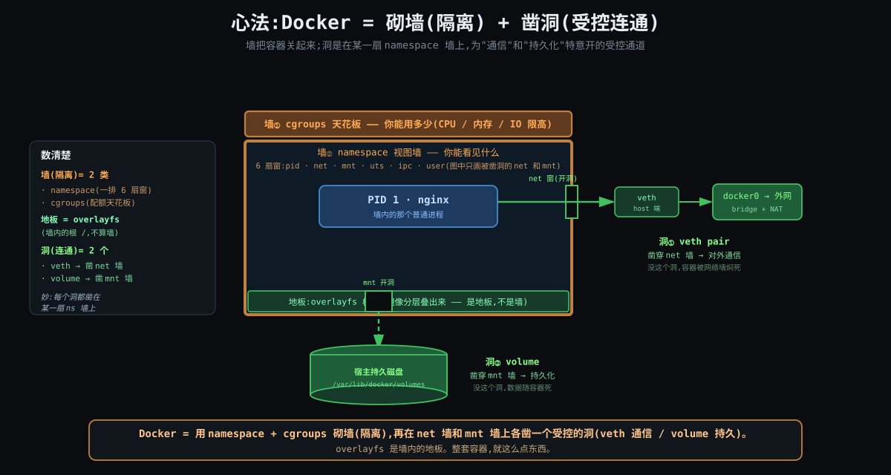
把数字数精确:
- 墙(隔离)= 2 类,不是更多:
- namespace = 视图墙(你能看见什么)。它不是一堵,是一排 6 扇窗,每扇隔离一类:
pid/net/mnt/uts/ipc/user。 - cgroups = 配额天花板(你能用多少:CPU / 内存 / IO)。
- overlayfs 不是墙,是地板 —— 容器站着的那层镜像叠出来的根
/(在公寓类比里,它是"室内装修",是墙内的东西,不是墙本身)。 - 洞(受控连通)= 2 个,而且妙在 —— 每个洞都是凿在某一扇 namespace 墙上的:
- 洞① veth pair:凿穿 net 墙 → 容器能对外通信(否则被网络墙焖死)。
- 洞② volume:凿穿 mnt 墙 → 容器能把数据持久化到宿主(否则数据随容器死)。
为什么这个心法值钱: "墙"和"洞"是一对对偶 —— 隔离是默认,连通是例外。容器的每一种"对外打交道"的能力(通网、存数据,以及后面会遇到的共享 IPC、挂宿主目录…),本质都是在某一堵 namespace 墙上,开一个受控的口子。抓住这条,后面再多的容器特性你都能归位:它要么是新砌一堵墙,要么是在某堵墙上凿一个洞。
注:容易把数字数成 3~4 堵墙 —— 多半是把 overlayfs(地板)、或把"网络"单独算成了墙。其实网络就是 namespace 的 net 那扇窗,而且它恰好是 veth 这个"洞"凿穿的地方。所以严格是 2 类墙 + 1 块地板 + 2 个洞。
§0.1 旁注:Docker 确实从生活里借了很多词
"墙 / 表 / 胶片 / 管道"这些类比之所以都能套上,不是巧合。但要分清两种"借":
- 字面照搬生活的词(设计者故意的):
- container(集装箱) —— Docker 整个品牌就建在这隐喻上:标准箱子,哪条船 / 吊车 / 卡车都同样对待 → "一次打包,到处运行"。
- image(镜像)· registry(仓库 / 登记处)· volume(卷)· port(端口,借自物理接口)· bridge(网桥,借自现实的桥 / 交换机)· mount(挂载,借自当年物理"装上"磁带 / 磁盘)。
- 从更早的工程传统借的(不是日常生活):
namespace(编程里的命名空间)、cgroups(控制论 / 工程)、写时复制 CoW(很老的计算机技巧)、联合挂载(文件系统研究)。
更深一层(这才是关键): 之所以"电表 / 隔墙 / 叠胶片 / 管道"都能套上,是因为底层问题本来就是同一个物理问题 —— 公平分配稀缺资源 → 计量(电表);邻里隐私 → 砌墙;复用公共件 → 分层叠放;连通隔离的空间 → 管道 / 桥。计算机一次次撞上这些老问题,自然一次次长出和现实同构的形状。
⚠️ 但记住:类比是脚手架,不是房子本身。 它帮你爬上去理解,但会在某处断裂 —— 比如"overlayfs = 日历"就只接住了"累积写入"一面,漏了分层 / 复用 / 写时复制(见 §4.4 的"透明胶片"修正)。先借类比拿直觉,再回到机制验证,是这趟旅程最稳的学法。
§1 一张全景图:四个区,先看摆位置
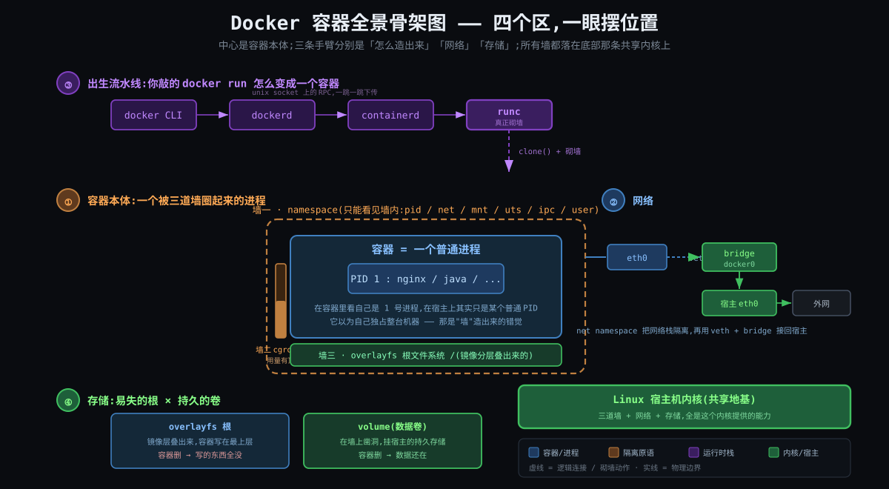
这张图是这一节的"总地图",你能从它读出五件事:
- 中心是容器本体(区①) —— 一个进程(PID 1),外面套着三道墙:namespace(看得见什么)、cgroups(用得了多少)、overlayfs(站在什么文件系统上)。
- 顶上是出生流水线(区③) —— 你敲的
docker run经过docker CLI → dockerd → containerd → runc一路下传,最后由 runc 真正"砌墙生孩子"。 - 右边是网络(区②) —— 容器有自己隔离的网络栈(net namespace),再用 veth pair + bridge 接回宿主、接向外网。
- 左下是存储(区④) —— 易失的 overlayfs 根(随容器删掉)和持久的 volume 卷(独立于容器存活)是一对反义词。
- 底下那条绿带是命门:共享内核 —— 四个区里所有的"墙"和"管子",全是同一个 Linux 内核提供的能力。容器没有自己的内核 —— 记住这条,下一节就靠它一刀切开"容器 vs 虚拟机"。
§2 它不是什么:容器 vs 虚拟机(灵魂问题的第一刀)
你灵魂问题的前半句是"它和虚拟机的根本区别"。答案出奇地简单 —— 区别只在一层:谁拥有内核。
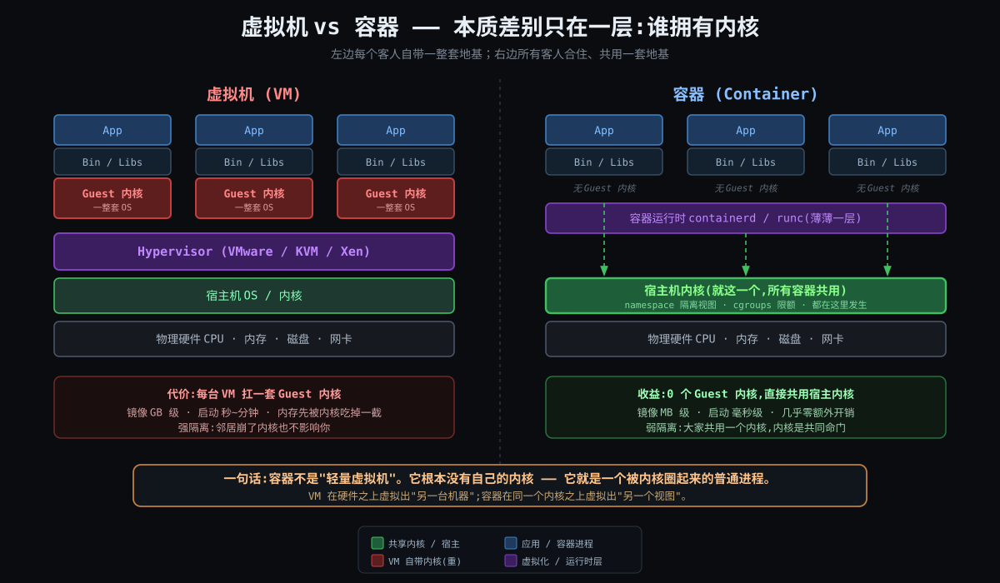
- 虚拟机:在硬件(或宿主内核)之上架一层 Hypervisor,虚拟出"另一台完整的机器"。每台 VM 里自带一整套 Guest 内核。这就是它"重"的全部来源 —— 镜像 GB 级、启动要秒到分钟、内存先被 Guest 内核吃掉一截。
- 容器:没有 Guest 内核。所有容器共用宿主机那一个内核,中间只隔着 containerd/runc 这薄薄一层。所以镜像 MB 级、启动毫秒级、几乎零额外开销。
| 维度 | 虚拟机 | 容器 |
|---|---|---|
| 谁拥有内核 | 每台 VM 自带一套 | 全部共用宿主那一个 |
| 隔离边界 | Hypervisor(硬件级虚拟化) | 内核的 namespace + cgroups |
| 启动量级 | 秒 ~ 分钟 | 毫秒 |
| 镜像/体积 | GB 级 | MB 级 |
| 隔离强度 | 强(邻居崩了内核也不影响你) | 弱(共用内核 = 共同命门) |
| 一台机器能跑多少 | 几十台 | 成百上千 |
生活化版本(把上面这张表说成一个搬家故事):
虚拟机时代,搬一个车间 = 搬一整栋厂房。 你明明只想挪那个造铅笔的车间,但 VM 的打包单位是"整栋楼" —— 车间连同厂房的钢筋水泥、水电管线(整套 Guest OS)一起装进行李(所以 GB 级);到了目的地,还得把这栋楼重新立起来、通上电(启动 Guest OS,秒~分钟),车间才能开工。耗时耗力。
容器时代,搬一个车间 = 只吊走车间本身。 目的地的厂房(宿主机 + 它的内核)本来就矗在那儿,你只运车间这个箱子(应用 + 依赖,MB 级),到了用标准水电煤接口(内核 ABI / OCI,见 §3.1)咔哒一插,毫秒开工。
镜像小、启动快,根源是同一个:厂房不在你的行李里 —— 它在目的地等你。(= 容器不带内核,内核是宿主现成的)
一句话: VM 在硬件之上虚拟出"另一台机器";容器在同一个内核之上虚拟出"另一个视图"。容器不是"轻量级虚拟机" —— 它根本不在"虚拟机"这个物种里。这也解释了容器的代价:隔离是弱的,内核一旦被攻破或 panic,墙内墙外一起完。
§2.1 一个一眼分辨"容器还是 VM"的小实验
把"容器 = 宿主上的普通进程"这句话变成可手验的事实:
- 在宿主机上
ps aux | grep nginx—— 看得到容器里的 nginx(它就是宿主上一个普通进程,只是 PID 不是 1,而是某个大数字如 12345)。 - 在容器里
ps—— 看不到宿主的 sshd 等进程(pid namespace 只让它看见自己这棵子树,从它的 PID 1 起)。
这个不对称本身就是容器和 VM 的试金石:
- 容器:墙是单向玻璃 —— 宿主看得进容器,容器看不出宿主。因为是同一个内核,宿主的 pid namespace 是"根",俯瞰得到所有子 namespace 的进程(同一个进程在两边是两个 PID、两个视图)。
- 虚拟机:宿主
ps看不到 Guest 里的 nginx —— 它在另一个内核里,两边互相隐身,是对称的。
一招辨真身:宿主能不能
ps到里面的进程?能 = 容器(共享内核),不能 = 虚拟机(各有内核)。 这把"不是虚拟机"从概念变成了可手验的事实。
§3 用一个类比把它焊进直觉:合租公寓楼
光说"共享内核"还是抽象。换个生活场景,你在类比内部就能自己推导出容器的每条性质 ——
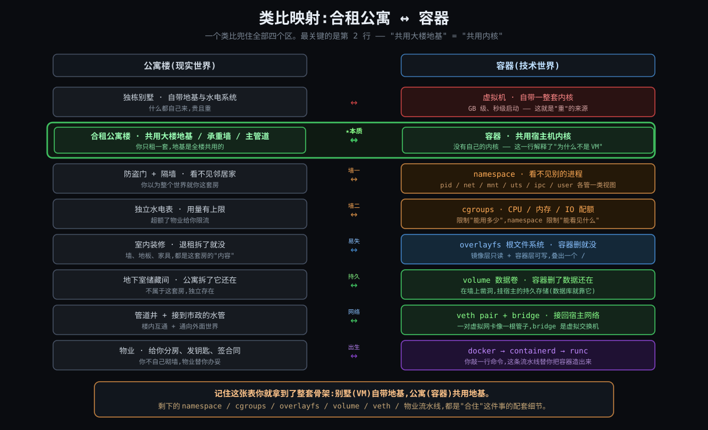
这个类比的杀手锏在第 2 行:
- 独栋别墅 = 虚拟机:自带地基、自带水电系统,什么都自己来 → 贵、重。
- 合租公寓楼里的一套 = 容器:共用大楼的地基、承重墙、主管道,你只租一套房 → 轻。"共用大楼地基"就是"共用内核"。
钉住这一行,其余全是"合住"这件事的配套:
| 公寓世界 | 容器世界 | 它是哪个区 |
|---|---|---|
| 防盗门 + 隔墙(看不见邻居家) | namespace(看不见别的进程) | 区① 墙一 |
| 独立水电表(用量有上限) | cgroups(CPU/内存配额) | 区① 墙二 |
| 室内装修(退租拆了就没) | overlayfs 根(容器删就没) | 区④ 易失 |
| 地下室储藏间(公寓拆了它还在) | volume(容器删了数据还在) | 区④ 持久 |
| 管道井 + 接市政的水管 | veth pair + bridge | 区② 网络 |
| 物业(分房、发钥匙) | docker → containerd → runc | 区③ 出生 |
一个类比,四个区全兜住,而且"共用大楼地基 = 共用内核"直接回答了"为什么不是虚拟机"。
§3.1 第二个类比:集装箱 —— 解释"可移植"那一面
公寓楼讲清了隔离 / 共享内核;但容器还有另一面 ——"一次打包,到处运行",这一面用集装箱(Docker 的本名)讲最顺。把容器想成一个车间集装箱:
| 集装箱世界 | 容器世界 |
|---|---|
| 箱里的工人 + 机器(一起被吊走) | 应用 + 它自带的依赖 / 运行时(一起封进镜像) |
| 箱子底部的标准插头(水/电/煤气接口统一规格) | 标准接口:OCI 镜像格式 + Linux syscall ABI |
| 只要码头 / 大楼的水电制式对得上,搬过去就能开工 | 只要宿主提供兼容的内核 ABI,容器搬过去就能跑 |
| 箱里的工人无感(不知道换了码头) | 容器里的进程无感(不知道换了宿主) |
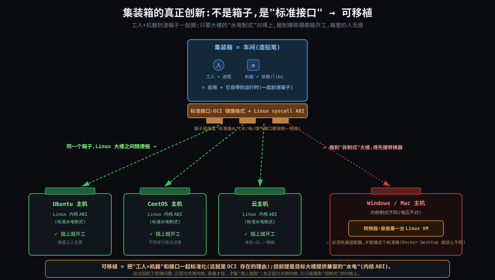
集装箱真正的创新,从来不是"箱子",是"接口标准化" —— 角件尺寸全球统一,于是任何吊车、货轮、卡车、港口都能同样对待它。Docker 干的是同一件事:把"应用怎么打包、怎么和宿主打交道"标准化(后来固化成 OCI 标准),于是容器在任何兼容宿主上都能跑。这就是为什么"在我机器上明明能跑"这句老话被 Docker 终结了 —— 工人和机器是和箱子一起搬走的,不再依赖目的地大楼里恰好装了什么。
但有个关键边界(也是最常被误解的地方): "到处运行"是有前提的 —— 目标大楼必须提供兼容的水电制式,也就是兼容的内核:
- Linux 容器在 Linux 宿主之间随便搬(Ubuntu → CentOS → 云),因为 Linux syscall ABI 高度稳定、各发行版通用。
- 但搬到内核制式不同的 Windows / Mac 上就插不上 —— 所以 Docker Desktop 偷偷在底下塞了一台 Linux 虚拟机当"转换器"。
这恰好又回扣灵魂问题:正因为共用内核,容器才轻、才能"插上就跑";也正因为共用内核,它只能插到"同制式"的内核上。 轻量和"绑定内核家族"是同一枚硬币的两面 —— 这是容器和"自带整套内核、能跨内核家族跑"的虚拟机最后的分界。
§3.2 生活 ↔ 技术 对照图册
把前面那些类比统一做成"左边生活画面 / 右边真实技术细节(带真参数、真路径)"的对照 —— 一眼看清每个生活意象背后到底对应什么机制。
① 总览:一栋容器大楼,就是一台主机
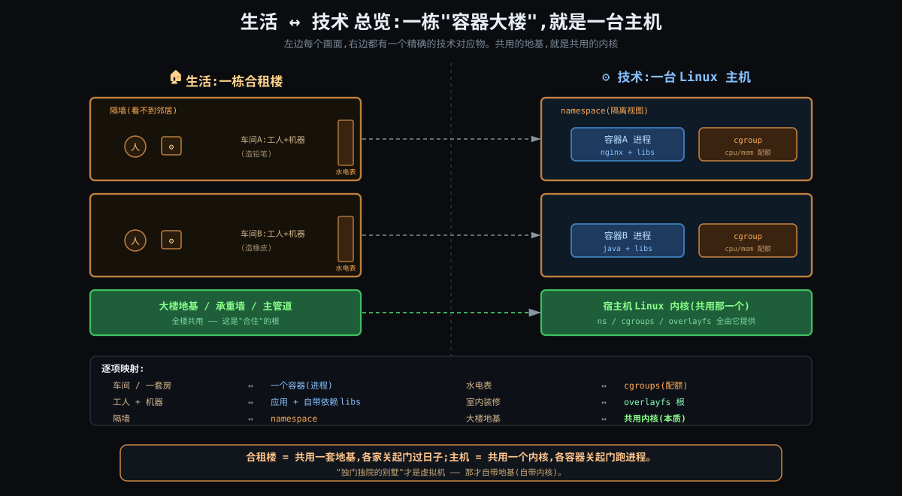
② 单向玻璃房:namespace 的六扇窗
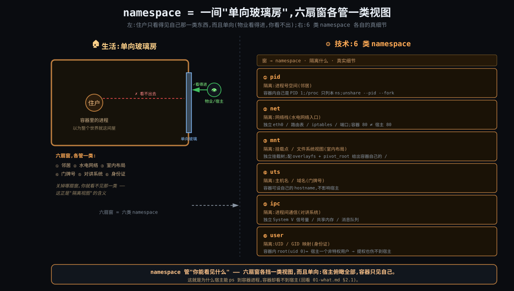
③ 墙上三块表:cgroups(右半边是真实 cgroup v2 参数)
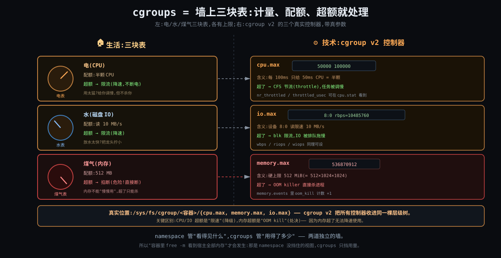
④ 一摞透明胶片:overlayfs(右半边是真实 lowerdir/upperdir/CoW)
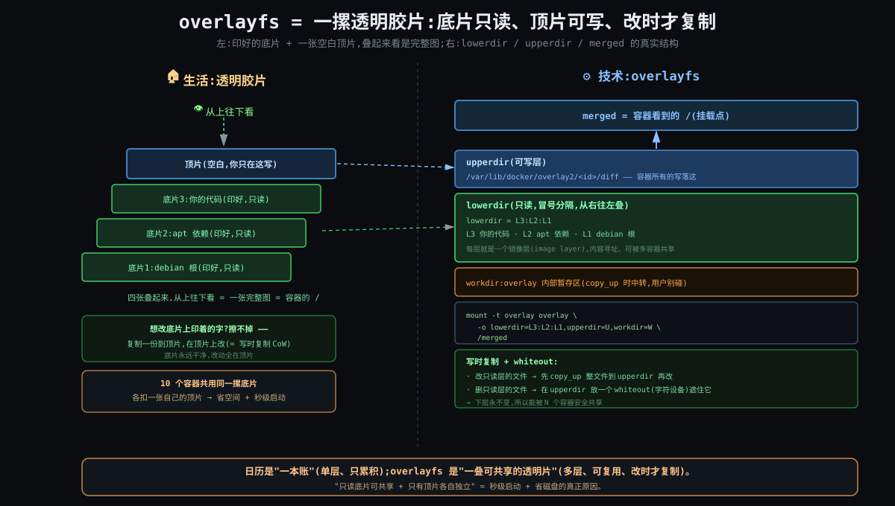
⑤ 管道井 + 市政总阀门:网络(右半边是真实 veth/bridge/NAT 规则)
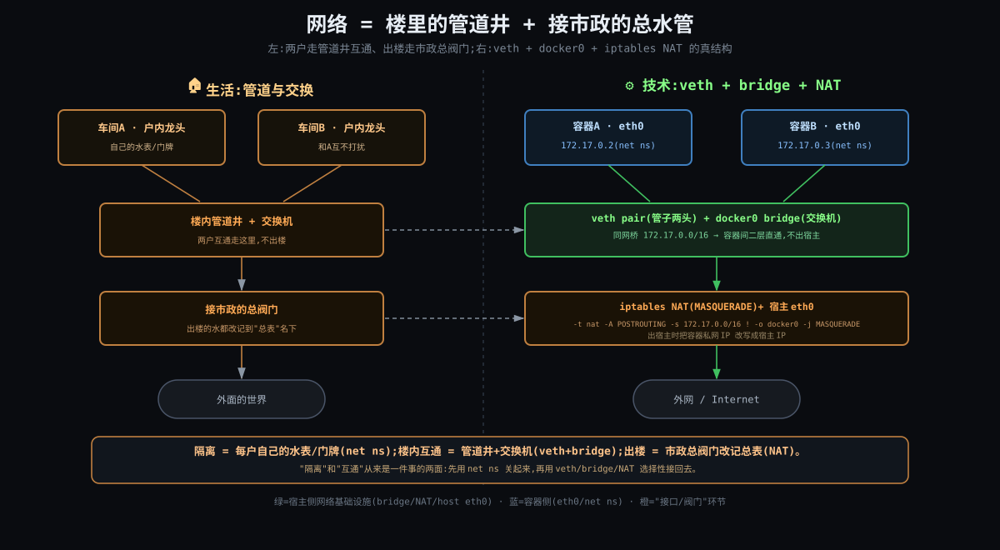
⑥ 物业接力:出生流水线(右半边是真实 socket 路径 + runc 调用)
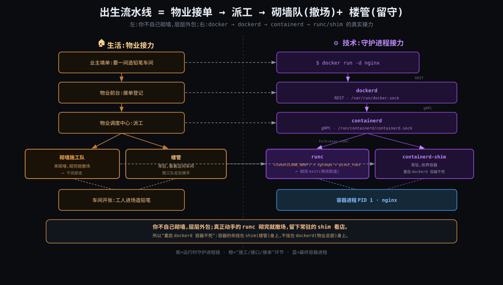
看图顺序:先看 ① 总览拿到"大楼 = 主机"的整体映射,再分别钻三道墙(②③④),最后看两个"洞 / 流程"(⑤ 网络、⑥ 出生)。每张图右半边的参数(
cpu.max、memory.max、lowerdir=L3:L2:L1、6 类 ns、iptables MASQUERADE、/var/run/docker.sock、clone(CLONE_NEW*))就是后面"怎么工作"会逐个展开的入口 —— 生活类比帮你记住"形状",技术细节供你之后对着真东西验证。
§4 四个区逐个点名(摆位置,机制留后面钻)
下面把四个区一个个点到。注意分寸:这里只回答"它是什么、在哪、负责啥",不回答"它内部怎么实现" —— 那是后面专门钻机制时的事。
§4.1 区① 带墙的进程:三道墙
容器这个进程,被三道性质不同的墙圈着:
- namespace —— 隔离"看得见什么"。 内核把"全局资源"按类型切片,每个容器拿到自己的一片视图。一共 6 类,各管一种:
| namespace | 隔离的是 | 容器里的效果 |
|---|---|---|
| pid | 进程号空间 | 容器里自己是 PID 1,看不到宿主和别的容器的进程 |
| net | 网络栈 | 自己的网卡 / IP / 路由表 / iptables(见区②) |
| mnt | 挂载点 / 文件系统视图 | 自己的 /(配合 overlayfs,见区④) |
| uts | 主机名 / 域名 | 容器能有自己的 hostname |
| ipc | 进程间通信(信号量/共享内存) | 容器间 IPC 互不打扰 |
| user | 用户 / 组 ID 映射 | 容器里的 root 可以映射成宿主的普通用户 |
- cgroups —— 限制"用得了多少"。 namespace 管"可见性",cgroups 管"配额":这个容器最多用多少 CPU、多少内存、多少磁盘 IO。超了就限流 / OOM kill。一句话区分:namespace 决定你能看见什么,cgroups 决定你能用多少。
- overlayfs —— 决定"站在什么文件系统上"。 给容器一个叠出来的根
/(详见区④)。
这三道墙的内核实现(
clone()/unshare()/setns()怎么建 namespace、cgroups v1/v2 层级怎么计账)是后面"怎么工作"的主战场,这里先只摆位置。
§4.2 区② 网络:隔离与互通是一体两面
容器默认有自己隔离的网络栈(net namespace:独立网卡、IP、路由表、iptables、端口空间 —— 容器里的 80 端口和宿主的 80 端口是两回事)。隔离之后还要能互通,靠的是 veth pair + bridge:
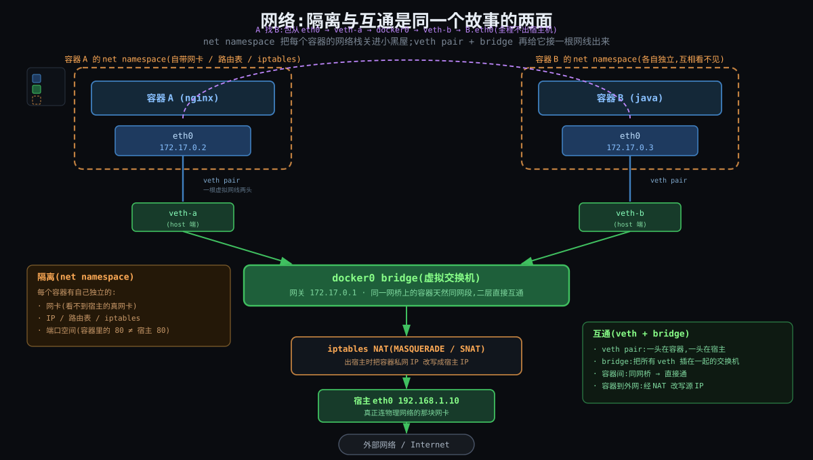
- veth pair —— 一对虚拟网卡,像一根网线的两头:一头(
eth0)在容器的 net namespace 里,另一头(veth-xxx)在宿主上。 - bridge(docker0) —— 一台虚拟交换机,把所有容器的宿主端 veth 插在一起。同一个网桥上的容器天然在同一网段(172.17.0.0/16),二层直接互通(容器 A 找容器 B,包全程不出宿主机)。
- 出外网 —— 包经 docker0 → 宿主 eth0,中途被 iptables NAT(MASQUERADE) 把容器私网 IP 改写成宿主 IP。
这就是你关心的"容器间隔离 + 互通":隔离来自 net namespace,互通来自 veth + bridge,出网来自 NAT。每一跳内核里怎么转包,留到后面钻。
§4.3 区③ 出生流水线:你敲的命令怎么变成容器
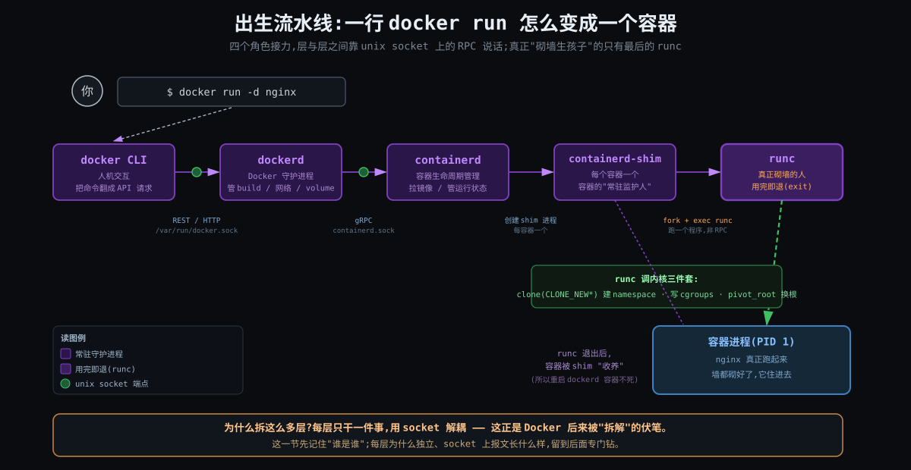
四个角色接力,层与层之间靠 unix socket 上的 RPC 说话:
| 角色 | 是什么 | 怎么通信 |
|---|---|---|
| docker CLI | 人机交互,把命令翻成 API 请求 | → 走 REST/HTTP,经 /var/run/docker.sock |
| dockerd | Docker 守护进程,管 build / 网络 / volume | → 走 gRPC,经 /run/containerd/containerd.sock |
| containerd | 容器生命周期管理(拉镜像、管状态) | → 创建 containerd-shim |
| containerd-shim | 每容器一个的"常驻监护人" | → fork+exec runc(跑一个程序,不是 RPC) |
| runc | 真正砌墙的人:调内核三件套 clone(CLONE_NEW*) 建 namespace + 写 cgroups + pivot_root 换根,干完就 exit | 退出后,容器被 shim "收养" |
两个值得记住的架构事实:① 真正动内核砌墙的只有 runc,而且用完即退;② 容器被 shim 收养,所以重启 dockerd 容器不会死。"为什么要拆这么多层 + socket 上报文长什么样",留到后面 —— 这也是 Docker 后来被 containerd/runc"拆解"的伏笔。
§4.4 区④ 存储:易失的根 ⨯ 持久的卷
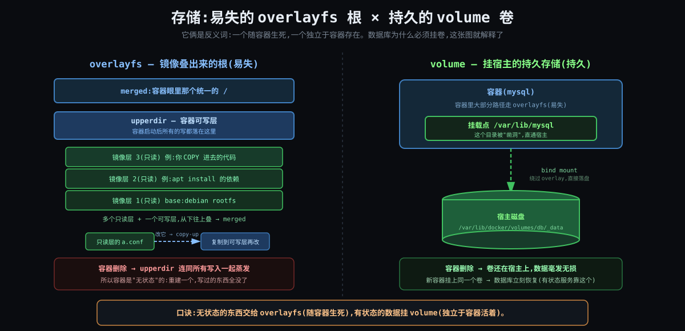
- overlayfs(易失) —— 容器的根
/是叠出来的:底下若干镜像只读层(lowerdir,层间可复用、可缓存),最上面一个容器可写层(upperdir),合并成容器看到的merged。改一个只读层里的文件会触发写时复制(copy-up):先复制到可写层再改。容器删除 → 可写层连同所有写入一起蒸发。 - volume(持久) —— 在墙上"凿个洞":把容器里某个目录(如
/var/lib/mysql)bind mount 到宿主的持久存储(/var/lib/docker/volumes/...),绕过 overlay 直接落盘。容器删除 → 卷还在,新容器挂上即恢复。
口诀:无状态的东西交给 overlayfs(随容器生死),有状态的数据挂 volume(独立于容器活着)。 数据库为什么必须挂卷,这一对就解释清楚了。overlay 的 CoW 内核实现细节,留到后面钻。
💡 overlayfs 的生活类比 —— 不是"日历",是"一摞透明胶片": "日历"只接住了一面(可写层像一页页累积变化),漏了 overlayfs 最值钱的三个性质:分层、只读复用、写时复制。更准的类比是一摞透明胶片(老式投影片,或想成 PS 图层):
- 底下几张是预先印好、只读的片(镜像层:debian 根 + apt 依赖 + 你的代码);
- 最上面扣一张空白透明片,你只在这张写(容器可写层);
- 从上往下看,叠起来就是完整画面(容器看到的
/); - 想改下面印好的字?擦不掉,只能在顶片上盖着写(= 写时复制 / whiteout);
- 十个容器共用同一摞底片,各扣一张自己的顶片(= 镜像层复用 → 秒级启动 + 省空间的根源);
- 扔掉顶片,底下那摞还干净,给下一个用(= 容器删除,可写层蒸发,镜像层不动)。
一句话:日历是"一本账"(单层、只累积);overlayfs 是"一叠可共享的透明片"(多层、可复用、改时才复制)。
§4.5 墙是漏的:一个 512MB 容器,为什么自报 64GB?
做个实验,把"墙(namespace)"和"表(cgroups)"彻底分开看:
用 cgroups 限死容器最多用 512 MB 内存,宿主有 64 GB。在容器里敲
free -m—— 它报的"总内存"是 512 MB 还是 64 GB?
答案:64 GB(宿主的),不是 512 MB。
为什么?因为两道墙是独立的,而且 namespace 这道墙有缝:
free -m读的是/proc/meminfo,而/proc/meminfo根本没被 namespace 隔离(内核里没有"meminfo namespace")。容器透过这扇没磨砂的窗,看到的是宿主的全局内存。- cgroups 的 512 MB 限制真实存在,但它只管"用量"(用超了 OOM kill),不改"视图"。于是容器看见 64 GB,却只能用 512 MB。
这正是坑过无数人的"容器里 JVM / Node 自杀"事故:
- 老 JVM 按
/proc/meminfo估堆:看见 64 GB → 默认最大堆设到十几 GB → 一涨过 512 MB → 被 cgroups OOM kill。容器莫名其妙反复重启,日志还看不出原因。 - 同理
/proc/cpuinfo/nproc也没 namespace 化:Node 线程池、JVM 的 GC 线程数会按宿主全部核数开,在小容器里直接打爆。
怎么治:
- 真正的限额在另一个路径:
/sys/fs/cgroup/memory.max(v2)。应用得知道去那儿读,而不是信/proc/meminfo。 - 现代 JVM(JDK 8u191+ / 10+)默认
-XX:+UseContainerSupport,会自动读 cgroup 限额; - 或用 LXCFS 伪造一个反映 cgroup 的
/proc/meminfo,骗老程序看到正确的数。
用我们的类比说: 水表(cgroups)给你限了 512 升/天,但墙上那个水位计(free / /proc/meminfo)显示的是全楼 64000 升的总水箱。你信了水位计,开 party、把龙头开到底 —— 结果水表在 512 升处"咔"一声给你掐了(OOM)。"仪表显示的"和"你真被允许的"对不上,就是这个 bug 的全部。
这个实验最大的价值,是逼出下一个问题:墙不是免费的,也不是完美的。 它有缝(
/proc没全隔离)、有代价(隔离和限额都要内核记账)、有取舍(强隔离 vs 轻量)。"为什么非要砌这些墙、每道墙换来什么、又付出什么" —— 这正是下一段要钉死的事。
§5 关键词速查表
后面所有阶段都会反复用到这些词,先混个脸熟(每个一句话,不展开):
| 术语 | 一句话说明 |
|---|---|
| 容器 container | 镜像跑起来的实例 = 一个被内核圈起来的普通进程 |
| 镜像 image | 打包好的只读 rootfs + 元数据,是容器的"模板" |
| 镜像层 layer | 镜像由多层只读层叠成,层间可复用、可缓存(秒级启动的根) |
| namespace | 隔离"看得见什么";6 类(pid/net/mnt/uts/ipc/user) |
| cgroups | 限制"用得了多少";CPU / 内存 / IO 配额 |
| overlayfs | 把镜像只读层 + 容器可写层叠成一个 /(联合文件系统) |
| volume | 挂宿主持久存储的数据卷,独立于容器生死 |
| veth pair | 一对虚拟网卡,一头在容器、一头在宿主 |
| bridge / docker0 | 虚拟交换机,把容器们连在同一网段 |
| dockerd | Docker 守护进程,管 build / 网络 / volume |
| containerd | 容器生命周期管理守护进程(事实标准运行时) |
| runc | 按 OCI 规范真正调内核砌墙的工具,用完即退 |
| OCI | 容器开放标准(镜像格式 + 运行时规范) |
| registry | 镜像仓库(Docker Hub 等),push / pull 镜像 |
§6 它在技术栈里的位置(上下左右的邻居)
容器不是孤立的,它夹在内核和编排之间:
┌─────────────────────────────────────────────┐
上面 │ 编排 / 平台:Kubernetes(经 CRI 调 containerd)│ ← 谁在用容器
(谁用它)│ CI/CD · PaaS · Serverless │
└───────────────────┬─────────────────────────┘
│ CRI / Docker API
┌───────────────────┴─────────────────────────┐
这一层 │ Docker 引擎 dockerd │
(容器栈) │ └ 容器管理 containerd │ ← 本节的主角们
│ └ OCI 运行时 runc │
└───────────────────┬─────────────────────────┘
│ clone / setns / cgroups / pivot_root
┌───────────────────┴─────────────────────────┐
下面 │ Linux 内核:namespace · cgroups · overlayfs │ ← 能力的真正来源
(它依赖谁)│ · netfilter/iptables · veth │
└─────────────────────────────────────────────┘
平行(同物种,后面对比会用到):
· 运行时:crun / gVisor / Kata Containers
· 工具链:podman / buildah(无 daemon)
· 标准:OCI(镜像+运行时)、CRI(K8s↔运行时接口)三句话记住位置:
- 下面是内核 —— 容器的全部能力(墙、网络、文件系统)都是内核给的,容器自己不造能力。
- 它这一层是"管理 + 标准化" —— dockerd/containerd/runc 把内核能力包装成"镜像、容器、
docker run"这套好用的抽象。 - 上面是编排 —— 单机几个容器靠 Docker,成百上千台机器上调度容器靠 Kubernetes(它绕过 dockerd,直接经 CRI 调 containerd)。
§7 呼应灵魂问题:这一节闭环了多少
你的灵魂问题有三问,这一节的战果:
| 灵魂问题的三问 | 这一节的交付 | 闭环度 |
|---|---|---|
| ① 容器到底是什么? | 答了:一个被内核圈起来、自以为独占机器的普通进程 | ✅ 基本闭环 |
| ② 和虚拟机的根本区别? | 答了:区别只在一层 —— 谁拥有内核(VM 自带 / 容器共用) | ✅ 基本闭环 |
| ③ 跑起来时内核里到底发生了什么? | 只摆了位置:namespace/cgroups/overlayfs/veth 各在哪、各管啥;但"内核里逐步发生什么"的机制还没钻 | 🟡 约 30% |
留白(留给后面的旅程):
- 三道墙的内核实现:
clone()/unshare()/setns()怎么建 namespace、cgroups 怎么计账、overlay 的 copy-up 怎么发生 —— 先到"为什么必须存在"建一份约束清单,再到"怎么工作"逐个钉死。 - 网络逐跳转包、unix socket 上 RPC 的报文、镜像分层凭什么做到秒级启动 —— 同样留到后面用更密的图往死里抠。
- Docker 为什么后来被自己拆成 containerd/runc/OCI(你重心里的"演化派"尾声)—— 留到讲"它怎么来的"和收尾。
一句话收口:这一节给了你一张完整的地图,标了每个地洞的坐标。接下来我们不再"摆位置",而是挑洞往下钻 —— 从"为什么非要有这些墙不可"开始。
阶段 2:Docker / 容器为什么必须存在
灵魂问题(贯穿全程): 容器到底是什么?它和虚拟机的根本区别在哪?当一个容器真正跑起来的那一刻,Linux 内核里到底发生了什么 —— namespace、cgroups、镜像分层各自扮演什么角色?
这一节的本分: 上一节我们钉死了"容器是什么"(一个被圈起来的进程)和"它不是什么"(不是虚拟机)。但还差一个更根本的问题:为什么非要有这个东西? 本节先回到没有容器的世界,把痛一幕一幕演出来(痛点驱动,你选的路),再做尸检 —— 从五幕痛史里反推出一份不可再分的硬约束清单(C1~C3)。这份清单是后面所有讨论的脊梁:以后讲到任何机制,我们都会回头指着说"这是 C1 + C2 逼出来的",而不是"设计者喜欢这样"。
§0 序幕:规模浪潮(贯穿五幕的暗线)
进五幕之前,先把舞台背景立起来,因为它是把所有痛从"难受"升级成"绝路"的那个变量:
web 应用大规模集群的时代来了。 2003 年一个网站背后可能是 10 台服务器;2008 年,百级;2011 年之后,几百几千台成为常态。而与此同时 —— 人没有变多,人也变不多。
- 10 台机器:人肉运维,痛但能扛
- 100 台:勉强,靠堆人、堆值班、堆流程
- 几百几千台:彻底不可能 —— 手工运维的成本是 O(机器数 × 环境数 × 发布频率),三个因子全在涨,而人的速度和正确率是常数
不只是部署:监控、升级、审计在这个尺度上连"对象"都找不到 —— 每台机器都长得不一样,你审计什么?这条暗线会在第五幕汇入主剧情,并直接喂出 C3。
§1 没有它的世界:五幕痛史
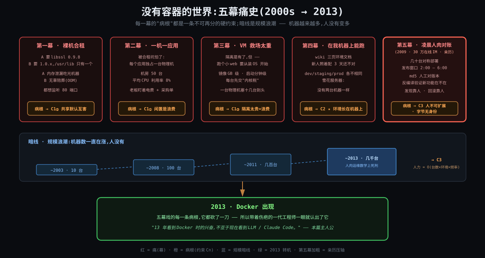
五幕在历史上就是按这个顺序连环爆的:每一幕的"解法"制造出下一幕的"痛",直到约束全部暴露,只剩一个形状能活 —— 那个形状就是容器。
§1.1 第一幕 · 裸机合租(2000s 前中期)
一台 8 核 16G 的服务器,跑两个应用,省钱省事。然后:
- 依赖打架。 应用 A 是个老 PHP 站,要
libssl 0.9.8;应用 B 新上,要1.0.x。可/usr/lib/libssl.so只有一个位置。装 B 时升级了 libssl → A 当晚段错误。同样的戏码在 Python 2.4 vs 2.6、JDK 5 vs 6、glibc 之间反复上演;工程师开始往~/.bashrc里塞LD_LIBRARY_PATH黑魔法,每台机器的环境变量都长成了化石层。 - 资源践踏。 A 有个内存泄漏,一夜吃光 16G → 内核 OOM killer 出场随机杀人 → B 无辜陪葬。或者 A 凌晨跑批,磁盘 IO 拉满 → B 的在线接口延迟从 10ms 飙到 2s。这就是教科书上的 noisy neighbor —— 公地没有围栏。
- 全局命名冲突。 A 和 B 都想监听 80;crontab、
/tmp、/var/log全是公地,谁都能踩谁。
病根: 同一个内核上,进程天生共享一切 —— 一个文件系统、一个端口空间、一个资源池。Unix 设计如此,没有"我的"和"你的"。(→ C1 子事实②"共享默认互害";依赖打架那一刀还同时喂 C2 ★)
§1.2 第二幕 · 一机一应用
被合租坑怕了,运维定了铁律:一个应用一台物理机,物理隔离,天下太平。然后财务来了:
- 机房 50 台服务器,平均 CPU 利用率 5~10%。一台机器 90% 的生命在空转,但电费、机架费、折旧、维保照付。
- 上新应用要采购新机器:审批 → 采购 → 上架 → 装机,周期以周计。
- 业务一扩张,这套打法的账单按应用数线性涨 —— 而其中九成的钱买的是"空转"。
病根: 隔离的最小单位被钉死在"一台物理机",粒度太粗、太贵。CPU 和内存没有用于用户计算,用于了空转。经济账逼着你必须回去合租 —— 于是又掉回第一幕。死循环。(→ C1 子事实①"闲置是浪费" —— 正是它堵死了逃离合租的退路)
§1.3 第三幕 · VM 救场,但太重(2008 前后,亲历)
虚拟化(VMware / Xen / KVM)登场,合租问题解了:每个应用一台 VM,隔离是真隔离,还能整机快照。但是 ——
亲历版: "以前都是用虚拟机来搭环境(VMware)。最大的痛点:镜像太大、启动太慢。为了搭一个小小的开发环境、跑一个 web 服务器,可能要从操作系统开始搭 —— 时间成本、空间成本太大了。"
把这段痛展开成数字:
- 从 OS 开始搭:建 VM → 装 OS(几十分钟)→ 打补丁 → 配运行时 → 才轮到部署你真正关心的那个 web 服务。你要的是车间,但 VM 强迫你先盖厂房。
- 镜像 GB 级:一个 CentOS 模板 2~10 GB。拷一份环境 = 拷一栋楼。
- 启动分钟级:Guest OS 完整 boot 一遍,BIOS → bootloader → 内核 → init → 服务。
- 内核税:每台 VM 几百 MB~GB 内存先交给 Guest OS 自己用,一台物理机塞十几二十台就到顶。
- CI 场景雪上加霜:每跑一轮测试起一台干净 VM?等到心死。于是大家复用"脏"环境 → 测试结果开始不可信。
病根: 隔离是有了,但隔离的代价本身变成了新的浪费 —— 每户陪一套 Guest OS,把合租省下来的 CPU / 内存又吐了回去。(→ C1 子事实③"隔离太贵同样是浪费")
§1.4 第四幕 · "在我机器上能跑"
与此同时,另一条战线上的痛在发酵 —— 环境是手工配出来的:
- wiki 上三页《环境搭建文档》,新人照着配 3 天,还配不对 —— 因为文档永远落后于现实。
- dev 是 macOS + Python 2.7.10,staging 是 CentOS 6 + 2.6.6,prod 是 CentOS 5 + 2.4.3。代码在 dev 跑得好好的,上去就崩。"在我机器上能跑"成为整个行业的甩锅语。
- 雪花服务器:每台机器被历任运维手工 patch 过,没有两台一样;重装一台老机器 = 考古工程,没人敢动。
病根: "环境"不是一个工件,而是一段历史 —— 它长在机器上(/usr/lib、/etc、$PATH),是机器的属性而非应用的属性。所以不可复制、不可审计、不可回滚。(→ C2 ★)
§1.5 第五幕 · 2009,凌晨两点的人肉对账(压轴 · 亲历)
场景: 同时在线 30 万人的 IM 应用,分布式集群,几十台机器对称部署。发布窗口:凌晨 2:00 – 6:00(低峰期)。
那四个小时里发生的事:
- 逐台机器分发新程序包;
- 逐台手动核对 md5 —— 这是当年唯一能确认"这台机器上的包版本是对的"的手段;
- 还不放心(md5 也可能对错表)?拿反编译工具把二进制拆开,肉眼确认新功能的代码真的在里面;
- 逐台重启、反复校验、反复测试,确保版本是对的;
- 盯监控到天亮 —— 上线失败靠人盯出来,回滚靠人手撤 —— 费时费力,效率低。
最怕的两种死法:看错一个 md5 → 某台机器跑着旧版本 → 集群行为不一致 → 白天出现"只有部分用户复现"的诡异 bug;机器环境有差异 → 同一个包在某台上就是起不来 → 上线失败。
这一幕的病,比前四幕都深,因为它暴露了两个"那个时代根本没有的东西":
- 部署工件没有身份。 "这台机器跑的是什么版本"无法被机器证明,只能被人证明。验证手段穷尽到反编译,说明系统层面完全不存在"工件身份"这个概念 —— 文件名和文件内容之间,没有任何可信绑定。(→ C3 的"字节无身份"子事实)
- 部署是过程,不是工件。 一轮发布 = 一长串由人执行的步骤;步骤不可复制、不可测试、不可审计。几十台尚且要 4 小时 × 多名工程师,而暗线正在涌来:几百台、几千台呢? 人肉模式在数学上被判了死刑。(→ C3 的"人力"子事实;"过程 vs 工件"本身是 C2+C3 的合成症状,见 §2 末注)
五幕落幕。2013 年,Docker 出现 ——
"当我 13 年看到 Docker 的时候,非常兴奋,不亚于现在看到 LLM / Claude Code 等 AI 工具的出现。" —— 本篇主人公
为什么一眼就兴奋?因为外面站着一整代身上带着全部五幕伤疤的工程师 —— 他们不需要被说服,Docker 的每一刀都砍在自己疼了十年的地方。(这句话背后的历史,留给"它怎么来的"那一节展开。)
§2 尸检:不可再分约束清单(C1~C3)
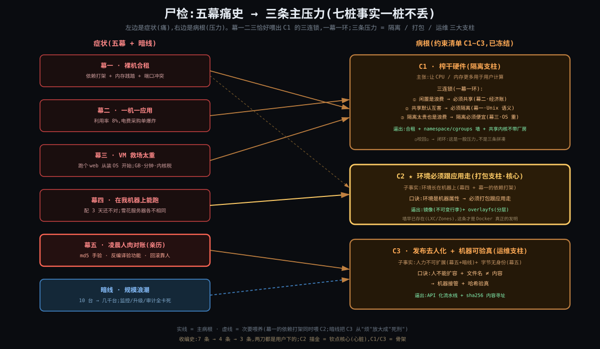
收编史(这份清单是你亲手磨出来的): 初稿立七条 → 你第一刀收编为四条(七桩事实降级为子事实,一桩不丢)→ 你第二刀指出"合租互害"与"单位降级"同根(都源自资源效率),合并定格为 3 条主压力。每条主压力 = 一股不可再分的逼迫。判定标准不变:写不出"不可再分性"的,不配进清单(那些去了 §5 伪约束)。自此 C1~C3 冻结 —— 下一站起,每个机制都挂在这三个编号上。
| # | 主约束(压力) | 来源 | 不可再分性 |
|---|---|---|---|
| C1 | 硬件必须高效用于用户计算(榨干硬件) | 经济现实 + Unix 语义 + OS 结构 | 三桩子事实各自不可再分:账单是物理的;全局命名是 40 年生态;完整 OS 的体积/时序是客观的 |
| C2 ★ | 环境必须跟应用走(核心) | FHS / 动态链接生态 | 应用 = 二进制+libs+配置,散落全局路径;不打包就永远是机器属性 |
| C3 | 发布必须去人化,且机器可验真 | 规模浪潮 + 存储语义 | 人不可并行复制;文件名≠内容,不引入内容寻址只能人肉对账 |
每条展开(后面所有讨论引用的"原文"):
C1 — 榨干硬件:必须共享,必须隔离,隔离必须便宜
主张(用你的原话):必须高效利用硬件资源,让 CPU / 内存更多地用于用户计算 —— 而不是闲置(空转)、打架(互害)、或供养系统自身的开销(Guest OS 税)。
这一股压力推出一条三连锁,每环背后一桩不可再分的子事实:
- 闲置是浪费 → 必须加大共享(子事实·经济账,幕二:独占利用率 5~15%;折旧+电费是物理账单)
- 共享默认互害 → 必须隔离(子事实·Unix 语义,幕一:文件系统/端口/PID 全局命名 + 资源先到先得 —— 40 年生态,改不动应用,只能改"视图")
- 隔离太贵同样是浪费 → 隔离必须便宜(子事实·OS 结构,幕三:完整 OS 是重资产 —— GB 镜像/分钟启动/内存税,每户陪一套 Guest OS 等于把省下的又吐回去)
链条自洽校验:第 3 步咬回第 1 步 —— 用重隔离(VM)满足效率,违背逼出共享的那股原始压力。这是一条压力的闭环,不是三条约束的拼凑。
口诀:榨干硬件 → 必须共享 → 必须隔离 → 隔离必须便宜
逼出:合租(前提)+ namespace/cgroups(墙)+ 共享内核不带厂房(便宜的隔离)
##### C1③ 的隐藏前提:内核接口是"国标插座"(验收问答凝固)
C1③ 说"厂房不进行李"。一个尖锐的追问:目的地厂房的内核版本和你构建时并不相同(Ubuntu 22.04 / 内核 5.15 上构建,CentOS / 内核 4.18 上运行)—— 凭什么车间照样能跑?不是因为"各家设施统一"(它们明明是不同版本),而是三个性质合起来:
- 窄 —— 容器的行李里装着自己的全套用户态(连 glibc 都自带,不用宿主的),它和宿主的唯一接触面只剩系统调用接口:几百个 syscall,整个技术栈里最窄的那道腰。接触面越窄,要保持兼容的东西越少。
- 稳 —— Linux 内核开发的铁律,Linus 执行了三十多年的原话:"We do not break userspace" —— 旧 syscall 的语义永不更改、永不删除,只往后追加。国标插座只加新孔,不改旧孔 —— 2009 年出厂的电器,插今天的插座照样亮。
- 单向 —— 新内核跑旧用户态 ✓(向后兼容);反过来不保证:程序若用了
io_uring(内核 5.1 才有的新孔),搬到 4.18 的老厂房就是ENOSYS(查无此插孔)。可移植的精确表述:目的地内核版本 ≥ 你用到的最新插孔。
一分钟手验:docker run ubuntu:22.04 uname -r —— 看到的是宿主的内核版本,不是 ubuntu 的。镜像里那个"ubuntu"只是 ubuntu 的用户态衣服(glibc / bash / apt),不是 ubuntu 的内核。
这份"国标"不是物理定律,是一份坚持了三十多年的社会契约 —— C1③ 敢成立,全押在它身上。它也是下一站钻机制的第一个洞口:namespace 的谎言,恰恰就撒在这个接口上。
C2 ★ — 环境必须跟应用走(你点的核心)
主张:"环境"天然是机器属性(libs / 配置长在全局路径),不把它整体打包成应用的行李,一致性就永远靠人肉装修。
子事实(幕四 + 幕一的依赖打架):FHS / 动态链接生态几十年,应用无法独立于环境存在 —— 除非把环境跟着应用一起带走。
口诀:环境是机器属性 → 必须打包跟应用走
逼出:镜像(不可变行李)+ overlayfs(分层叠放)
为什么它配"核心"二字:墙(namespace/cgroups)在 Docker 之前早已存在(LXC、Zones)—— 这条约束指向的,才是 Docker 真正的发明;但注意,它单独存在只能逼出"AMI / 整机模板"(行李里连厂房一起装),必须叠加 C1 的第 3 环(隔离必须便宜 → 行李里不装 OS)才坍缩成"容器镜像"这个形状。C2 是心脏,C1/C3 是骨架。
C3 — 发布必须去人化,且机器可验真
主张:千台规模下,人必须退出发布链路;而机器接管的前提是 —— 工件的身份能被机器证明。
子事实(各自不可再分):
- 人力不随规模扩展(幕五 + 暗线):人的速度/正确率是常数,成本 O(台数 × 环境 × 频率) → 几十台 × 凌晨 4 小时已是极限;
- 字节没有自带身份(幕五):文件可原地改、名字可复用 → 验证只能外部对账,穷尽到人肉 md5 与反编译。
口诀:人不能扩容 + 文件名 ≠ 内容 → 机器接管 + 哈希验真
逼出:API 化的运行时流水线 + 镜像内容寻址(sha256 digest)
注(过程 vs 工件): 第五幕里"部署是一长串不可复制的步骤"这个痛,不单列为约束 —— 它是 C2(环境长在机器上,所以只能用步骤去"凑"环境)+ C3(步骤由人执行、结果无法机器验证)的合成症状。把它拆开归位而不是单列,这正是"不可再分"这把刀的用法。
§3 核心 insight(两枚)
三条压力摆在桌上,2013 年那个引爆世界的答案,浓缩成两句话:
§3.1 Insight 一:VM 骗操作系统,容器骗进程
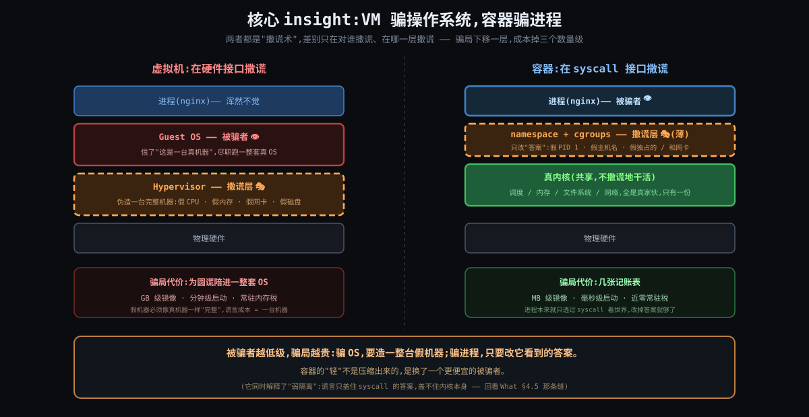
隔离的本质是撒谎术 —— 让住户以为"整个世界就我一个"。问题只在:对谁撒谎,在哪一层撒谎。
- VM 在硬件接口撒谎:伪造一台完整机器(假 CPU、假网卡、假磁盘),被骗者是 Guest OS。为了圆这个谎,你必须陪进一整套真 OS —— 假机器必须像真机器一样完整。谎言成本 = 一台机器(GB · 分钟 · 内存税)。
- 容器在 syscall 接口撒谎:进程本来就只透过系统调用看世界,那就只改"答案" —— 假 PID 1、假主机名、假独占的
/和网卡。被骗者是进程。谎言成本 = 几张记账表(MB · 毫秒 · 近零税)。
被骗者越低级,骗局越贵:骗 OS 要造整台假机器;骗进程只要改它看到的答案。容器的"轻"不是压缩出来的,是换了一个更便宜的被骗者。
一句话形式:用"骗进程"换"骗 OS" —— 同样的隔离体验,成本掉三个数量级。这枚 insight 整个就是对 C1 的回答:墙是第 2 环要的谎言,"便宜"是第 3 环逼的撒谎层次。它同时解释了弱隔离:谎言只盖住 syscall 的答案,盖不住内核本身 —— 上一节 §4.5 那条 /proc/meminfo 的缝,正是谎没撒全的地方。
同一枚 insight 的几何学表述(用户自己推出的):"把共享平面从 VM 级上抬到内核级。"
VM 世界,共享线画在硬件上 —— 线以上(整套 Guest OS + 应用)每户自备一份;容器世界把共享线上抬到内核 —— 线以下(内核)全共享,线以上(用户态)各自隔离。共享线抬得越高,重复建设越少 —— "轻"就是这么来的。 这也给出了一个看任何虚拟化技术的统一框架:先问它的共享线画在哪一层。
§3.2 Insight 二:环境是行李,不是地产
第四、五幕的病根,是"环境"被当成了地产 —— 长在机器上,搬不走,只能在每台机器上重新"装修"一遍(手工配置),装出来的还都不一样。
容器的第二刀:把环境从机器上整体剥下来,打进应用的行李箱。
- 应用 + 它的全部依赖(libs / 运行时 / 配置)封进一个不可变的镜像 —— 环境从"机器的属性"变成"应用的行李"(化解 C2 ★);
- 行李箱自带内容寻址的身份:
sha256:9f3a...—— 拉到的要么是分毫不差的那份字节,要么直接失败。2009 年用反编译器干的活,被一个哈希值替代了(化解 C3 的"字节无身份"); - 行李是标准化工件,机器能搬、能验、能数 —— 部署从"人执行的过程"变成"机器搬运的工件",人力从 O(N) 里解放(化解 C3 的"人力")。
一句话形式:用"把环境打包跟应用走"换"环境永远一致" —— 部署单位从厂房降到车间,且每个车间自带身份证。
§4 两枚 insight 怎么化解三条约束(回扣 + 通往机制)
| 约束 | 被哪枚 insight 化解 | 化解成什么形状(上一节已见) | 机制细节(后面钻) |
|---|---|---|---|
| C1 榨干硬件 | Insight 一(骗进程) | namespace 六扇窗 + cgroups 配额表 + 共享内核不带厂房 | clone(CLONE_NEW*) 怎么建视图;cgroup v2 怎么计账;为什么 syscall ABI 稳定到敢共享内核 |
| C2 ★ 环境随行 | Insight 二(行李) | 镜像 + overlayfs 叠出来的根 | 分层 / copy-up / whiteout 细节 |
| C3 去人化+验真 | Insight 二(行李) | 出生流水线(API 化)+ sha256 digest | dockerd/containerd/runc 解耦;层哈希怎么算、digest 怎么校验 |
读这张表的方法:每一行都是一次"约束 → 必然"的单向推导 —— 不是"Docker 选择了 namespace",而是"C1 之下,除了给进程造假视图,没有别的活路"。下一节(怎么工作)就按这张表逐行往机制里钻。
§5 伪约束:别把这些错怪到本质上
尸检还要排除几个"看起来像病根,其实不是"的嫌疑人 —— 它们写不出"不可再分性":
| 伪约束 | 为什么不成立 |
|---|---|
| "裸机性能不够" | 性能从来不是痛点 —— 裸机性能一直最好。痛的是隔离、复制、一致性,不是速度。 |
| "VM 的隔离不够强" | 恰恰相反,VM 隔离更强(容器反而更弱)。痛点是隔离的代价太重(违背 C1 第 3 环),不是不够强。 |
| "工程师不够细心 / 流程不够严" | 第五幕不是态度病,是结构病:没有机器可校验的事实,再细心的人在千台尺度也是 O(N) 错误率。用流程对抗结构性缺陷,是用人肉填系统的坑。 |
| "缺一个更好的配置管理工具"(Puppet / Chef 路线) | 它们把"配机器"自动化了,但环境仍是机器属性、靠"收敛过程"逼近期望状态 —— 治标。容器把问题反过来:环境跟应用走,机器退化成"任何一台都行"。(这条岔路和容器的对比,值得在对比环节专门打一架。) |
§6 呼应灵魂问题
你的灵魂问题三问,这一节补上了"为什么"这个维度:
| 三问 | 上一节(是什么) | 这一节(为什么) |
|---|---|---|
| ① 容器到底是什么? | 一个被圈起来的进程 | 为什么非圈不可:C1 第 1+2 环 —— 必须共享(经济账),共享默认互害 → 墙是必然,不是偏好 |
| ② 和 VM 的根本区别? | 谁拥有内核 | 为什么不能用 VM 的砌法:C1 第 3 环 —— 隔离太贵同样是浪费;骗 OS 太贵,骗进程才付得起(Insight 一) |
| ③ 内核里到底发生了什么? | 摆了位置(六窗/表/叠层) | 为什么是这三样:C1→namespace+cgroups+共享内核,C2★→镜像/overlayfs,C3→digest+流水线 —— §4 那张表就是每个机制的"存在许可证" |
累计闭环度:约 50%。已答:是什么、为什么必须存在、为什么是这个形状。未答(下一站"怎么工作"):clone/unshare/pivot_root 怎么一步步把墙砌出来、cgroups 怎么计账、overlay 怎么叠、veth 怎么通 —— 也就是"那一刻内核里到底发生了什么"的逐步机制。
尾声:2013,你看到 Docker 的那一刻
一个 2009 年在凌晨两点的机房里、用反编译器逐台核对版本的工程师,2013 年看到 Docker 时——
"非常兴奋,不亚于现在看到 LLM / Claude Code 等 AI 工具的出现。"
现在你可以精确说出这份兴奋的来源:三条压力、七桩事实,每一桩都疼过你,而它每一桩都给出了回答。 C1 → 墙,以及不带厂房的便宜隔离;C2 → 环境装进行李;C3 → 人退出发布链路、哈希替你对账。一个工具同时砍中你身上每一道旧伤 —— 这种事一个工程师一生遇不到几次。
(为什么偏偏是 2013?为什么是 Docker 而不是更早就存在的 LXC / Zones / jail?—— 这是"它怎么来的"那一节的主菜,先留个钩子。)
阶段 3:Docker 大致怎么工作
灵魂问题(贯穿全程): 容器到底是什么?它和虚拟机的根本区别在哪?当一个容器真正跑起来的那一刻,Linux 内核里到底发生了什么 —— namespace、cgroups、镜像分层各自扮演什么角色?
这一节的本分: 把上一节锻出来的三条压力(C1/C2★/C3),各自凝固成一件看得见摸得着的机器,然后看它们怎么协作。全篇按"墙与洞"的主旨组织(你在第一节锻的心法):§2 讲墙(六窗 + 三表),§3 讲地板与洞一(镜像/overlay 与存储),§4 讲洞二(网络),§5 讲屋外的指挥部(流水线),§6 用一次docker run把全部零件串成端到端。深度卡在机制级;数字级与源码级留给后面开膛的环节。
§0 从"为什么"走到"怎么工作":三件事 + 全篇地图
上一节把"为什么必须存在"压成了三条压力。这一节的全部内容,就是三条压力各自凝固成的三件机器:
§0.1 砌墙术 —— 从 C1 推出
因为 C1②(共享默认互害)+ C1③(隔离必须便宜) → 要解决"在同一个内核上,给每个进程一套'独占机器'的幻觉,且幻觉成本必须接近零" → 所以引入砌墙术:
- namespace(改"看见什么"):内核里每个进程的
task_struct带一组 namespace 指针 —— 把指针指向不同的 namespace 对象,进程就"住进了不同的房间"。墙的物理实体就是几个指针,所以幻觉成本 ≈ 0。 - cgroups(限"用多少"):一棵树,每个节点(目录)是一个户头;进程上了户口,它的每一笔资源消费都记在户头上,触顶就处理。
这就是你那句"把共享平面从 VM 级上抬到内核级"的施工版:共享线以下(内核)一份,共享线以上(视图与配额)按指针分户。
§0.2 叠行李术 —— 从 C2★ 推出
因为 C2★(环境必须跟应用走)+ C1③(行李里不准装厂房) → 要解决"环境整体带走、可共享、可秒启、还得轻" → 所以引入叠行李术:
- 不可变镜像层:环境被切成一摞只读层(一条 Dockerfile 指令 = 一层),层一旦造好永不修改 —— 像烧死的光盘 session(你的类比);
- overlay 联合挂载:运行时不解压,把只读层 + 一个空白可写层挂成容器的
/—— 毫秒完成,N 个容器共享同一摞底层。
§0.3 流水线 + 验真术 —— 从 C3 推出
因为 C3(发布去人化 + 机器可验真) → 要解决"从命令到容器,全程机器执行;每个工件,机器能证明它是谁" → 所以引入流水线 + 验真术:
- API 化运行时链:
docker CLI → dockerd → containerd → shim → runc,层层之间是 socket 上的 RPC —— 每一步都是 API 调用,没有一步是人肉; - 内容寻址 digest:每一层、每个镜像的身份 = 它内容的 sha256 —— 拉取时逐层验,对不上直接拒收。
§0 结论:三件事对照 + 全篇地图(墙与洞)
| 三件事 | 是什么 | 为什么存在 |
|---|---|---|
| 砌墙术 | namespace(六窗,改视图)+ cgroups(三表,限用量) | C1:共享必互害 → 隔离;且隔离必须便宜 → 改指针而非造假机器 |
| 叠行李术 | 不可变镜像层 + overlay 联合挂载 | C2★:环境随应用走;且行李不装厂房 → 轻 |
| 流水线+验真 | API 化运行时链 + sha256 内容寻址 | C3:人退出发布链路;工件身份机器可证 |
协作时序(一次 docker run 里):流水线指挥(③)→ 备行李(②)→ 砌墙(①)→ 住人。
全篇地图(按第一节心法"砌墙 + 凿洞"展开):
| 章 | 在心法里是什么 | 内容 |
|---|---|---|
| §2 墙 | namespace 六窗 + cgroups 表 | 六窗三刀、物理 vs 逻辑、三块表、OOM 行刑现场 |
| §3 地板 + 洞一(存储) | overlay 地板;volume 凿穿 mnt 墙 | 造 / 验 / 叠 / 写、光盘语义、方块模型、重铸、volume |
| §4 洞二(网络) | veth 凿穿 net 墙 | 孤岛八件家当、容器互访逐跳标层、进门 DNAT、出门 SNAT |
| §5 指挥部 | 屋外的流水线 | 角色接力、runc 三连招、shim、验真闭环 |
| §6 一次完整施工 | 全部零件串起来 | docker run 十步端到端 + 思想实验 |
§1 一张极简概览图
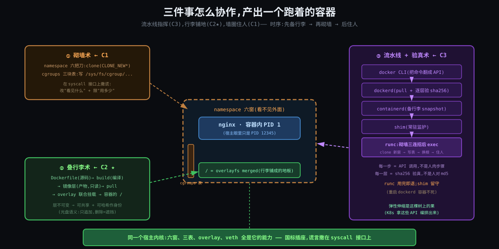
从这张图能读出五件事:
- 中央是成品:一个 nginx 进程,在六窗之内、三表之下、overlay 地板之上 —— 它在容器里是 PID 1,在宿主眼里只是 PID 12345。
- 左上的砌墙术只干两件事:改"看见什么"(namespace)、限"用多少"(cgroups)—— 全部发生在 syscall 接口上。
- 左下的叠行李术是一条生产线:Dockerfile(源码)→ build(编译)→ 层(产物)→ overlay(铺地板)。
- 右侧的流水线自上而下接力,真正动手砌墙的只有 runc,干完就撤;shim 留守 —— 所以重启 dockerd 容器不死。
- 底下那条绿带还是那个共享内核:六窗、三表、overlay、veth,全是它一家提供的能力 —— 谎言统一撒在 syscall 这个"国标插座"上。
§2 墙:namespace 六窗 + cgroups 三表
§2.0 点名册:六窗 · 三表 · 两洞(先认人,再看戏)
钻机制之前,把全部角色排队点名 —— 每人三件事:是什么、作用是什么、持哪条约束的出生证(它解决了 C 几的什么问题)。
六窗(namespace —— 管"看见什么";总出生证:C1② 共享默认互害 → 必须隔离视图):
| 窗 | 隔离什么 | 作用(容器里的效果) | 出生证:解决 C 几的什么问题 |
|---|---|---|---|
| pid | 进程编号空间 | 自己是 PID 1,看不见别家进程 | C1②:裸合租时 ps 互见、还能 kill 别家(幕一互害)→ 进程世界分户 |
| net | 整个网络栈(八件家当,§4.1) | 自己的网卡 / IP / 路由 / 端口 | C1②:都想监听 :80(幕一端口打架)→ 各自一套栈。洞二的凿点 |
| mnt | 挂载点视图 | 自己的 /(独立挂载树) | C1②:/usr/lib 只有一个位置(幕一依赖打架的视图侧)→ 文件世界分户。地板挂这扇窗后(§3),洞一也凿在这(§3.7) |
| uts | 主机名 / 域名 | 自己的 hostname | C1②:主机名是全局的,日志/服务自标识会串户 → 各挂各的门牌 |
| ipc | System V IPC / 消息队列 | 共享内存、信号量不串门 | C1②:IPC 的 key 是全局键空间,两家应用撞 key 互踩 → 对讲机分频道 |
| user | UID / GID 映射 | 容器内 root ↔ 宿主普通用户 | C1② 的安全面:容器里要 root 干活,但容器 root = 宿主 root 太危险 → 屋里是业主,楼里只是租客 |
三表(cgroups —— 管"用多少";总出生证:C1①+② 必须合租,但资源默认不设防 → 必须装表):
| 表 | 管什么 | 超额脾气 | 出生证:解决 C 几的什么问题 |
|---|---|---|---|
| cpu 表(电表) | CPU 时间片(cpu.max) | 限速 throttle(降级不杀) | C1②:跑批吃满 CPU,在线服务延迟 10ms→2s(幕一)→ 时间片配额 |
| memory 表(煤气表) | 物理内存 + page cache(memory.max) | 处决 OOM kill(Exited 137) | C1②:一家泄漏吃光 16G,OOM 随机杀人全楼陪葬(幕一)→ 硬顶 + 只死自己户头内(§2.4 行刑现场) |
| io 表(水表) | 磁盘带宽 / IOPS(io.max) | 限速 排队 | C1②:批任务拉满磁盘,邻居 IO 饿死(幕一)→ 龙头拧小 |
三表的共同使命:让"合租"从赌运气变成有合同 —— 没有表,没人敢高密度合租,C1①(榨干硬件)的经济账就落不了地。诚实备注:真实的 cgroup 控制器不止三个(还有
pids防 fork 炸弹、cpuset钉核等),三表是主力。
两洞(凿穿墙的受控通道 —— 墙解决"合租互害",洞解决"隔离过头"):
| 洞 | 凿穿哪扇窗 | 是什么 | 出生证:解决 C 几的什么问题 | 细讲 |
|---|---|---|---|---|
| 洞一 volume | mnt 窗 | bind mount:直通宿主目录的"竖井" | C2★ 的边界:行李管"环境随行",但有状态数据不属于环境、不能随屋生死 → 凿井持久化,顺带绕开 copy_up 税 | §3.7 |
| 洞二 veth(+bridge+NAT) | net 窗 | 一根虚拟网线 + 小区交换机 + 海关化妆台 | C1② 的反作用:墙必须砌,但砌死 = 服务做不了生意 → 受控连通;且每个洞 conntrack 有账(C3 的可审计精神) | §4 |
心法回扣:隔离是默认(墙),连通是例外(洞) —— 六扇窗里只有两扇被凿了标准的洞(net、mnt)。其余四扇没有"洞",只有"拆墙"选项(
--pid=host、--ipc=container:x这类 = 整扇窗直接拆掉共享)—— 洞与拆墙的区别:洞保留墙、再开受控通道;拆墙是放弃隔离。
§2.1 namespace 的三个 syscall(六扇窗,三种开法)
窗有六扇(pid / net / mnt / uts / ipc / user,职责见 What §4.1),但开窗的刀只有三把:
| syscall | 干什么 | 一句话场景 |
|---|---|---|
clone(CLONE_NEW*) | 出生即隔离:生孩子时直接给一组新窗 | runc 造容器首进程用的就是它 |
unshare() | 当场搬家:自己活着活着搬进新窗 | unshare --pid --fork bash 一行体验隔离 |
setns() | 串门:把自己挂到别人已有的窗上 | docker exec 的全部原理 —— 新进程 setns 到容器的六扇窗里,"进入"容器 |
docker exec值得单独咂摸:所谓"进入容器",不是穿过什么边界,只是新起一个进程、把它的六个 namespace 指针指向目标容器的那组对象 —— 串门,不是穿墙。
§2.2 物理 vs 逻辑:墙到底"是"什么
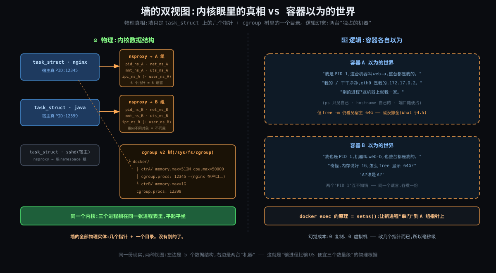
- 物理真相(左):内核里,nginx 和 java 只是进程表上平起平坐的两行;所谓"各在各的容器里",物理实体是 ——
task_struct上六个指针指向不同的 namespace 对象,加上 cgroup 树里一个目录的户籍。没有别的了。 - 逻辑幻觉(右):两个进程各自以为"我是 PID 1,我独占一台机器"。同一个谎言,各撒一份,互不知情。
- 这就是"骗进程比骗 OS 便宜三个数量级"的物理根据:幻觉的建造成本是改几个指针 —— 零复制、零虚拟硬件,所以毫秒级、近零税(C1③ 兑现)。
- 谎也有没撒全的地方:
/proc/meminfo、/proc/cpuinfo不归六窗管(What §4.5 那条缝)—— 双视图图里容器 A 的台词"free 仍看见 64G"就是这条缝。
§2.3 cgroups:接口即文件,记账即配额
三块表(cpu / memory / io,生活对照见 What 的"三块表"图)在机制层只有三个动作:
- 立户头:
mkdir /sys/fs/cgroup/<名字>—— 一个目录就是一个户头,接口即文件,没有任何专用 API; - 设表盘:往目录里的文件写数 ——
echo 536870912 > memory.max、echo "50000 100000" > cpu.max; - 上户口:
echo <PID> > cgroup.procs—— 从此这个进程(和它所有后代)的每一笔消费都记这个账上,fork 也跑不掉。
之后内核在资源分配路径上实时记账(charge):分配一页内存 → memory.current += 4KB;CPU 每个调度周期核销额度。触顶的处理两种脾气:CPU/IO 限速(降级),内存 OOM kill(处决) —— 因为内存超了无法"慢慢用"。
窗和表的分工再钉一次:窗管"看见什么"(视图),表管"用得了多少"(用量)—— 两套独立机器,互不通气。这正是"看见 64G 却死在 512M"的机制根源。
§2.4 三表的行刑现场:一次内存超限的死刑全过程
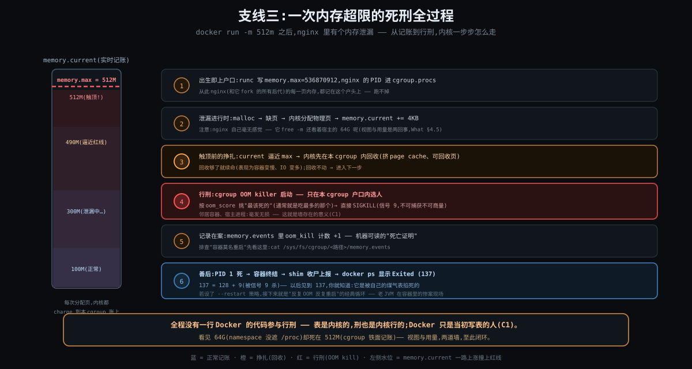
- 出生上户口(PID 进
cgroup.procs)→ 每页分配实时记账(memory.current)→ 逼近红线先回收(容器变慢)→ 回收不动 → cgroup OOM killer 只在本户口内选人,SIGKILL →memory.events的oom_kill计数 +1 → 容器Exited (137); - 137 = 128 + 9(被信号 9 杀)—— 以后见到 137,你就知道:它是被自己的煤气表掐死的;
- 邻居毫发无损 —— 这就是墙存在的意义(C1);
- 全程没有一行 Docker 代码参与行刑 —— 表是内核的,刑也是内核行的,Docker 只是当初写表的人;
- 与 What §4.5 合龙:看见 64G(namespace 没遮 /proc)却死在 512M(cgroup 铁面记账) —— 视图与用量,两道墙,至此闭环。
§2.5 墙的边界(诚实清单)
- 六窗 + 三表不是全部的墙:真实容器还有 capabilities(砍特权)、seccomp(限 syscall 白名单)、AppArmor/SELinux 这些安全墙 —— 机制同样是"在 syscall 接口上做规则",本节不展开,留给后面拿源码抠的环节;
/proc//sys的缝、共享内核的命门(内核漏洞穿墙)—— What §2/§4.5 已立此存照。
§3 地板与洞一(存储):从 Dockerfile 到容器的 /,再到持久化
心法定位:overlay 铺出来的是地板(容器站的根);在地板上写字走 copy-up;真要把数据带出这间屋,得靠洞一 volume(凿穿 mnt 墙)。本章按"造 → 验 → 叠 → 写 → 存储真相 → 洞一"走完整条线。
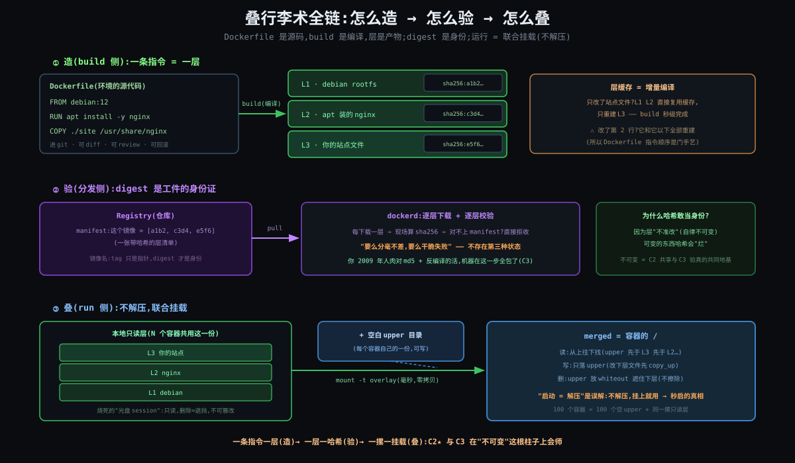
§3.1 造:Dockerfile 是环境的源代码
- 一条指令 = 一层:
FROM debian给底片,RUN apt install nginx的全部文件改动打成第二层,COPY ./site第三层 —— 每层物理上就是"一个目录 diff 的打包"。 - Dockerfile = 源码,
docker build= 编译器,镜像 = 编译产物 —— 环境从此进 git、可 diff、可 review、可回滚、可 CI。这就是你说的"部署 code 化"(行话:基础设施即代码)的机制载体。 - 层缓存 = 增量编译:层不可变 + 按内容寻址 → 没变的指令直接复用缓存层。只改了站点文件?L1/L2 秒过,只重建 L3。
- 代价是顺序敏感 —— 根源在"缓存键是条链"(追问凝固):判断某层能否用缓存,看的是 (父层 + 本条指令文本 + 所拷文件的内容哈希) 三件套。关键在"父层":第 N 层的定义是"在第 N-1 层的状态之上执行指令的 diff" —— 父层一变,哪怕你这条指令一字未改,它也是在另一个世界里执行的,结果不可信,必须重跑。所以失效只向下连坐(改第 2 行,第 2 行及以下全重建;第 1 行无恙)。和你已有的两个模型同构:git 链(改早期 commit,后代 SHA 全变)、多次刻录光盘(重烧第 2 个 session,其后每个 session 都是基于旧画面的增量,全部作废)。
实战对照(经典坏排法 vs 好排法):
# ❌ 坏排法:天天改的源码压在依赖安装上面
FROM node:20
COPY . /app # 源码天天变 → 这层天天变
RUN npm install # 被连坐:每次 build 全量重装依赖,5 分钟
# ✅ 好排法:把"变得勤的"挪到链条末端
FROM node:20
COPY package.json package-lock.json /app/ # 依赖清单,几周才变一次
RUN npm install # 清单没变 → 永远 CACHED
COPY . /app # 天天变的源码放最后 → 只重建这一层,秒级
```
"变得少的写上面,变得勤的写下面" = **把高频变更挪到依赖链末端,缩小连坐的爆炸半径**。
### §3.2 验:digest 是工件的身份证
- registry 里每个镜像有一张 **manifest**:本质是"带哈希的层清单"(`[sha256:a1b2…, sha256:c3d4…, …]`);
- `docker pull` 逐层下载,**每层落地现场算 sha256 对清单 —— 对不上直接拒收**。"要么分毫不差,要么干脆失败",不存在第三种状态;
- **你 2009 年的人肉 md5 + 反编译,就在这一步被机器整体替代**(C3 兑现);
- 镜像名和 tag(`nginx:1.25`)只是**可挪动的指针**,digest 才是身份 —— 生产环境钉版本钉的是 `nginx@sha256:…`。
### §3.3 叠:不解压,挂上就用
- containerd 的 snapshotter 把只读层原地组好,**新建一个空 upper** → `mount -t overlay` → merged 即容器的 `/`。**启动 ≠ 解压**,是挂载 —— 毫秒级,这是"秒启"的真相;
- 100 个容器 = 100 个空 upper + **同一摞只读层**(共享不复制)。
### §3.4 写:三次写操作,穿过 overlay 的三条路

- **写新文件**(access.log):直落 upper,最简单;
- **改旧文件**(nginx.conf,躺在只读层 L2):内核先把**整个文件** copy_up 到 upper,再在副本上改 —— L2 的原版一字未动;
- **删文件**(default.html):upper 放一个 **whiteout**(字符设备),merged 里它"消失"了 —— 旧字节还在 L2,**删除是遮挡,不是擦除**(光盘语义的机制现场);
- 共享同镜像的另一容器:原版世界完好无损(它有自己的 upper);`docker rm` 本容器:upper 蒸发,三个改动全部消失;
- **埋一个坑**:copy_up 是**整文件**复制 —— 改 1GB 文件的 1 个字节也得先抄 1GB。这个坑的解药就是本章末尾的**洞一(§3.7 volume)**。
### §3.5 光盘语义:"不能改" vs "不准改"(你的类比,焊在这)
镜像层的行为**就是多次刻录光盘**:旧 session 烧死改不了 → 改 = 在新 session 重刻一份盖住;删 = 新目录表不再指它(旧字节还在盘上)。对应:改 = copy-up,删 = whiteout,**删除是遮挡,不是擦除**。
但有一处必须拧:光盘的只读是**物理强制**,镜像层躺在完全可写的硬盘上 —— 它的只读是**软件自律,是故意选的**。为什么故意?
> **因为"永不改变",才敢被共享、才配有身份。**
> 层不可变 → N 个容器共用同一摞底层不怕互相污染 → **C2★ 的共享成立**;
> 层不可变 → sha256 一次算出永久有效 → **C3 的哈希身份成立**。
> **不可变性是同时撑起"共享"和"验真"的那根承重柱 —— C2★ 和 C3 在这里会师。**
谱系备注:这套"只追加 + 不可变历史 + 合并视图"是 CS 的大母题 —— 磁带/CD-R(物理逼的)、**git**(自选的:不可变对象+内容寻址,与镜像层同构)、LSM 树、event sourcing。Docker 早期的自我介绍就是:"**镜像 = 文件系统的 git**"。
### §3.6 追问凝固:overlayfs 把文件存在哪?路径怎么表示?怎么找到一个文件?
**第一句就是答案的核心:overlayfs 自己不存储任何一个字节。** 它不是 ext4 那样的"磁盘文件系统",而是一层**叠加视图**(union / stacking fs):
- **存储**:每一层(upper、各 lower)就是宿主真实文件系统(ext4 / xfs)上**一棵普通目录树** —— `ls /var/lib/docker/overlay2/<id>/diff/` 看到的全是普通文件。没有专用磁盘格式、没有自己的块管理、没有自己的磁盘 inode 表。**真正管字节的是下面的 ext4**;overlayfs 只在"查路径"这一刻做合成。(顺带分清两个形态:**传输形态**是 tar 包 —— sha256 digest 算的是它;**落盘形态**是解开后的普通目录树。)
- **路径表示**:merged 里的 `/etc/nginx/nginx.conf`,对应各层根下的**同位投影** —— `upper/etc/nginx/nginx.conf`、`L3/etc/...`、`L2/etc/...`。每层只是一棵**部分树**(只含本层碰过的文件),同一相对路径在层间"重影"。
- **查找(没有全局索引表)**:按层**有序探测**,自上而下(upper → L3 → L2 → L1):
1. **普通文件:先见即得** —— 在哪层先找到,就用哪层的真实文件;上层同名遮住下层;
2. **遇 whiteout 立即停**,返回"不存在"(下层有也当没有);目录有自己的遮挡版 —— **opaque 标记**(`trusted.overlay.opaque=y`,目录级"不再向下合并");
3. **目录是例外:合并** —— `ls /etc` = 各层 `/etc` 目录项的**并集**(去重、减 whiteout);
4. **首查之后走缓存**:解析结果进内核 VFS 的 **dentry cache**,后续访问纳秒级;**文件一旦打开,读写直达底层真实文件**(写经 copy_up 改道 upper 后同理)。所以 overlay 的"层数开销"主要付在**首次查找**与**目录合并**上,不在稳态读写。

> 一句话收口:**overlayfs 是"查找时合成视图"的薄壳 —— 存储交给底层 fs,索引交给目录结构 + dcache,自己只回答一个问题:"这个路径,哪一层说了算?"**
#### §3.6.1 追问再凝固:既然 overlay 不存数据,那"每一层"到底是什么?
"不存数据"的**主语是 overlayfs 这个机制**(投影仪),不是"层" —— 层里全是真数据:
1. **物理上**:每一层 = ext4 上一棵**普通目录树**(`/var/lib/docker/overlay2/<id>/diff/`),真文件、真字节、真 inode,`sudo ls` / `cat` 直接可看,不需要 Docker 在场;
2. **语义上**:每一层 = 一次状态变化的**文件级全量 diff**,装三种东西 —— 本层**新增**的文件(全量)、本层**改过**的文件(**完整新版**,不是 git 那种行级补丁)、**删除墓碑**(whiteout)。粒度是**文件级**:改 1GB 文件的 1 个字节,层里躺着完整的 1GB 新版 —— 这是 copy_up"整文件复制"的存储侧写;
3. **overlayfs 手里只有**:一张挂载参数表(谁 lower 谁 upper)+ 一套查找规则。它不出现在"存"的链条(层目录 → ext4 → 磁盘块)上,只出现在"读"的链条上当导购。
**类比焊死**(接胶片):胶片上真有墨 —— 画面存在胶片上;投影仪只负责叠起来打上幕布。**"投影仪不存画面" ≠ "胶片是空的"。**
**可手验的铁证**:`umount` 掉 overlay(搬走投影仪)→ upper 和各 lower 里的文件**一个字节不少,照样 cat**。挂载 = 开始合成视图,卸载 = 不再合成 —— 存储自始至终是 ext4 的事,与 overlay 的生死无关。
#### §3.6.2 方块模型(读者原创 · 修正定稿)
把整个 overlay 想成一张**网格**:**列 = 文件路径,行 = 层**(自上而下:upper → L3 → L2 → L1)。每层只在"自己碰过的文件"那一列放方块,**其余全是空格**(部分树 —— 层的"便宜"便宜在空格上)。方块三种:
- **新增**(绿):这一列只此一块 —— 但注意,新增可以发生在**任何一层**(`nginx` 对 L2 来说也是"新增"),不只最上层;
- **修改**(橙):**完整新版**,底下压着**完整旧版**(文件级全量,不是行级补丁 —— copy_up 的存储侧写);
- **删除**(红):墓碑方块 —— 它也参与命中,是"**否定命中**":探到即停,报"不存在",哪怕底下还压着旧文件。
**查找一条规则统一全部情况**:从最上行往下探,**这一列碰到的第一个方块说了算** —— 绿/橙给文件,红说"没有"。"新增 / 修改 / 老文件"不是三种查找,只是"第一个方块恰好在第几行"的差别;首查结果一律进 dentry cache。唯一例外:**目录**不走先见即得,走逐层**合并**(并集 − 红方块)。

#### §3.6.3 追问凝固:改了最底层的方块,上面各层要逐层补修改版吗?
**不用 —— 而且答案分两个世界,两个世界都不是"逐层补":**
**世界一(运行时,容器内改 L1 的文件):只放一块,直入 upper。**
- copy_up 的目的地**永远是 upper**:整张网格里可写的行只有这一行,L2/L3 与 L1 同样冻结;
- 改后这一列 = `upper(新版) → 空 → 空 → L1(旧版被遮)` —— **空格不挡探测**,一块顶层方块足以遮住任意深的底层方块;
- **必须**如此的原因:中间层是共享的(C2★),L2 可能被 100 个容器引用 —— 修改若需"补"进中间层,共享即死。一切修改被押送到你**私有**的那一行;
- 精细处:copy_up 的**源**是"当前探测命中的最上块"(若 L3 在构建时已覆盖过该文件,运行时抄的是 L3 版,不是 L1 版)。
**世界二(构建时,想真正改掉 L1 本身,如基础镜像换底):层不准改,只能重铸。**
1. 新内容 → 新 sha256 → **身份全新的 L1′**(不是"L1 的修改版");
2. **连坐**:L2 的定义是"在 L1 状态之上的 diff",父层换人 → L2′、L3′ 整列向上全部重铸 —— **这就是 §3.1 的缓存连坐链,在存储侧的同一条定律**;
3. 旧链 L1/L2/L3 不销毁(别的镜像可能还引用着),新镜像指向新链。
**统一律:层从不被修改,只被遮盖(运行时)或被替换(构建时)。** "不准改"是绝对的 —— 任何"修改"都被翻译成"在别处放一个新东西"。正因为没有方块会原地变化,共享才永远安全(C2★)、digest 才永远不烂(C3)—— 不可变性第四次撑场。
世界二的全景照(换底 → 重铸 → 连坐 → 新清单,旧链原样存活):

### §3.7 洞一:volume —— 凿穿 mnt 墙的持久化
地板(overlay)的天性是**随屋生死**:`docker rm` → upper 蒸发,写过的全没;高频写大文件还要交 copy_up 的整文件税(§3.4 那个 1GB 坑)。**有状态的数据需要一个洞** —— 这就是心法里的**洞一**:
- **volume 的机制本质 = bind mount**:把宿主的一个真实目录(`/var/lib/docker/volumes/<名>/_data`),直接挂进容器 mnt 视图的某个挂载点(如 `/var/lib/mysql`)—— **绕过 overlay,不走 copy_up,读写直达宿主 ext4**;
- 在方块网格里,volume 像在某一列上**凿穿了所有层的一口竖井**:这条路径不再参与"按层探测",直通宿主;
- **生死独立**:容器删除,竖井下的数据原地不动;新容器挂上同一个卷,数据立刻回来 —— What §4.4 那句口诀的机制版:**无状态交给地板(随屋生死),有状态走洞一(独立于屋存在)**;
- 数据库类负载(MySQL/ES 的数据目录)**必须**走洞一:既为持久,也为绕开 copy_up 税。
### §3.8 部署的三级跳(本章收口)
| 时代 | 部署是什么 | 管理语义 |
|------|-----------|---------|
| 人肉时代(2009) | 一串**人执行的步骤** | wiki + md5 + 反编译 + 凌晨 2:00 |
| Puppet/Chef 时代 | 一段**收敛脚本** | 半 code 化,环境仍长在机器上 |
| Docker 时代 | 一个**可版本化工件**(Dockerfile→镜像→digest) | 与代码同一套语义:commit / diff / review / rollback |
效率跃迁的机制本质:**部署从"运维活动"变成了"软件工程对象"** —— 能 review 才能协作,能 diff 才能审计,能回滚才敢快发。
---
## §4 洞二(网络):从孤岛到做生意
> 心法定位:net 墙把容器关成孤岛;**洞二 = veth + bridge + netfilter** 这套受控通道。本章四步走:先看孤岛多孤(§4.1),再看岛与岛怎么互访(§4.2,你的 ES + Spring Boot 例子,逐跳标层),最后看生意怎么做 —— 包怎么进(§4.3)、怎么出(§4.4)。
### §4.1 孤岛的八件家当
net ns 不是"几条规则被隔离了",是**整个网络协议栈从头到脚各来一套**:
①设备清单(eth0 + 自己的 lo) ②IP 地址 ③**整套路由表**(含策略路由) ④**全套 iptables/nftables 表链 + 自己的 conntrack 连接跟踪表** ⑤端口绑定空间(容器 `:8080` ≠ 宿主 `:8080`) ⑥ARP / 邻居表 ⑦自己的 `127.0.0.1`(容器内 localhost 只通自己) ⑧网络类 sysctl(`net.*` 一族)。连 socket 列表都是自己的(容器里 `ss` 看不见宿主的连接)。**新生的 net ns 里只有一个没上电的 lo —— 名副其实的孤岛。**

"几乎断开"是**出厂设置**,不是缺陷:断开默认,连通例外。接回大陆靠三件套 —— **veth(网线)+ bridge(交换机)+ netfilter(海关化妆台:DNAT / SNAT + conntrack 账本)**。
### §4.2 小区内互访:Spring Boot 调 Elasticsearch,逐跳标层
**先把 172 网段说清:** `172.17.0.0/16` 是 Docker 给"岛屿群"发的**内部私网** —— 每个容器领一个内部 IP(es 是 `172.17.0.3`,springboot 是 `172.17.0.2`),`docker0`(`172.17.0.1`)是这个小区的**虚拟交换机兼网关**。这些地址**只在宿主这个小区内有意义**,外面世界既看不见也路由不到(所以出门才要化妆,见 §4.4)。
场景:Spring Boot 调 `http://172.17.0.3:9200` 查 ES。逐跳走,**每跳标清"在哪一层、看什么地址"**:
| 跳 | 发生什么 | 哪一层 | 看什么 |
|----|---------|--------|--------|
| 1 | Spring Boot `connect 172.17.0.3:9200`,发 HTTP 请求 | L7 / L4 | 目标 IP + 端口 |
| 2 | **岛上自己的路由表**:`172.17.0.0/16 dev eth0` —— 同网段,**直连路由,不走网关** | L3 | 目的 IP 在不在本网段 |
| 3 | 查**岛上自己的 ARP 表**:`172.17.0.3` 的 MAC?没有 → ARP 广播(经网桥泛洪全小区),ES 应答,缓存 | L2/L3 之间 | IP → MAC |
| 4 | 封帧(dst MAC = ES 的 eth0),从 eth0 发出 → veth 管 → 宿主端 | L2 | MAC |
| 5 | **docker0 是二层网桥**:查 FDB 表(MAC → 端口),把帧从 ES 那根 veth 的口转出 —— **只看 MAC,不看 IP、不改包、不过 NAT** | **L2** | MAC |
| 6 | ES 的 veth → ES.eth0 收帧、解封 | L2 → L3 | dst IP 是我 |
| 7 | ES 岛上自己的协议栈:路由(本机投递)→ iptables(默认放行)→ socket 查找 | L3 / L4 | IP → 端口 |
| 8 | `:9200` 有人听 → ES 进程收到请求;回程同路反向 | L4 / L7 | 端口 |

**这一程的本质,一句话:**
> **同网段容器互访是纯二层故事 —— IP 只用来"认门牌"(选路由、做 ARP),真正赶路靠 MAC;docker0 就是一台虚拟交换机。** 三层的网关(172.17.0.1)和 NAT,全程坐在板凳上 —— 它们只在"出小区"时才上场。
两个实用注脚:① 默认 docker0 网络**没有名字解析**,只能用 IP;**自定义 bridge 网络**(`docker network create`)自带内置 DNS,Spring Boot 直接 `http://es:9200` 按容器名互访 —— 生产里都用后者;② 容器互访**不过 NAT** 也意味着:ES 看到的来访者就是 `172.17.0.2` 真身 —— 小区内不需要化妆。
### §4.3 进门:DNAT 引渡 + 账本回程
外部客户端连的是**宿主** `192.168.1.10:8080`,服务在岛上 —— 包怎么"被引渡"进岛:

- `-p 8080:8080` 的本质 = 在宿主 nat 表的 DOCKER 链写一条**引渡令**(DNAT):打到宿主 `:8080` 的包,目的地改写为 `172.17.0.2:8080` —— **只改目的,不动来源**,所以服务看到的 src 是真实客户端 IP;
- 改写发生在 PREROUTING → 宿主路由发现"目的地已不是我" → 走**转发**(`ip_forward=1`,Docker 设的)→ FORWARD 链放行 → docker0 → veth 进岛 → **岛上自己的**路由 / iptables / socket 查找 → 服务收到 SYN;
- **回程不靠规则,靠账本**:conntrack 在第一个包时记下这笔交易;回包途经宿主时**自动反向还原**(src `172.17.0.2:8080 → 192.168.1.10:8080`),不需要任何显式规则。客户端自始至终只认识宿主,容器隐身;
- 口诀:**第一个包走规则,后续包走账本。** `docker ps` 的 PORTS 列就是引渡令的台账。
### §4.4 出门:MASQUERADE 化妆 + 账本回程
岛上的服务主动访问外部 API:

- 岛上路由 `default via 172.17.0.1` → 钻管出岛 → 宿主路由定向外网 → POSTROUTING 的 **MASQUERADE 改源**(`172.17.0.2:39000 → 192.168.1.10:39001`)→ 出宿主 eth0;回包到宿主,conntrack 对账自动还原,送回岛上;
- **为什么出门必须化妆?不是为了隐藏** —— 是因为 `172.17.0.2` 是私网地址,公网世界没有任何路由器知道怎么回信给它:**去程也许能到,回程必然迷路**。SNAT 的本质是给回程一个"找得到的收件地址";
- 对照 §4.2:容器互访**不化妆** —— 同网段二层直达,天生找得到回路,NAT 全程缺席。
### §4.5 对称律 + 一行彩蛋
**对称律(洞二收口):进门改目的(DNAT),出门改源(SNAT);conntrack 把一来一回配成对、自动还原 —— 一切改写只为一件事:让包找得到回家的路。** 岛上的服务全程素颜,以为自己用真身在和世界通信;化妆术全部发生在宿主的 netfilter 里 —— 这正是"墙上凿洞,且每个洞有账可查"(C1 的洞 + C3 的账)的网络版。
一行彩蛋:`--network host` = 不开新 net ns,直接住进宿主的栈 —— 零转发开销、零化妆,但八件家当全没了,端口直接回到"裸机合租"时代(幕一)。隔离与便利的取舍,在这里看得最清楚。
### §4.6 答卷凝固:docker0 的两个角色、四张表各答一问、最小改写律
**(1)docker0 一人分饰两角 —— 最容易错位的地方:**
- **L2 角色:交换机。** 维护 FDB 表(**MAC → 端口**):看帧的**源 MAC** 学习、查**目的 MAC** 转发,查不到就泛洪。这个角色**从头到尾不认识 IP**;
- **L3 角色:宿主的一块虚拟网卡 + 小区网关。** 它有 IP(172.17.0.1),容器们的默认路由指向它;"容器 IP → MAC"的对应记在**宿主这个端点的 ARP 表**里(给 docker0 配 IP 时,`172.17.0.0/16 dev docker0` 这条直连路由也随之自动长出)。
> "网桥知道每个容器的 IP"是常见误述:知道 IP→MAC 的是宿主 ARP 表(L3 角色);把帧送到正确口的是 FDB(L2 角色)—— 两件事,两张表。
**(2)容器出门的真实次序(修正"ARP 查不到才给网关"):**
1. **路由表先行**(L3):目的地不在 `172.17.0.0/16` → 命中 `default via 172.17.0.1` → 下一跳 = 网关。("查不到就走默认"是**路由表**的行为,不是 ARP 的);
2. **ARP 只翻译下一跳**:ARP 的对象是 **172.17.0.1(网关)**,不是最终目标 —— 容器从不 ARP 网段外的地址。口诀:**路由定下一跳,ARP 翻译下一跳**;
3. 帧(dst MAC = 网关 MAC,dst IP = 最终目标)→ veth → docker0:L2 角色发现目的 MAC 是自己 L3 角色的 → **上交宿主协议栈**(网桥不路由);
4. **宿主路由表**选路(出 eth0)→ FORWARD 放行 → **POSTROUTING MASQUERADE 改源** → 出门;conntrack 记账,回程自动还原。
**路由与 NAT 是分工,不是替代:路由表决定"包走哪条路",NAT 决定"包上写谁的名字"。**
**(3)四张表,各答一问:**
| 表 | 在哪 | 层 | 回答的问题 | 怎么维护 |
|----|------|----|-----------|---------|
| **路由表** | 每个 netns 一张 | L3 | "下一跳交给谁、从哪个口出?" | 配 IP 自动长直连路由;默认路由由 Docker 配置 |
| **ARP / 邻居表** | 每个端点(容器、宿主接口) | L2/L3 之间 | "下一跳 IP 的 MAC 是多少?" | ARP 请求/应答 + 缓存老化 |
| **FDB(MAC 表)** | 网桥肚子里 | L2 | "这个 MAC 在我哪个口?" | 看源 MAC 学习 + 老化;查不到泛洪 |
| **NAT 规则 + conntrack** | 宿主 netfilter | L3/L4 改写 | "包上的名字要不要改?回程怎么还原?" | 规则由 `-p`/MASQUERADE 写;账本内核自动记 |
一次发包的完整分工:**路由表选路 → ARP 翻译下一跳门牌 → FDB 在走廊里送到门口 → 必要时 NAT 改名(只为让回程成立)。**
**(4)最小改写律(NAT"透明 vs 隐身"探针的正式答案):**
> **NAT 只改"会让回程断掉"的那一个字段,其余一律不动。**
- **进门**:断的是**去程的目的**(服务不在宿主地址上)→ 改 dst;客户端的 src 本来就可回 → 不动 → 服务看到真实客户端 = **"透明"**;
- **出门**:断的是**回程的源**(172 是岛内私网,公网没人路由得回)→ 改 src;API 的 dst 本来就可达 → 不动 → API 只见宿主 = **"隐身"**。
**"透明 / 隐身"不是两套设计,是"最小改写"同一条定律的两个副产品。**
**(5)两句收口口诀(读者总结,判卷通过 + 精确化):**
- **口诀一:IP 管"下一跳是谁"(决策),MAC 管"这一跳怎么走"(执行)。** IP 身兼两职:端到端身份(**目的 IP 全程不变**,除非 NAT 动它)+ 逐跳决策依据(每跳查路由表);MAC 是单链路执行者 —— **每一跳换一次**(帧在每个三层设备处拆掉重封)。对偶:**IP 是终点站名,MAC 是接力棒;ARP 是两者间的翻译官**(路由给下一跳的 IP,ARP 翻成下一跳的 MAC)。
- **口诀二:路由住在协议栈里,协议栈住在 netns 里。** 路由表的分布:宿主一张、每个容器各一张(八件家当第③件);网桥本体纯二层、不路由 —— docker0 的 L3 面(172.17.0.1)是**宿主协议栈伸进小区的一只手**:网关 IP 挂在它身上,做决策的是宿主的栈。合成一句:**决策(路由)永远发生在某个协议栈里;网桥只是走廊,负责把帧递到正确的门口。**
---
## §5 屋外的指挥部:流水线与验真

### §5.1 角色与接口
接力链:`docker CLI →(REST · docker.sock)→ dockerd →(gRPC · containerd.sock)→ containerd → shim →(fork+exec)→ runc`。两个机制级细节:
- containerd 交给 runc 的是一个 **OCI bundle**:`config.json`(施工图:开哪些窗、表设多少、根在哪、跑什么命令)+ `rootfs`(行李铺好的地板)。**runc 就是 OCI 运行时规范的参考实现** —— "施工图的格式"是行业标准,谁都能照图施工(这句话是后面"它怎么来的"一站的大伏笔);
- 链上每个环节都是**无状态可替换**的零件 —— 这正是 C3"机器接管"的架构形态:机器零件才能被编排、被替换、被规模化。
### §5.2 runc:砌墙三连招,干完就走
1. **开窗**:`clone(CLONE_NEWPID|NEWNS|NEWNET|NEWUTS|NEWIPC)` —— 孩子出生即在六扇新窗内;
2. **装表**:写 cgroup 文件(`memory.max` 等),把孩子 PID 写进 `cgroup.procs`;
3. **换根**:在新 mnt 窗里 `pivot_root` 到 merged —— 行李正式成为孩子眼中的 `/`;
4. **住人**:`exec` 真正的应用 —— 进程自我替换,从此墙内跑的就是你的服务;runc **exit,撤场**。
> 三连招的顺序有讲究:**换根必须发生在新 mnt 窗内**(否则会把宿主的挂载表搞乱);**exec 必须最后**(它是不归路 —— 自我替换后 runc 就不存在了)。
### §5.3 shim:为什么需要一个"楼管"
runc 撤了,容器进程总得有人管。shim 常驻,干三件事:**收养**容器进程(所以升级/重启 dockerd,容器不死)、**收尸**(回收僵尸进程)、**持灯**(拿着容器的 stdio,`docker logs` 才有东西可读)。
### §5.4 验真闭环 + 一句泼冷水
- 验真不只在 pull:运行哪个镜像、容器是谁、退出码多少 —— 全链路是**机器可读的事实**(对照 2009:全链路是人的记忆和眼睛);
- 泼冷水:**"弹性伸缩"不在这条流水线里。** Docker 提供的是单机的确定性原语(API 起、API 停、可验真的工件);**弹性是上层编排系统(Kubernetes)拿这些原语编出来的果实** —— 树在这里,果子在别处结。
---
## §6 一次完整施工:`docker run -d -p 80:80 -m 512m nginx` 的十步
十步全图见 §5 开头的流水线图,正文只补三个"为什么是这个顺序"的观察:
1. **验真发生在最前**(第 2 步 pull 校验)—— 不合格的原料根本进不了工地;
2. **备行李(第 4 步)先于砌墙(第 7~8 步)** —— snapshot 只是"备料",真正把行李变成 `/`(pivot_root)必须等墙(新 mnt 窗)立起来之后,在墙内完成;
3. **住人永远是最后一步**(第 10 步 exec)—— 墙砌完、表装好、地板铺平,人才进场;进场即接管(成为 PID 1),施工队(runc)消失。
从敲回车到 nginx 可服务:**镜像已在本地时,毫秒~秒级**。对照 2009:几十台 × 4 小时 × 多人。这不是优化,是**换了物种**。
### §6.1 思想实验:拆掉哪一步,塌得最狠?(对话凝固)
> 十步里只许拿掉一步,拿掉后系统实质性塌回 2009 —— 拿哪步?
**拆法 A(读者选的):拆第 4 步(备行李 / overlay)= 摘心脏。** 级联塌陷:没有联合挂载 → 每容器整包解压(分钟级、磁盘 ×N、共享归零)→ "轻"死,塌回幕三;不可变工件退化为可变目录 → 环境重新长回机器,塌回幕四;工件可变 → digest 失去对象(可变的东西哈希会烂)→ 验真跟着死 → 部署重新变"过程" → 人回来了,幕五。**路径长,但每环必然 —— 摘心脏,全身停摆。**
**拆法 B(出题人藏的):拆第 2 步(pull 验真)= 挖眼睛。** 一切照常飞快,但没有任何机器能证明"这台机器跑的是什么"。这不是回到 2009 —— **比 2009 更糟**:2009 至少还有人肉 md5 当最后防线;拆掉验真的全自动流水线,是**以工业效率散播未验真的字节**。瞎了的快,比慢可怕。
**合龙**:A 杀 C2★(心脏 → 世界重新变重、变漂移),B 杀 C3(眼睛 → 世界依旧快,但变瞎),殊途同归于"人肉回归"。这是 C2★ 与 C3 第三次成对出现(§3.5 承重梁 / 验真会师 / 心与眼)—— **打包与验真,从来是一对。**
---
## §7 手搓迷你容器:30 行 shell 看清全部骨架
不依赖 Docker,只用内核的原生能力(每行都能指着说对应哪件事 / 哪条 C):
#!/bin/bash
===== 叠行李术(C2★):备地板 =====
mkdir -p /mc/{upper,work,merged}
mount -t overlay overlay \
-o lowerdir=/mc/busybox-rootfs,upperdir=/mc/upper,workdir=/mc/work \
/mc/merged # 不解压,联合挂载 → 三件事②
===== 砌墙术之装表(C1):cgroups =====
mkdir /sys/fs/cgroup/mc # 立户头(一个目录 = 一个户头)
echo 536870912 > /sys/fs/cgroup/mc/memory.max # 煤气表:512M 硬顶
echo "50000 100000" > /sys/fs/cgroup/mc/cpu.max # 电表:半颗 CPU
===== 砌墙术之开窗(C1):namespace =====
unshare --pid --net --mount --uts --ipc --fork bash -c '
hostname mc-demo # uts 窗:自己的门牌
echo "我眼里的自己:PID $$" # 新 pid 窗内:$$ = 1
# ===== 砌墙术之换根(C2★ 行李落地)=====
cd /mc/merged
pivot_root . old_root # / 从此 = merged
umount -l /old_root # 关掉看向旧世界的最后一扇门
mount -t proc proc /proc # 让 ps 在新窗里正常工作
# ===== 住人 =====
exec /bin/sh # "容器"开张(替换自身,不归路)
'
收尾:把 unshare 的子进程 PID 写入 /sys/fs/cgroup/mc/cgroup.procs 即完成上户口
阶段 4:Docker 是怎么来的
灵魂问题(贯穿全程): 容器到底是什么?它和虚拟机的根本区别在哪?当一个容器真正跑起来的那一刻,Linux 内核里到底发生了什么 —— namespace、cgroups、镜像分层各自扮演什么角色?
这一节的本分: 解一桩悬案 —— 零件早就散落一地(chroot 1979 / namespace 2002 起 / cgroups 2008 / LXC 2008),为什么要等到 2013 年才有 Docker? 以及它的下半场:引爆世界的东西,为什么几年内被拆解成 runc / containerd / OCI,连 Kubernetes 都把它"移除"了?骨架是技术接力(B),血肉是人物剧情(A);资料混合档 —— 四大转折点(PyCon / runC 捐出 / containerd 剥离 / dockershim 之死)全部一手出处,背景节点用可靠综述,查不到的明说查不到(见文末两份清单)。
§0 从"怎么工作"走到"怎么来的":三件事记住
机制都钉死了,历史只需要回答三个问题。这三个答案,就是本站的三件事:
§0.1 零件先于产品十年 —— 墙从来不是瓶颈
因为 C1 的化解(墙)是内核层的公共工程 → 它由操作系统社区按自己的节奏砌了三十年:chroot(1979)→ jail(2000)→ Zones(2004)→ Linux namespace 逐扇进窗(2002–2013)→ cgroups(2008 并入主线)→ LXC(2008,墙首次打包可用)。到 2008 年,"造一个被圈起来的进程"在 Linux 上已经人人可为 —— 可它始终是少数人的玩具。结论:2013 之谜的答案不在隔离技术里。
§0.2 引爆靠的是行李,不是墙 —— 历史为你的 C2★ 作证
因为 C2★(环境随行)+ C3(可验真可分发)的痛在 2010 年代初到达社会性顶点(云 + 千台集群 + 微服务)→ 要解决的早已不是"怎么隔离"而是"怎么打包、怎么流通" → 所以 Docker 的全部新发明是行李:镜像分层 + Dockerfile + registry + 一条命令的体验。铁证:Docker v0.1 的"墙"就是 LXC 的包装纸(直到 2014 年 0.9 版才换成自家的 libcontainer)—— 它借来了墙,只发明了行李,然后世界炸了。你在"为什么"那一站把 C2★ 钦点为核心 —— 历史在这里为你盖章。
§0.3 标准化即拆解 —— C3 的逻辑推到自己身上
因为 C3 要求一切成为标准件(接口化、可验真、可替换)→ Docker 把镜像格式、运行时规范、构建语义全部做成了标准 → 标准件的宿命:谁造的不重要。runC 捐出(2015)、containerd 剥离(2017)、CRI 绕开(2016)、dockershim 之死(2020 宣判、2022 执行)—— 九刀下来,公司退位,标准永生。它亲手锻造了那把最终替换掉自己的刀,而这恰恰是它对世界最大的贡献。
§0 结论:三件事对照
| 三件事 | 一句话 | 对应约束 |
|---|---|---|
| 零件先于产品十年 | 墙 2008 年就齐了,隔离从来不是瓶颈 | C1(早已化解) |
| 引爆靠行李不靠墙 | Docker 只发明了打包,墙是借的 | C2★ + C3(痛到顶点) |
| 标准化即拆解 | 把一切做成标准件的人,自己也成了可替换件 | C3(推到自身) |
三件事连起来就是整站故事:墙等了三十年(§2),行李一来就引爆(§3–4),标准立住后拆解开始(§5)。
§1 一张极简概览图
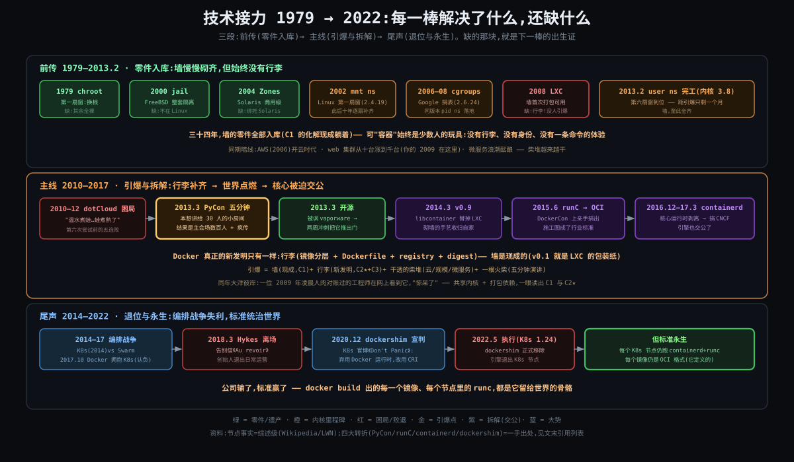
从图上能读出五件事:
- 前传带(绿/橙)三十四年只干一件事:把墙的零件搬进仓库 —— 每个节点都"解决了一样,还缺一样",缺的就是下一棒的出生证;
- 2013 年 2 月,user namespace 在内核 3.8 完工 —— 距离引爆只剩一个月:最后一块零件和火柴几乎同月到位;
- 主线带(金/紫):引爆点(PyCon 五分钟)之后,紫色节点全是"交公"(libcontainer → runC → containerd)—— 引爆和拆解是同一条线;
- 尾声带(蓝/红):战争(K8s vs Swarm)→ 认负(2017.10)→ 离场(2018.3)→ 宣判与执行(2020/2022)→ 但最右边那格是绿的:标准永生;
- 主线带下面那行小字,是 2013 年大洋另一端的你。
§2 前传(1979–2013.2):零件入库
接力棒逐一过手 —— 每棒只问两个问题:解决了什么?还缺什么?
| 棒 | 年代 | 解决了什么 | 还缺什么(= 下一棒的出生证) |
|---|---|---|---|
| chroot | 1979(V7 Unix;1982 进 BSD) | 换根 —— 文件视图隔离的雏形(第一扇"窗") | 只挡文件视图;进程/网络/资源全裸 |
| FreeBSD jail | 2000 | 第一次"整套"隔离(进程+网络+弱化 root) | 不在 Linux 生态 —— 主战场的服务器在别处 |
| Solaris Zones | 2004 | 商用级容器,运维精良 | 绑死 Solaris;随 Sun 的衰落陪葬 |
| Linux mnt ns | 2002(内核 2.4.19,Al Viro) | Linux 的第一扇窗 | 单扇窗不成墙 |
| UTS/IPC/pid/net ns | 2006–2009(2.6.19 → 2.6.29) | 窗逐扇补齐 | 散件,没人打包 |
| cgroups | 2006 始,2008.1 并入 2.6.24(Google「process containers」,Paul Menage / Rohit Seth) | 表入库 —— 与 pid ns 同一个内核版本落地 | 同上:有零件,无产品 |
| OpenVZ | 2005 | 整机容器化(虚拟主机商在用) | 要打内核补丁,始终未入主线 → 受众受限 |
| LXC | 2008.8 | 墙首次打包可用 —— namespace+cgroups 的第一个易用组合 | 行李! 没有镜像、没有 Dockerfile、没有 registry、没有一条命令的体验 |
| user ns 完工 | 2013.2(内核 3.8) | 第六扇窗到位,墙至此全齐 | 只欠行李,和一根火柴 |
为什么 LXC 没有引爆 —— 四样缺失(这是 2013 之谜的反面证词):
- 缺行李:LXC 给你一间空房,进去还得手工装环境 —— 幕四("在我机器上能跑")在容器里原样重演;
- 缺身份:没有 digest,没法验真(C3 无解);
- 缺分发:没有 registry,环境没法 push/pull 流通;
- 缺体验:配置繁琐,用的人把它当更便宜的虚拟机 —— 宠物,不是货柜。
同期暗线(柴堆在变干):AWS(2006)把"机器"变成可编程资源;web 集群从十台涨向千台(你的 2009 就在这条曲线上);微服务浪潮把部署单元数量翻了一个数量级再翻一个。C2★ 和 C3 的痛,正在逼近社会性顶点。
§3 引子:创作者的烦躁(2010–2012)
dotCloud,2010 年从 Y Combinator 出来的 PaaS 创业公司,十几个人,内部用 Linux 容器(+aufs 分层)跑着成千上万客户应用 —— 容器和分层,他们当成商业机密用了好几年。但公司本身在温水里:
"dotCloud 绝不算失败 —— 我们有付费客户,但它成功得不够快。像一只温水煮的青蛙:每个月都有进展,但你忍不住想,'能不能更好?'"
"2012 年底,我对自己说:蛙已经煮熟了。我重复一遍,蛙煮熟了。"
—— Solomon Hykes,Y Combinator 专访(2016)[^yc]
更扎心的是,把容器技术做成产品这件事,Docker 是第六次尝试:
"Docker 大概是我们解决这个问题的第六次尝试,前五次显然都失败了。失败的真正原因是:我们没有 all in,想两头都要 —— 那是大集团的打法,对一个 15 人的创业公司行不通。"
"你得告诉工程师:'过去几个月你们做的所有东西,我们全部砍掉。'……但你必须做出那个决定,然后全押。"
—— 同上 [^yc]
于是在公司最黑暗的时刻,Hykes 对董事会提了一个激进方案:把内部的容器技术开源 —— 商业模式?还不知道。
§4 引爆:五分钟,与一根火柴的物理学(2013)
2013 年 3 月,加州圣克拉拉,PyCon US。Hykes 报了一个闪电演讲:《The future of Linux containers》,五分钟,演示一个还没发布的内部工具 —— Docker [^pycon]。
他以为会被安排在"能坐三十个人的小房间"。结果 PyCon 的闪电演讲在主会场,台下几百人;视频随后疯传 [^zenduty]。有人把他们还没开源的网站发上 Hacker News,讥讽这是 vaporware(雾件)—— 团队的回应是:两周冲刺,把它推出门。2013 年 3 月,Docker 开源 [^zenduty][^snyk]。
为什么这五分钟能点着,而 LXC 烧了五年没动静?把引爆拆成方程式:
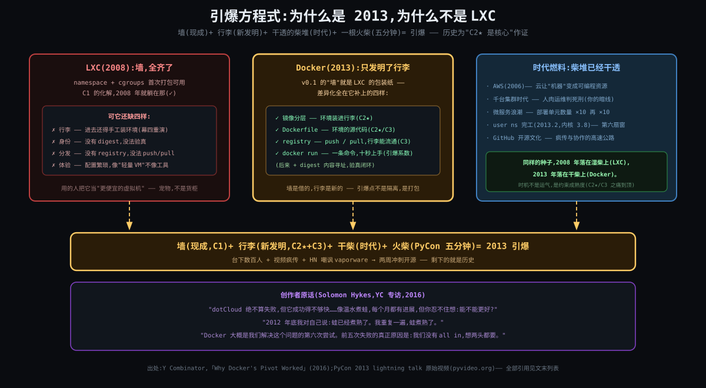
墙(现成,C1)+ 行李(新发明,C2★+C3)+ 干透的柴堆(时代)+ 一根火柴(五分钟演讲)= 2013
- 墙是借的:v0.1 的隔离层就是 LXC —— Docker 没有发明任何隔离技术;
- 行李是新的:镜像分层(环境装箱)、Dockerfile(环境的源代码)、registry(行李流通)、
docker run一条命令(十秒钟上手的体验)—— 每一样都打在 C2★/C3 的痛点上; - 柴是干的:云已普及、集群已千台、微服务已起浪、user ns 刚完工、GitHub 文化已成型;
- 火柴:一场本来给三十个人准备的演讲,误入主会场。
同样的种子,2008 年落在湿柴上(LXC),2013 年落在干柴上(Docker)。时机不是运气,是约束的成熟度。
而在大洋另一端,同一年 —— 一位 2009 年在凌晨两点的机房里用反编译器核对过版本的中国工程师,在网上看到了它:
"可以利用共享内核 + 打包依赖的方式启动进程 —— 我惊呆了。它解决了我当时对分布式系统所有的迷惑与恐惧。" —— 本篇主人公,2013
注意他一眼读出的两样东西:共享内核(C1③),打包依赖(C2★) —— 一个被五幕痛史磨过的工程师,十秒钟内完成了这趟旅程前三站的全部推导。引爆的真正机制,是全世界数百万个这样的瞬间。
§5 合:成型、战争与拆解(2014–2022)
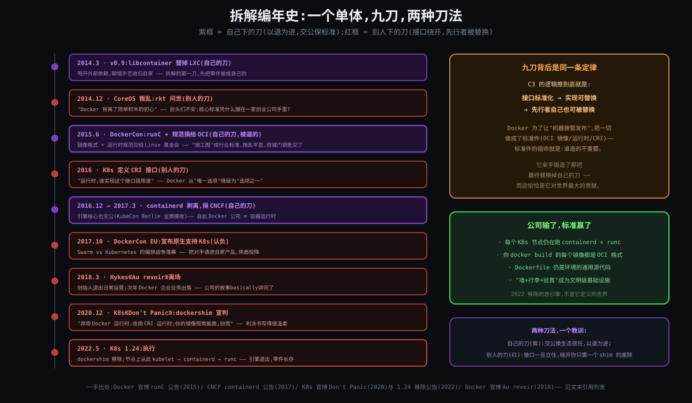
暴红之后的故事,是一部拆解编年史 —— 九刀,两种刀法(紫 = 自己下的刀,红 = 别人下的刀):
- 2014.3,v0.9:libcontainer 替掉 LXC(紫)—— 砌墙手艺收归自家,摆脱外部依赖 [^v09];
- 2014.12:CoreOS 叛乱(红)—— 推出竞品 rkt,公开指责 Docker 背离"简单积木"的初心;巨头们的不安浮出水面:容器的事实标准,凭什么握在一家创业公司手里?[^infoworld]
- 2015.6,DockerCon:runC + 规范捐给 OCI(紫,被逼的)—— Hykes 在主题演讲上宣布把 libcontainer 全部内容连同镜像/运行时规范捐给 Linux 基金会新设的开放容器计划;AWS、Google、微软、红帽等二十余家创始成员 [^runc][^oci]。叛乱平息,但城门钥匙交了;
- 2016:Kubernetes 定义 CRI(红)—— "运行时,谁实现这个接口我用谁。" Docker 从唯一选项降级为选项之一;
- 2016.12 → 2017.3:containerd 剥离,捐给 CNCF(紫)—— 引擎核心也交公(KubeCon Berlin,技术监督委员会全票通过)[^containerd];
- 2016–2017:编排战争白热化 —— Docker 把 Swarm 直接捆进引擎(1.12),试图用入口优势对抗 Kubernetes;生态反感,战局反而加速倾斜 [^infoworld];
- 2017.10,DockerCon EU:Docker 宣布原生支持 Kubernetes —— 把对手请进自家产品,体面认负;
- 2018.3:Hykes 发表《Au revoir》,退出日常运营 [^aurevoir];次年,Docker 企业业务出售给 Mirantis;
- 2020.12:K8s 官博《Don't Panic: Kubernetes and Docker》宣判 dockershim 弃用;2022.5,K8s 1.24 执行移除 [^dontpanic][^124] —— 从此每个 K8s 节点上跑的是
kubelet → containerd → runc,Docker 引擎退出了它定义的世界的中心。
九刀背后是同一条定律 —— C3 推到自己身上: Docker 为了让"机器接管发布",把一切做成了标准件(OCI 镜像、OCI 运行时、CRI 接口);标准件的宿命就是谁造的不重要。dockershim 这个名字本身就是判决书:K8s 为了迁就 Docker 引擎专门垫的一块垫片 —— 垫片即技术债,2022 年清偿。
但拆解的另一面:公司输了,标准赢了。 你今天 docker build 出的每一个镜像都是 OCI 格式;每个 K8s 节点里都跑着它孵化的 containerd + runc;Dockerfile 仍是全行业"环境的源代码"。2022 年移除的是引擎,不是它定义的世界。
§6 遗憾与反思(有据的,不编)
- "前五次失败,因为没有 all in" —— 创作者本人盖章的最大教训(YC 专访原话)[^yc]:同时抱着旧业务和新方向,是"大集团打法",杀死了前五次尝试;
- 把编排捆进引擎 —— Swarm 内置进 Docker 1.12(2016)被广泛认为是战略失误:它把"中立的基础设施"变成了"有立场的竞争者",直接加速了 CRI 的诞生与生态的离心(综述判断,InfoWorld《How Docker broke in half》)[^infoworld];
- 商业模式始终悬空 —— 核心全部捐出后"卖什么"一直无解:企业业务 2019 年售予 Mirantis;今天的 Docker 公司靠 Docker Desktop 订阅与开发者工具存活 —— 技术史上罕见的"赢了一切,除了生意";
- dockershim 之债 —— 引擎当年没有按"可被编排的标准件"设计自己与 K8s 的接缝,垫片由别人来垫,账由自己来还。
未能找到一手资料的部分(坦诚):Hykes 本人对"如果重来会怎么做"的系统性反思长文,未检索到 —— 不代写。他 2018 年的《Au revoir》[^aurevoir] 与后来创办 Dagger(回到开发者工具)的选择,可视为行动层面的回答,但这是推断,不是引用。
§7 约束回扣(历史侧):同一份清单,三个年代三种读法
| 年代 | C1(榨干硬件) | C2★(环境随行) | C3(去人化+验真) | 结果 |
|---|---|---|---|---|
| 2008(LXC) | ✅ 零件已齐(墙可用) | 🟡 痛存在但未到顶(云未普及、集群尚小) | 🟡 同上 | 有墙没行李,没人引爆 |
| 2013(Docker) | ✅ 现成(借 LXC) | 🔴 痛顶(千台集群+微服务)→ 镜像/Dockerfile 正中 | 🔴 痛顶 → registry/digest 正中 | 引爆 |
| 2015–2022(拆解) | —— | 标准化(OCI 镜像) | 标准化推到自身(OCI 运行时/CRI) | 公司退位,标准永生 |
读法:约束不变,成熟度在变 —— 同一份 C1~C3,在 2008 年读出"玩具",在 2013 年读出"革命",在 2017 年读出"拆解"。这正是约束清单比"大事年表"更锋利的地方:年表记录发生了什么,约束解释为什么是那时发生。
§8 呼应灵魂问题
灵魂问题的三问在前三站已闭环 ~85%(定义/区别/机制)。本站补上的是时间维度:
- "namespace、cgroups、镜像分层各扮演什么角色" —— 现在有了历史版答案:namespace+cgroups(墙)是内核社区三十年的公共工程,Docker 是借用者;镜像分层才是 Docker 自己的发明 —— 角色之别,在出生上就写好了;
- "和虚拟机的根本区别" —— 历史补充:VM(2008 救场)与容器(2013 引爆)的接力关系,本身就是 C1③("隔离太贵也是浪费")从忍受到不可忍受的过程;
- 你重心清单的最后两项 —— "为什么 2013 引爆"(干柴+行李+火柴)与"为什么被自己拆解"(C3 推到自身)—— 本站正面闭环。
累计闭环度:约 92%。 留白:数字级与源码级的深潜(若走 Deep),以及与邻居方案的正面对比(若走 Comparison)。
尾声:大洋两岸的同一个瞬间
2013 年 3 月,加州圣克拉拉的主会场,五分钟演讲结束,掌声与疯传开始。
同一年,太平洋另一端,一位四年前在凌晨两点的机房里逐台核对 md5、用反编译器验证版本的工程师,在网上看到了这个东西:
"共享内核 + 打包依赖的方式启动进程 —— 我惊呆了。它解决了我当时对分布式系统所有的迷惑与恐惧。"
他不知道的是:他一眼读出的那两样 —— 共享内核、打包依赖 —— 十三年后会被他自己在一份笔记里,亲手锻成 C1 和 C2★;他当年的恐惧(幕五,2009)会成为第五幕的剧本;而那句"惊呆了",会成为这桩悬案的最后一份证词:
引爆从来不在会场里。引爆是全世界数百万个带着旧伤的工程师,在屏幕前同时认出解药的那个瞬间。
证词的最后一页(读者终审): 被问到"四样行李里哪一样最伟大",这位亲历者的回答是 —— 镜像。这个判决至此三重验证:直觉(2013 年一眼读出"打包依赖")、推导(约束清单里钦点 C2★ 为核心)、史证(v0.1 = LXC 包装纸)。而历史自己的终审也站在这边:引擎死了(dockershim,2022),一条命令的垄断没了(podman/nerdctl),Dockerfile 有了竞争者(buildpacks/nix)——唯独镜像成为 OCI 标准,统治了一切。 公案另判一笔:镜像是价值,docker run 是传播系数 —— 伟大的发明需要一个十秒钟的开关,但活到最后的,是发明本身。
(接下来的岔路口,见对话。)
一手资料引用列表
一手(关键论断的出处):
[^pycon]: Solomon Hykes, *"The future of Linux Containers"*(闪电演讲原始视频),PyCon US 2013,2013-03. https://pyvideo.org/pycon-us-2013/the-future-of-linux-containers.html
[^yc]: Y Combinator, *"Why Docker's Pivot Worked"*(Solomon Hykes 第一人称专访),2016-05. https://www.ycombinator.com/blog/solomon-hykes-docker-dotcloud-interview/
[^runc]: Docker 官方博客, *"Introducing runC: a lightweight universal container runtime"*,2015-06. https://www.docker.com/blog/runc/
[^v09]: Docker 官方博客, *"Docker 0.9: introducing execution drivers and libcontainer"*,2014-03. https://www.docker.com/blog/docker-0-9-introducing-execution-drivers-and-libcontainer/
[^containerd]: CNCF 官方公告, *"containerd joins the Cloud Native Computing Foundation"*,2017-03-29. https://www.cncf.io/announcements/2017/03/29/containerd-joins-cloud-native-computing-foundation/
[^dontpanic]: Kubernetes 官方博客, *"Don't Panic: Kubernetes and Docker"*,2020-12-02. https://kubernetes.io/blog/2020/12/02/dont-panic-kubernetes-and-docker/
[^124]: Kubernetes 官方博客, *"Kubernetes Removals and Deprecations In 1.24"*,2022-04-07. https://kubernetes.io/blog/2022/04/07/upcoming-changes-in-kubernetes-1-24/
[^aurevoir]: Solomon Hykes, *"Au revoir"*(离任告别信),Docker 官方博客,2018-03. https://www.docker.com/blog/au-revoir/
综述(背景节点,可靠性良好):
[^oci]: InfoQ, *"Docker, CoreOS and Industry Coalition Create Open Container Project"*,2015-06. https://www.infoq.com/news/2015/06/open-container-project/
[^infoworld]: InfoWorld, *"How Docker broke in half"*(拆解与战争的深度复盘),2021. https://www.infoworld.com/article/2269272/how-docker-broke-in-half.html
[^zenduty]: Zenduty 播客实录, *"The story of docker with Solomon Hykes"*(PyCon 现场与两周冲刺细节). https://zenduty.com/blog/solomon-hykes-docker-dagger/
[^snyk]: Snyk, *"The Docker project turns 10!"*,2023. https://snyk.io/blog/the-docker-project-turns-10/
- Wikipedia:cgroups(Google 2006「process containers」,Menage/Seth,2.6.24 并入)/ Linux namespaces(各窗时间线)/ LXC(2008.8 首发)/ Open Container Initiative. https://en.wikipedia.org/wiki/Cgroups 等
- LWN, *"Namespaces in operation, part 1"*,2013-01. https://lwn.net/Articles/531114/
- InfoQ, *"Docker drops LXC as default execution environment"*,2014-03. https://www.infoq.com/news/2014/03/docker_0_9/
无一手资料的部分(坦诚清单)
- dotCloud 内部前五次尝试的具体内容:仅存 Hykes 在 YC 专访中的概述,细节不可考;
- "两周冲刺开源"的过程细节:出自二手播客/回顾转述([^zenduty][^snyk]),可信度中等;
- CoreOS"背离初心"的指责:为当年公开信的通行转述(综述级),未核对原文;
- dotCloud 内部使用 aufs / 容器的工程细节:综述级;
- Hykes 对"如果重来"的系统性反思:未找到一手长文,本文不代写(已在 §6 标注)。
Docker 内核源码深剖:六面墙 · 三个表 · 两个洞
灵魂问题(贯穿全程): 容器到底是什么?它和虚拟机的根本区别在哪?当一个容器真正跑起来的那一刻,Linux 内核里到底发生了什么 —— namespace、cgroups、镜像分层各自扮演什么角色?
这一篇的本分: 把容器赖以存在的三组机制,各自钻进内核源码讲透,对照我们一路用的「砌墙 + 凿洞」心法:
- 第一部分 · 六面墙:clone()系统调用怎么造出 namespace 的 6 扇窗(copy_namespaces→ 6 个copy_*)。
- 第二部分 · 三个表:cgroup 怎么实现 cpu / memory / io 三张计量表(try_charge/ CFS bandwidth / blk-throttle)。
- 第三部分 · 两个洞:veth 凿 net 墙、volume 凿 mnt 墙(veth_newlink/clone_mnt)。
每部分都是"总(先用 C 代码 / cgroup / 命令把效果演出来,贴控制台输出作铁证)+ 分(逐项从用户态 syscall 钻到内核实现关键源码)"。不在意篇幅,把逻辑讲清最重要。
概览
容器的隔离,第一层叫 namespace(命名空间)。它把内核里本来全局的资源(进程号、网络栈、挂载表、主机名、IPC、用户表)切成一份份独立视图,让每个容器以为"整台机器都是我的"。容器常用 6 扇窗:pid / net / mnt / uts / ipc / user。
namespace 没有"创建容器"这种 API,它的全部入口只有三个系统调用 —— clone()(出生即隔离)、unshare()(自己搬家)、setns()(串门)。本篇聚焦 clone():带着 CLONE_NEW* 标志 clone 一个进程,内核怎么把六扇窗一次性建出来。答案出奇地朴素:造墙 = 给新进程的指针换指向。
生活类比:给新员工配一套"独立视图"
一家大公司(内核),员工(进程)默认共用一套东西:一本全公司通讯录(进程表)、一部前台总机(网络)、一个公共文件柜(文件系统)、一块公告栏(主机名)。
来了个保密项目组(容器),HR(clone)给他们配独立的一套:不是另盖一栋楼(那是虚拟机),而是在新员工工牌(task_struct)上,把"你看哪本通讯录"那一栏从'公司通讯录'改成'本组通讯录'。改几个指向,人就住进了独立视图。还有个特殊的:工牌的发牌权(user 窗),必须最先发——后面发别的都要先验"你有没有资格",而验资格靠的就是这张工牌。
带着这个直觉:namespace 不造实体,只换指向;user 窗是"发牌权",必须第一个建。 我们来看真东西。
架构全景图(HTML)
完整可交互版:
stages/05-deep/pics/05-1-walls-arch.html。下方为同款内嵌图。
user 窗 · 最先建 · 发牌权
派生其余五扇
mnt
uts
ipc
pid
(额外)
net
总:80 行 C 代码,一次造出六面墙
不借 Docker、不借 runc,只用一个 clone() 带上六个 CLONE_NEW* 标志,就能亲手造一个"迷你容器",把六面墙一次开齐。核心就一句 clone(container, stack, CLONE_NEWUSER|CLONE_NEWPID|CLONE_NEWNET|CLONE_NEWNS|CLONE_NEWUTS|CLONE_NEWIPC|SIGCHLD, NULL)。
完整代码(stages/05-deep/src/05-mini-docker.c,普通用户即可编译运行,因为带了 CLONE_NEWUSER):
#define _GNU_SOURCE
#include <sched.h>
#include <stdio.h>
#include <stdlib.h>
#include <unistd.h>
#include <string.h>
#include <fcntl.h>
#include <signal.h>
#include <sys/mount.h>
#include <sys/wait.h>
#include <sys/utsname.h>
#define STACK_SIZE (1024 * 1024)
static char child_stack[STACK_SIZE];
static int sync_pipe[2]; // 父→子:等 uid_map 配好
static void write_file(const char *path, const char *content) {
int fd = open(path, O_WRONLY);
if (fd < 0) { perror(path); return; }
write(fd, content, strlen(content));
close(fd);
}
// 子进程:它一出生就身处六面墙之内
static int container(void *arg) {
char ch;
close(sync_pipe[1]);
read(sync_pipe[0], &ch, 1); // 阻塞,直到父把 uid/gid 映射写好
sethostname("mini-container", 14); // 【uts 窗】改主机名,只影响本窗
mount(NULL, "/", NULL, MS_REC | MS_PRIVATE, NULL); // 【mnt 窗】传播设私有
mount("proc", "/proc", "proc", 0, NULL); // 重挂 /proc,让 ps 只看见本 pid 窗
struct utsname u; uname(&u);
printf("\n============= 容器内视图(墙内) =============\n");
printf("[pid 窗 ] getpid() = %d ← 我以为我是 1 号\n", getpid());
printf("[uts 窗 ] hostname = %s\n", u.nodename);
printf("[user窗] getuid()/geteuid() = %d/%d ← 容器内的 root\n", getuid(), geteuid());
printf("[net 窗 ] 我能看到的网卡:\n");
system("ip -o link show 2>/dev/null | awk '{printf \" %s\\n\",$2}' || echo ' (只有 lo)'");
printf("[pid 窗 ] /proc 里的进程数 = "); fflush(stdout);
system("ls /proc | grep -E '^[0-9]+$' | wc -l");
printf("===========================================\n");
execlp("/bin/sh", "/bin/sh", (char *)NULL);
return 1;
}
int main(void) {
struct utsname u; uname(&u);
printf("============= 宿主视图(墙外) =============\n");
printf("[宿主] getpid() = %d , hostname = %s , getuid() = %d\n",
getpid(), u.nodename, getuid());
pipe(sync_pipe);
// ★ 一次 clone,带六个 CLONE_NEW* —— 六面墙一次开齐
int flags = CLONE_NEWUSER | CLONE_NEWPID | CLONE_NEWNET |
CLONE_NEWNS | CLONE_NEWUTS | CLONE_NEWIPC | SIGCHLD;
pid_t pid = clone(container, child_stack + STACK_SIZE, flags, NULL);
if (pid < 0) { perror("clone"); exit(1); }
printf("[宿主] 容器进程在【宿主】上的 PID = %d ← 不是容器内看到的 1\n", pid);
// 配 user 窗映射:容器内 uid 0 ←→ 宿主当前 uid(rootless 的关键)
char path[64], line[64];
snprintf(path, sizeof path, "/proc/%d/setgroups", pid); write_file(path, "deny");
snprintf(path, sizeof path, "/proc/%d/uid_map", pid);
snprintf(line, sizeof line, "0 %d 1", getuid()); write_file(path, line);
snprintf(path, sizeof path, "/proc/%d/gid_map", pid);
snprintf(line, sizeof line, "0 %d 1", getgid()); write_file(path, line);
write(sync_pipe[1], "x", 1); // 放行子进程
waitpid(pid, NULL, 0);
return 0;
}控制台输出(六面墙的现场铁证):
$ gcc -O2 -o mini-docker 05-mini-docker.c && ./mini-docker
============= 宿主视图(墙外) =============
[宿主] getpid() = 8421 , hostname = dev-box , getuid() = 1000
[宿主] 容器进程在【宿主】上的 PID = 8422 ← 不是容器内看到的 1
============= 容器内视图(墙内) =============
[pid 窗 ] getpid() = 1 ← 我以为我是 1 号
[uts 窗 ] hostname = mini-container
[user窗] getuid()/geteuid() = 0/0 ← 容器内的 root
[net 窗 ] 我能看到的网卡:
lo:
[pid 窗 ] /proc 里的进程数 = 2
===========================================
/ # ps -e
PID TTY TIME CMD
1 pts/0 00:00:00 sh
6 pts/0 00:00:00 ps
/ # ipcs -m # 共享内存段:一个都看不到(ipc 窗)
------ Shared Memory Segments --------
key shmid owner perms bytes nattch status
/ #一张表读完六面墙的铁证(宿主 vs 容器):
| 窗 | 宿主看到 | 容器看到 | 证明了 |
|---|---|---|---|
| pid | 容器进程是 PID 8422 | getpid() = 1 | 进程号空间隔离(同一进程,两个号) |
| uts | hostname = dev-box | hostname = mini-container | 主机名隔离 |
| user | uid = 1000 | uid = 0(容器内 root) | 用户映射:墙内是 root,墙外只是 1000 |
| net | eth0/docker0/lo… | 只有 lo | 网络栈隔离(干净的孤岛) |
| pid(再证) | 几百个进程 | /proc 里只有 2 个 | 只看得见本窗进程 |
| ipc | 一堆共享内存段 | ipcs -m 空 | IPC 隔离 |
六行输出,六面墙。下面"分"的部分,就对着这段代码,把每一扇窗从用户态那一行,钻到内核里建它的那个函数。
分:六扇窗逐个钻(用户态 → 内核实现)
每扇窗一个小节,结构固定:【用户态】这扇窗在 mini-docker 里由哪个 flag / 哪行触发、观察到什么;【内核实现】贴对应的内核 copy_xxx 真源码,逐行读。
墙一 · uts 窗(CLONE_NEWUTS):最简单的样板
【用户态】 flags 里的 CLONE_NEWUTS 开这扇窗;容器里 sethostname("mini-container") 改主机名,宿主仍是 dev-box —— 互不影响。
【内核实现】 入口 copy_utsname(),真源码(kernel/utsname.c):
struct uts_namespace *copy_utsname(u64 flags,
struct user_namespace *user_ns, struct uts_namespace *old_ns)
{
struct uts_namespace *new_ns;
BUG_ON(!old_ns);
get_uts_ns(old_ns);
if (!(flags & CLONE_NEWUTS)) /* 没要这扇窗 → 直接返回旧窗(共享) */
return old_ns;
new_ns = clone_uts_ns(user_ns, old_ns);
put_uts_ns(old_ns);
return new_ns;
}
static struct uts_namespace *clone_uts_ns(struct user_namespace *user_ns,
struct uts_namespace *old_ns)
{
struct uts_namespace *ns;
/* … inc_uts_namespaces 配额 … */
ns = kmem_cache_zalloc(uts_ns_cache, GFP_KERNEL); /* 分配一个新窗 */
/* … ns_common_init … */
down_read(&uts_sem);
memcpy(&ns->name, &old_ns->name, sizeof(ns->name)); /* ★ 把父窗的名字拷一份 */
ns->user_ns = get_user_ns(user_ns); /* 记住归哪个 user 窗管 */
up_read(&uts_sem);
return ns;
}逐行读: copy_utsname 是所有 copy_xxx 的标准样板 —— 没传 CLONE_NEWUTS 就 return old_ns(共享旧窗),传了才 clone_uts_ns 造新窗。造新窗的核心就一行 memcpy(&ns->name, &old_ns->name, …):新窗一出生不是空的,而是父窗的一份副本(所以容器初始主机名继承宿主),之后 sethostname 在副本上改,与父分叉。每扇窗都遵循这个"先继承、再分叉"的模式。
墙二 · pid 窗(CLONE_NEWPID):PID 1 幻觉的真身
【用户态】 CLONE_NEWPID 开窗;容器里 getpid() 返回 1,宿主上同一进程是 8422;容器里 ps 只看到 2 个进程。
【内核实现】 copy_pid_ns → create_pid_namespace,真源码(kernel/pid_namespace.c):
static struct pid_namespace *create_pid_namespace(struct user_namespace *user_ns,
struct pid_namespace *parent_pid_ns)
{
struct pid_namespace *ns;
unsigned int level = parent_pid_ns->level + 1; /* ① 层级 = 父 + 1 */
/* … */
if (level > MAX_PID_NS_LEVEL) /* ② 嵌套深度上限 */
goto out;
ns = kmem_cache_zalloc(pid_ns_cachep, GFP_KERNEL);
idr_init(&ns->idr); /* ③ 每窗自带 idr 发号器 */
ns->level = level;
ns->parent = get_pid_ns(parent_pid_ns); /* ④ 指回父,形成树 */
ns->user_ns = get_user_ns(user_ns);
/* … */
return ns;
}逐行读出 PID 1 幻觉: level = parent->level + 1(①)+ ns->parent(④)让 pid 窗成为一棵树(宿主根窗 level 0,容器 level 1)。idr_init(&ns->idr)(③)给每个窗一个独立发号器,从 1 开始发。 而内核 struct pid 里有个 numbers[] 数组,alloc_pid() 创建进程时从当前窗一路向上,给每一层各分一个号 —— 所以同一进程在容器窗是 1、在根窗是 8422。
这就是"单向玻璃"的源码真身:容器里
ps查本窗 idr(只看见本窗有号的进程);宿主ps查根窗 idr(容器进程在根窗也有号,所以看得见)。一个idr_init,两个世界。
墙三 · ipc 窗(CLONE_NEWIPC):一套全新的进程间通信
【用户态】 CLONE_NEWIPC 开窗;容器里 ipcs -m 空空如也,看不到宿主的任何共享内存段 / 信号量。
【内核实现】 copy_ipcs → create_ipc_ns,真源码(ipc/namespace.c):
struct ipc_namespace *copy_ipcs(u64 flags,
struct user_namespace *user_ns, struct ipc_namespace *ns)
{
if (!(flags & CLONE_NEWIPC)) /* 老规矩:没要就共享 */
return get_ipc_ns(ns);
return create_ipc_ns(user_ns, ns);
}
static struct ipc_namespace *create_ipc_ns(struct user_namespace *user_ns,
struct ipc_namespace *old_ns)
{
struct ipc_namespace *ns;
/* … inc_ipc_namespaces 配额 … */
ns = kzalloc_obj(struct ipc_namespace, GFP_KERNEL_ACCOUNT);
/* … ns_common_init / ns->user_ns = get_user_ns(user_ns) … */
err = mq_init_ns(ns); /* POSIX 消息队列:全新一套 */
/* … setup_mq_sysctls / setup_ipc_sysctls … */
err = msg_init_ns(ns); /* System V 消息队列:全新一套 */
sem_init_ns(ns); /* System V 信号量:全新一套 */
shm_init_ns(ns); /* System V 共享内存:全新一套 */
return ns;
}逐行读: 和 uts 不同,ipc 窗造的不是"拷贝一份",而是 mq_init_ns / msg_init_ns / sem_init_ns / shm_init_ns 把四套 IPC 子系统全部初始化成空的。因为 IPC 的语义是"按 key 共享" —— 如果继承父窗的对象,两个容器用同一个 key 就会互相踩,所以 ipc 窗一出生就是干净的四张空表。这解释了容器里 ipcs 为什么空。
墙四 · mnt 窗(CLONE_NEWNS):整棵挂载树的副本
【用户态】 CLONE_NEWNS 开窗;容器里 mount("proc", "/proc", …) 重挂 proc、之后 pivot_root 换根,全都不影响宿主的挂载表。
【内核实现】 入口 copy_mnt_ns()(fs/namespace.c,该文件 5000+ 行,这里给准确调用链 + 关键函数,不伪造逐字):
copy_mnt_ns(flags, old_ns, user_ns, new_fs) // fs/namespace.c
└─ if (!(flags & CLONE_NEWNS)) return get_mnt_ns(old_ns); // 没要就共享
└─ 否则 → alloc_mnt_ns() 分配新 mnt_namespace
└─ copy_tree(old_root, ...) // ★ 把父窗的【整棵挂载树】复制一份
└─ 新窗的 root / 指向这份副本关键读点: mnt 窗和 pid/ipc 不同 —— 它不是空的,也不是简单拷一个字段,而是 copy_tree() 把父窗的整棵挂载树(所有挂载点的拓扑)复制一份。新窗一出生就有一份和宿主一样的挂载视图,之后容器在这份副本上 mount / pivot_root 随便改,父窗的树纹丝不动。这就是"容器换根不影响宿主"的根。
历史彩蛋:mnt 是 Linux 第一个 namespace(2002,内核 2.4.19,Al Viro 实现)。当年以为不会再有别的 namespace,所以标志位直接叫
CLONE_NEWNS(NEW NameSpace),没带MNT。后来又加了 5 个,这个命名就成了历史包袱 —— 源码里一个名字,封存着 namespace 家族的起点。
墙五 · net 窗(CLONE_NEWNET):最重的一扇
【用户态】 CLONE_NEWNET 开窗;容器里只看得到一个 lo(还是 down 的),宿主的 eth0/docker0 全不可见。这扇窗也是洞二(veth)要凿的那扇(见第三篇)。
【内核实现】 copy_net_ns → setup_net,真源码(net/core/net_namespace.c):
struct net *copy_net_ns(u64 flags,
struct user_namespace *user_ns, struct net *old_net)
{
struct net *net;
int rv;
if (!(flags & CLONE_NEWNET)) /* 没要就共享(--network host 走这) */
return get_net(old_net);
/* … inc_net_namespaces 配额 … */
net = net_alloc();
rv = preinit_net(net, user_ns);
/* … */
down_read_killable(&pernet_ops_rwsem);
rv = setup_net(net); /* ★ 真正建一整套网络栈 */
up_read(&pernet_ops_rwsem);
return net;
}
static __net_init int setup_net(struct net *net)
{
const struct pernet_operations *ops;
/* … */
list_for_each_entry(ops, &pernet_list, list) { /* ★ 遍历每个网络子系统 */
error = ops_init(ops, net); /* 逐个在新 net 里初始化 */
if (error < 0)
goto out_undo;
}
/* … 把 net 加进全局 net 链表 … */
}逐行读出"为什么 net 窗最贵": 别的窗就拷一个结构;net 窗要 setup_net 遍历 pernet_list(所有注册过的网络子系统),逐个 ops_init 在新 net 里建一套 —— 独立的路由表、邻居表、conntrack 表、lo 环回设备、各种 /proc/sys/net/* 参数……全都得新建一份。所以创建 net 窗是六扇里最慢的,也是为什么容器网络初始化是出生流程里相对重的一步。容器里那个孤零零的 lo,就是 ops_init 给每个新 net 标配的环回设备。
net 窗到底隔离了哪些"网络表"? setup_net 遍历 pernet_list 逐个 ops_init,建出来的就是下面这一整套 —— 每一项,容器都有自己独立的一份,与宿主、与别的容器互不相干:
| 网络表 / 状态 | 作用 | 隔离后的效果 |
|---|---|---|
网络设备表(net_device) | 本 netns 里有哪些网卡 | 容器只有自己的 lo(+ 后来 veth 插的 eth0) |
| IP 地址 | 每张网卡绑的地址 | 容器自己的 172.17.0.x |
| 路由表(FIB:main / local / …) | 包从哪个口出、下一跳是谁 | 容器自己一套路由;改它不影响宿主 |
路由策略 RPDB(ip rule) | 多张路由表时,按规则选用哪张(策略路由) | 容器自己一套规则库 |
| ARP / 邻居表(neigh) | IP → MAC 的缓存 | 容器自己缓存;ip neigh 只见自己学到的 |
| iptables / nftables(filter / nat / mangle / raw) | 防火墙 + NAT 规则 | 容器内改 iptables 完全不动宿主(各一套表与链) |
| conntrack 连接跟踪表 | NAT / 有状态防火墙的"账本"(谁连了谁) | 容器自己一本账;进出门 NAT 的回程还原靠它 |
| 端口绑定空间 | 哪个端口被占用 | 容器的 :80 ≠ 宿主的 :80,互不冲突 |
| socket 列表 | 本 netns 的所有连接 | 容器里 ss / netstat 只看见自己的连接 |
| TC qdisc(流量整形) | 每张网卡的排队 / 限速规则 | 容器自己的限速策略 |
sysctl net.*(ip_forward / tcp_* / rp_filter …) | 网络可调参数 | 容器自己一套;改 net.ipv4.ip_forward 只影响自己 |
一句话:net 窗不是"隔离了一个 IP",是把整条网络栈 —— 从二层设备、三层路由/策略/邻居,到四层端口/socket,再到防火墙/NAT/conntrack —— 整套复刻了一份。 这既是它最贵的原因(
setup_net要逐个初始化这么多子系统),也是为什么"洞二"必须用 veth + NAT,才能让这座孤岛对外做生意(见第三篇)。
墙六 · user 窗(CLONE_NEWUSER):发牌权,必须最先建
【用户态】 CLONE_NEWUSER 开窗;关键在父进程那三行:往 /proc/<pid>/uid_map 写 "0 1000 1" —— 把容器内的 uid 0 映射到宿主的 uid 1000。于是容器里 getuid() = 0(是 root),但它在宿主上的真实身份只是普通用户 1000。这就是 rootless 容器的地基。
【内核实现】 create_user_ns,真源码(kernel/user_namespace.c):
int create_user_ns(struct cred *new)
{
struct user_namespace *ns, *parent_ns = new->user_ns;
kuid_t owner = new->euid;
kgid_t group = new->egid;
/* … */
if (parent_ns->level > 32) /* ① 嵌套上限 32 层 */
goto fail;
/* … inc_user_namespaces 配额 … */
if (!kuid_has_mapping(parent_ns, owner) || /* ② 你的 uid 必须在父窗里有映射 */
!kgid_has_mapping(parent_ns, group))
goto fail_dec;
ns = kmem_cache_zalloc(user_ns_cachep, GFP_KERNEL);
/* … */
ns->parent = parent_ns;
ns->level = parent_ns->level + 1; /* ③ 层级 = 父 + 1(同 pid 窗) */
ns->owner = owner; /* ④ 记住"谁创建了我" */
ns->group = group;
/* … uid_map / gid_map 此刻为空,等用户态往 /proc/<pid>/uid_map 写 … */
set_cred_user_ns(new, ns); /* ⑤ 挂到 cred 上,不是 nsproxy */
return 0;
}逐行读出 user 窗为什么"特殊":
set_cred_user_ns(new, ns)(⑤) —— user 窗挂在 cred(凭证) 上,不在 nsproxy 里。这就是它没出现在create_new_namespaces那串copy_*里的原因:它在更早的copy_creds路径建,作为后面所有窗权限检查(ns_capable)的上下文。kuid_has_mapping(②)+ns->owner(④) —— 创建 user 窗时,你的 uid 必须在父窗有映射;新窗记住 owner。uid_map / gid_map 一开始是空的,必须由有权限的父进程往/proc/<pid>/uid_map写(就是 mini-docker 那三行)。这道"父来写映射"的设计,堵死了"自己给自己提权"的漏洞。level(③) 同 pid 窗,可嵌套、有上限(32 层)。
一句话:user 窗是整套墙的"权限根"。 它先建、挂在 cred 上、由父配映射 —— 三个设计点合起来,才让"无 root 也能造容器"(rootless)既可能又安全。
底层原理层:为什么是这套设计
把六扇窗看完,回头看共性与取舍:
- 共性:先继承、再分叉。 uts
memcpy父名、mntcopy_tree父树 → 继承;ipc/net*_init_ns建空表 → 不继承(因为共享 key 会互踩)。每扇窗按自己的语义,选"拷父"还是"建空"。 - 为什么"换指针"而非"建实体"? C1③(隔离必须便宜)。一次
clone+ 几次kmem_cache_zalloc,微秒级、近零内存税 —— 对比 VM 启动 Guest OS 的毫秒~秒级。这是"骗进程比骗 OS 便宜三个数量级"的源码级证据。 - 为什么 user 窗是权限根、挂 cred? 解决"无 root 造容器"的安全悖论:容器内要 root 干活,但容器 root 必须 ≠ 宿主 root。uid_map + 父配映射 + 它是其余窗的权限上下文,三者合起来兜住安全。
- 代价:弱隔离。 六扇窗共享同一个内核,内核漏洞可穿透所有墙(对比 VM 强隔离,Why §5)。
端到端场景时间线
T=0 用户态 clone(CLONE_NEWUSER|NEWPID|NEWNET|NEWNS|NEWUTS|NEWIPC)
T+~10μs copy_creds → create_user_ns:level+1, owner, 挂 cred ← 发牌权先建
T+~20μs copy_namespaces:ns_capable(CAP_SYS_ADMIN) 通过 → create_new_namespaces
T+~25μs copy_mnt_ns:copy_tree 复制整棵挂载树
T+~30μs copy_utsname:memcpy 父主机名
T+~35μs copy_ipcs:sem/shm/msg/mq_init_ns 建四张空表
T+~45μs copy_pid_ns:level=1, idr_init → 发号器就绪
T+~70μs copy_net_ns → setup_net:遍历 pernet_list 建整套网络栈(最慢)
T+~90μs tsk->nsproxy = new_ns → task 住进六面墙
T+~100μs alloc_pid:给新进程每层 pid 窗各分一个号 → 容器内 PID 1 诞生
T+父配 父进程写 /proc/<pid>/uid_map → user 窗映射就位 → 子进程被放行API / 源码参考附录
| 窗 | flag | 内核函数 | 文件 | 造窗方式 |
|---|---|---|---|---|
| uts | CLONE_NEWUTS | copy_utsname/clone_uts_ns | kernel/utsname.c | memcpy 父名(继承) |
| pid | CLONE_NEWPID | create_pid_namespace | kernel/pid_namespace.c | level + idr(PID 1) |
| ipc | CLONE_NEWIPC | copy_ipcs/create_ipc_ns | ipc/namespace.c | sem/shm/msg/mq_init_ns(空表) |
| mnt | CLONE_NEWNS | copy_mnt_ns→copy_tree | fs/namespace.c | 复制整棵挂载树 |
| net | CLONE_NEWNET | copy_net_ns/setup_net | net/core/net_namespace.c | 遍历 pernet_list 建整套栈(最贵) |
| user | CLONE_NEWUSER | create_user_ns | kernel/user_namespace.c | level+owner,挂 cred,父配 uid_map |
| (总调度) | — | create_new_namespaces/copy_namespaces | kernel/nsproxy.c | 派生链 + all-or-nothing 回滚 |
常见问题 Q&A
Q1:mini-docker 为什么普通用户也能跑,不用 sudo?
A:因为带了 CLONE_NEWUSER。先建 user 窗,进程在新 user 窗里就是 root(对新窗有 CAP_SYS_ADMIN),于是有权建其余五扇。这就是 rootless 容器的原理。去掉 CLONE_NEWUSER,就得 root 跑。
Q2:为什么要用 pipe 同步,父进程先写 uid_map 子进程才能动?
A:子进程在 sethostname/mount 这些特权操作前,必须等 user 窗的 uid_map 配好(否则它在新窗里还不是合法 root)。而 uid_map 只能由有权限的父进程写。pipe 保证"父配好映射 → 才放行子进程"。
Q3:docker run --pid=host 在源码层是什么?
A:runc 给 clone 的 flags 不带 CLONE_NEWPID → copy_pid_ns 走 return get_pid_ns(旧) 共享分支 → 容器和宿主共用 pid 窗,容器里 ps 能看见宿主全部进程。一扇墙被显式拆掉。
Q4:六扇窗里哪扇最贵?
A:net。别的窗拷个结构就完事,net 窗要 setup_net 遍历所有网络子系统逐个建一份(路由表、邻居表、conntrack、lo……)。容器启动里网络初始化相对重,就因为这。
Q5:为什么容器初始有主机名、有挂载,但没有别人的共享内存?
A:因为造窗策略不同:uts(memcpy 父名)、mnt(copy_tree 父树)是"继承父";ipc(*_init_ns 空表)、net(setup_net 全新)是"建空的"。按各自语义选 —— 会"撞 key 互踩"的(ipc)必须建空,不会的(uts/mnt)可以继承。
Q6:unshare(CLONE_NEWPID) 为什么不把自己迁进新窗?
A:进程 pid 一旦分配就到处被缓存,不能变。所以字段叫 pid_ns_for_children —— 只改"未来孩子用哪个 pid 窗",调用者自己留在旧窗。这就是 unshare --pid 要配 --fork 的原因,也是 runc 要再 clone 一个孙进程当 PID 1 的原因。
延伸阅读
- 内核源码:
kernel/nsproxy.c·kernel/pid_namespace.c·ipc/namespace.c·kernel/utsname.c·net/core/net_namespace.c·kernel/user_namespace.c·fs/namespace.c(copy_mnt_ns/copy_tree)·kernel/pid.c(alloc_pid) - LWN 经典系列:"Namespaces in operation"(7 篇)
man 2 clone/man 2 unshare/man 2 setns/man 7 user_namespaces
二、三个表:cgroup 怎么实现 cpu / memory / io 计量
心法回扣:What 阶段说"表 = cgroups(限你用多少)","接口即文件,记账即配额"。这一篇钻进内核,把
cpu.max/memory.max/io.max三张表怎么记账、怎么在超额时动手逐行走一遍。先用 cgroup v2 亲手掐死一个进程(总),再分三张表逐个钻内核(分)。
概览
namespace(墙)管"你能看见什么";cgroup(表)管"你能用多少"。两者正交:墙挡视图,表限用量。cgroup 把进程编成树,每个节点是一个"户头",挂着若干 controller(子系统);每个 controller 对一种资源实时记账,超过配额就处理。
容器最常用三张表:cpu(时间片)、memory(物理内存)、io(磁盘带宽)。本篇看它们的内核实现 —— 你会发现三张表共用一个套路(记账即配额),但超额时的脾气截然不同:CPU/IO 限速(降级),内存处决(OOM kill)。这个差异不是随意的,是资源性质决定的。
生活类比:墙上的三块表
把容器想成一套合租公寓里的房间,墙上装着三块表:
- 电表(cpu) —— 用电有功率上限,超了跳闸限流:灯暗一点、电器慢一点,但不会烧。
- 煤气表(memory) —— 煤气是危险品,用超了直接掐断总阀:没有"慢慢用煤气"这回事,超了就停。
- 水表(io) —— 水管口径有限,放太猛就细水长流:水还是给你,只是变慢、排队。
为什么内存这块表最狠?因为电和水是"流量"(可以调速率),内存是"存量"(一旦占住就占住,你没法"用得慢一点")。带着这个直觉看内核:三张表都在记账,但内存表记的是"占了多少",一旦撑破只能杀。
架构全景图(HTML)
完整版:
stages/05-deep/pics/05-2-tables-arch.html。下方为内嵌图。
/sys/fs/cgroup/demo/ (一个目录=一个户头) | <span style="color:#9fd9a0">echo 限额 > cpu.max/memory.max/io.max</span> | <span style="color:#ffaa55">echo $$ > cgroup.procs(上户口)</span>
__account_cfs_rq_runtime →
runtime≤0 → throttle_cfs_rq
try_charge_memcg →
page_counter→回收→OOM
__blk_throtl_bio →
tg_within_limit → 排队
总:亲手用 cgroup v2 掐一个进程
cgroup v2 的接口就是一个文件系统(/sys/fs/cgroup)。建户头 = mkdir,设表盘 = 往文件写数,上户口 = 把 PID 写进 cgroup.procs。 不用任何 Docker,就能把三张表加在自己身上。
#!/usr/bin/env bash
# 在一台 cgroup v2 的 Linux(或 docker run --privileged 的容器)里,root 跑
CG=/sys/fs/cgroup/demo
mkdir -p "$CG"
# 让父层把这三个 controller 下放给子 cgroup
echo "+cpu +memory +io" > /sys/fs/cgroup/cgroup.subtree_control 2>/dev/null || true
echo "50000 100000" > "$CG/cpu.max" # 电表:每 100ms 给 50ms = 半颗 CPU
echo 100M > "$CG/memory.max" # 煤气表:100MB 硬上限
echo "=== 测内存表:申请 200MB(> 100MB 上限)==="
(
echo $BASHPID > "$CG/cgroup.procs" # 上户口:从此本进程每页都记这个账
echo "[记账] 起步 memory.current = $(cat "$CG/memory.current") 字节"
python3 -c 'a = bytearray(200*1024*1024); print("撑到 200MB 了?")'
)
echo "退出码 = $? (137 = 128 + 9 = 被 SIGKILL)"
echo "[死亡证明] $(grep oom_kill "$CG/memory.events")"控制台输出(煤气表掐人的现场):
=== 测内存表:申请 200MB(> 100MB 上限)===
[记账] 起步 memory.current = 1142784 字节
Killed
退出码 = 137 (137 = 128 + 9 = 被 SIGKILL)
[死亡证明] oom_kill 1python3 申请到 ~100MB 时撞上 memory.max,内核回收无果 → OOM killer 在这个 cgroup 内选人 → SIGKILL → 退出码 137,memory.events 的 oom_kill 计数 +1。你 What §4.5 见过的 Exited (137),这就是它的诞生现场。
(电表/水表是"限速"不是"处决",不会有这么戏剧的输出:跑 CPU 死循环,top 里它稳定占 ~50%;dd 写文件,速度被压到 io.max。下面分别钻进内核看为什么脾气不同。)
分:三张表逐个钻(用户态 → 内核实现)
表一 · memory(煤气表):记一页,charge 一页
【用户态】 echo 100M > memory.max 设硬顶,echo $$ > cgroup.procs 上户口。之后这个进程(及后代)每碰一个新物理页,内核都要先"过账"。
【内核实现】 核心是 try_charge_memcg(),真源码核心路径(mm/memcontrol.c):
retry:
if (consume_stock(memcg, nr_pages)) /* 每 CPU 本地缓存,快路径 */
return 0;
if (page_counter_try_charge(&memcg->memory, batch, &counter))
goto done_restock; /* ① 原子地往账上加,没超 max → 成功 */
mem_over_limit = mem_cgroup_from_counter(counter, memory);
/* … */
nr_reclaimed = try_to_free_mem_cgroup_pages(mem_over_limit, nr_pages,
gfp_mask, reclaim_options, NULL);
/* ② 超了 → 先在本 cgroup 内回收 */
if (mem_cgroup_margin(mem_over_limit) >= nr_pages)
goto retry; /* 回收够了 → 重试,续命 */
/* … drain_all_stock / 重试若干次 … */
if (mem_cgroup_oom(mem_over_limit, gfp_mask,
get_order(nr_pages * PAGE_SIZE))) {
passed_oom = true; /* ③ 回收无果 → 触发 OOM killer */
nr_retries = MAX_RECLAIM_RETRIES;
goto retry;
}
nomem:
return -ENOMEM;逐行读出"煤气表为什么掐人":
page_counter_try_charge(&memcg->memory, …)(①) —— 这就是"记账"那一笔:把要分配的页数原子地加到memcg->memory计数器上,如果加完不超过memory.max就成功。memory.current就是这个计数器的当前值。try_to_free_mem_cgroup_pages(②) —— 超了不立刻杀,先在本 cgroup 范围内回收(挤 page cache、可回收页)。回收够了goto retry续命 —— 表现为容器"变慢、IO 变多"。mem_cgroup_oom(③) —— 回收也救不了 → OOM killer 只在本 cgroup 内挑一个进程 SIGKILL。邻居容器、宿主进程毫发无损(这正是墙存在的意义)。
为什么是"杀"不是"限速"?因为内存是存量:你申请的页已经占着物理内存了,内核没法让你"占得慢一点"。要么回收(腾别的),要么杀(腾你)。这就是煤气表和电表的本质区别。
表二 · cpu(电表):记时间片,超了踢出运行队列
【用户态】 echo "50000 100000" > cpu.max —— 两个数:每 100000μs(100ms)周期,最多给 50000μs(50ms)运行时间 = 半颗 CPU。上户口同上。跑个死循环,top 里它稳定 50%。
【内核实现】 CFS 带宽控制(kernel/sched/fair.c,CONFIG_CFS_BANDWIDTH;该文件上万行,这里给准确调用链 + 真函数名):
写 cpu.max → tg_set_cfs_bandwidth():设 quota=50ms, period=100ms,启动一个 hrtimer 每周期补额
进程运行中,每次时钟 tick / 调度:
__account_cfs_rq_runtime(cfs_rq, delta_exec)
└─ cfs_rq->runtime_remaining -= delta_exec; // 把刚跑的时间从余额里扣
└─ if (cfs_rq->runtime_remaining <= 0)
从全局 quota 池再领一批(assign_cfs_rq_runtime)
领不到(本周期 quota 用光)→ resched + 标记 throttled
throttle_cfs_rq(cfs_rq):
└─ 把这个 cgroup 的任务【整组移出运行队列】(dequeue)
└─ 它们这一周期不再被调度
period hrtimer 到点:
distribute_cfs_runtime() 给各 cfs_rq 补满 quota → unthrottle → 任务重新入队逐行读出"电表为什么限速不杀": __account_cfs_rq_runtime 每跑一点就从 runtime_remaining 扣一点;扣到 ≤0 且本周期 quota 用光 → throttle_cfs_rq 把这组任务踢出运行队列(不是杀进程,只是这一周期不让它跑);下个周期 hrtimer 补满额度,再放回来。所以 CPU 超额表现为"被周期性地暂停" → 平均算下来就是 50%。时间是流量,可以靠"这段不给你跑"来限速。
表三 · io(水表):记字节,超了排队等定时器
【用户态】 echo "8:0 wbps=10485760" > io.max —— 设备 8:0(主:次设备号)的写带宽限到 10485760 字节/秒 = 10MB/s。dd 写大文件,速度被压到 10MB/s。
【内核实现】 blk-throttle(block/blk-throttle.c,准确调用链 + 真函数名):
每个 bio(块 IO 请求)下发 → __blk_throtl_bio():
tg_within_limit(tg, bio, …)
├─ tg_within_bps_limit() : 这个 bio 加上去,本时间窗的字节数还在 wbps 以内吗?
└─ tg_within_iops_limit() : iops 还在 riops/wiops 以内吗?
在限内 → 直接放行
超了 → tg_dispatch_time() 算出"还要等多久才能发"
→ 把 bio 挂到 throttle group 的队列上
→ 定时器到点 → 重新尝试下发逐行读出"水表为什么排队不丢": 每个 bio 进来先问 tg_within_bps_limit / tg_within_iops_limit:本时间窗的累计字节/次数还在配额内吗?在 → 放行;超 → tg_dispatch_time 算一个等待时间,把 bio 排进队列、挂个定时器,到点再发。IO 不丢、不杀,只是被"细水长流"地推迟。带宽是流量,可以靠排队削峰。
底层原理层:一个套路,三种脾气
- 共性:记账即配额。 三张表都是"每次消费 → 先过账 → 看超没超"。CPU charge 时间片(
runtime_remaining)、内存 charge 页(page_counter)、IO charge 字节(tg_within_bps)。账本就是*.current那些文件。 - 差异的根:流量 vs 存量。 CPU 时间、IO 带宽是速率,超了可以"这段不给/排队"来限速,不损失正确性;内存是占用量,占住了就占住,超了只能回收别人或杀自己 → 所以唯独内存表会 OOM kill(
Exited 137)。 - cgroup v2 的统一层级。 v1 时代每个 controller 一棵独立的树,容易打架;v2 把所有 controller 收进同一棵 cgroup 树(
echo "+cpu +memory +io" > cgroup.subtree_control下放),一个目录一个户头管全部资源。接口即文件——没有专用 syscall,全是读写/sys/fs/cgroup下的文件。 - 回扣 What §4.5(两道墙独立): 容器里
free -m看见宿主 64G(那是 namespace 没挡住/proc/meminfo的视图),却死在 100M(那是 cgroup 这张表记的用量)。视图墙(namespace)和用量表(cgroup)是两套独立机制 —— 这一篇钻的是后者。
端到端场景时间线
T=0 进程上户口(PID 写进 cgroup.procs),memory.max=100M
T+… 每次缺页 → try_charge_memcg → page_counter_try_charge,memory.current 一路涨
T=逼近 current 接近 max → try_to_free_mem_cgroup_pages 回收(容器变慢、IO 升高)
T=撞顶 回收救不了 → mem_cgroup_oom → OOM killer 在本 cgroup 选 oom_score 最高者
T+ε SIGKILL(信号 9,不可捕获)→ 进程死
T+ε memory.events 的 oom_kill += 1(机器可读的死亡证明)
T+ε PID 1 若被杀 → 容器终结 → docker ps 显示 Exited (137)API / 源码参考附录
| 表 | 接口文件 | 内核执行点 | 文件 | 超额 |
|---|---|---|---|---|
| cpu | cpu.max("quota period") | __account_cfs_rq_runtime → throttle_cfs_rq | kernel/sched/fair.c | 限速(踢出队列) |
| memory | memory.max / memory.current / memory.events | try_charge_memcg → page_counter_try_charge → mem_cgroup_oom | mm/memcontrol.c | OOM kill(137) |
| io | io.max("dev wbps=/riops=…") | __blk_throtl_bio → tg_within_bps/iops_limit → tg_dispatch_time | block/blk-throttle.c | 限速(排队) |
| (上户口) | cgroup.procs | cgroup_attach_task | kernel/cgroup/cgroup.c | — |
| (下放) | cgroup.subtree_control | — | 同上 | — |
常见问题 Q&A
Q1:为什么内存超限是杀,CPU/IO 超限只是变慢?
A:资源性质不同。CPU 时间、IO 带宽是"速率",可以靠"这段不给你/排队"来限,不损失数据;内存是"占用量",一旦申请就占着物理页,没法"占得慢一点",超了只能回收别人或杀自己。
Q2:docker run -m 512m 在内核层做了什么?
A:runc 在容器的 cgroup 目录写 echo 536870912 > memory.max,并把容器 PID 写进 cgroup.procs。此后容器每分配一页都走 try_charge_memcg 记到这个账上,撞 512M 就 OOM。镜像里没有任何资源配置 —— 表是运行时挂的(What 误解#1)。
Q3:memory.current 和 free -m 为什么对不上?
A:memory.current 是 cgroup 这张表的真实记账(本容器用量);free -m 读 /proc/meminfo(宿主全局,没被 namespace 隔离)。一个是"表",一个是"视图",两道独立的墙。排查容器内存要看 memory.current / memory.events,别信 free。
Q4:CPU 限到 50%,是某个核跑满一半时间,还是两个核各 25%?
A:cpu.max 是"每周期总配额"。50ms/100ms 的额度可以花在任意核上 —— 单线程就是一个核跑 50% 时间,多线程可以两个核各跑一半。配额是"总时间片",不绑定具体核(绑核是 cpuset)。
Q5:io.max 里的 8:0 是什么?为什么限速要指定它?
A:8:0 是块设备的主:次设备号(如第一块 SATA 盘 sda)。IO 限速是按设备的,因为不同盘速率不同;lsblk 能看设备号。所以 io.max 必须写"哪个设备 + 多少带宽"。
Q6:三张表之外还有别的 controller 吗?
A:有。pids(防 fork 炸弹,限进程数)、cpuset(绑核/绑内存节点)、hugetlb、rdma 等。三张表是容器最常用的主力,机制都一样:接口即文件,记账即配额。
延伸阅读
- 内核源码:
mm/memcontrol.c(try_charge_memcg)·kernel/sched/fair.c(CFS bandwidth)·block/blk-throttle.c·kernel/cgroup/cgroup.c - 内核文档:
Documentation/admin-guide/cgroup-v2.rst(最权威的 cgroup v2 说明) man 7 cgroups
三、两个洞:veth 与 volume 的内核实现
心法回扣:What 阶段说"墙是默认,洞是例外;每个洞都凿在某一扇 namespace 墙上"。第一篇造了六面墙,这一篇看怎么在墙上凿受控的洞:洞一 veth 凿 net 墙(让孤岛能通信)、洞二 volume 凿 mnt 墙(让数据能持久)。先各凿一个洞演示(总),再分两个洞钻内核(分)。
概览
namespace 把容器关成孤岛:net 窗让它有独立网络栈但与外界断开,mnt 窗让它有独立挂载树但只看得见自己的 /。可纯隔离没法干活 —— 服务要通信、数据要持久。于是要在墙上凿洞:
- 洞一 · veth(virtual ethernet):一对虚拟网卡,一头在容器 net 窗、一头在宿主。容器从自己的
eth0发包,内核直接把帧递到管子另一头 —— 这就是孤岛对外的网线。 - 洞二 · volume:一个 bind mount,把宿主的某个目录嫁接进容器的挂载树。容器访问那个路径,直接落到宿主文件系统,绕过 overlay、不走 copy_up —— 这就是有状态数据的持久竖井。
两个洞凿在不同的墙上,但本质相同:在隔离的默认之上,开一个指向外部的受控入口。
生活类比:在墙上接网线、凿竖井
容器是一间四面封死的保密屋:
- veth 像穿墙的一根对讲线 —— 在墙上钻个孔,穿一根线,一头在屋里(
eth0),一头在楼道(宿主)。屋里说话,线另一头立刻听到。线是成对的,一拉两头都动。 - volume 像凿一口直通楼下仓库的升降井 —— 屋里地板上开个口,直通楼下的公共仓库(宿主目录)。往井里放东西,楼下仓库立刻有;屋子拆了(容器删了),仓库还在。
关键:这两个都是受控开口,不是把墙推倒。屋子还是那间隔离的屋子,只是被精确地开了一根线、一口井。洞 ≠ 拆墙。
架构全景图(HTML)
完整版:
stages/05-deep/pics/05-3-holes-arch.html。下方为内嵌图。
└─ /data ← bind mount 竖井
▼ 直通宿主,绕过 overlay
宿主 /var/lib/docker/volumes/…(持久)
总:亲手各凿一个洞
洞一:凿一根 veth,穿过 net 墙
#!/usr/bin/env bash # root 跑
ip netns add c1
ip link add veth-h type veth peer name veth-c # ★ 造一对(配对在内核 veth_newlink 完成)
ip link set veth-c netns c1 # 一头塞进容器 netns
ip addr add 10.1.1.1/24 dev veth-h; ip link set veth-h up
ip netns exec c1 ip addr add 10.1.1.2/24 dev veth-c
ip netns exec c1 ip link set veth-c up
ip netns exec c1 ip link set lo up
ip netns exec c1 ping -c 2 10.1.1.1 # 容器 → 宿主:通了 = 洞凿成PING 10.1.1.1 (10.1.1.1) 56(84) bytes of data.
64 bytes from 10.1.1.1: icmp_seq=1 ttl=64 time=0.038 ms
64 bytes from 10.1.1.1: icmp_seq=2 ttl=64 time=0.041 ms
--- 10.1.1.1 ping statistics ---
2 packets transmitted, 2 received, 0% packet loss一个本来与世隔绝的 net 窗,接上一根 veth 就能和外界说话了。time=0.038 ms 这么快,是因为根本没上物理网线(下面看源码)。
洞二:凿一口 bind mount 竖井,穿过 mnt 墙
#!/usr/bin/env bash # root 跑
mkdir -p /srv/hostdata
echo "我在宿主上" > /srv/hostdata/note.txt
unshare --mount --fork bash -c '
mount --bind /srv/hostdata /mnt # ★ 把宿主目录 bind 进本 mnt 窗的 /mnt
echo "[容器内] 读到:$(cat /mnt/note.txt)"
echo "容器也写了一行" >> /mnt/note.txt
'
echo "[宿主] 现在文件内容:"
cat /srv/hostdata/note.txt # 容器写的东西,宿主这边也在 —— 竖井直通[容器内] 读到:我在宿主上
[宿主] 现在文件内容:
我在宿主上
容器也写了一行容器在自己隔离的挂载树里,通过 /mnt 直接读写了宿主的目录;unshare 退出后,宿主的文件还在 —— 数据独立于容器存活。这就是 volume 持久化的本质。
分:两个洞逐个钻(用户态 → 内核实现)
洞一 · veth(凿 net 墙):一对互指的设备
【用户态】 ip link add veth-h type veth peer name veth-c 造一对虚拟网卡;ip link set veth-c netns c1 把一头塞进容器 net 窗。这一对就是穿过 net 墙的网线。
【内核实现 · 配对】 veth_newlink(),真源码(drivers/net/veth.c):
static int veth_newlink(struct net_device *dev, ...)
{
/* … 创建并注册两个 net_device:dev 和 peer … */
err = register_netdevice(peer);
/* … */
err = register_netdevice(dev);
/* … */
/* tie the deviced together */
priv = netdev_priv(dev);
rcu_assign_pointer(priv->peer, peer); /* ★ dev 的 peer 指向 peer */
/* … */
priv = netdev_priv(peer);
rcu_assign_pointer(priv->peer, dev); /* ★ peer 的 peer 指回 dev */
/* … */
return 0;
}逐行读: veth 的全部魔法就这两行 rcu_assign_pointer(priv->peer, …) —— 两个设备各存一个指向对方的 peer 指针,一对一互指。这就是"一根网线两头"在内核里的真身:不是真有根线,是两个 net_device 互相记住了对方。
【内核实现 · 传输】 veth_xmit(),真源码(drivers/net/veth.c):
static netdev_tx_t veth_xmit(struct sk_buff *skb, struct net_device *dev)
{
struct veth_priv *priv = netdev_priv(dev);
struct net_device *rcv;
/* … */
rcu_read_lock();
rcv = rcu_dereference(priv->peer); /* ① 拿到管子另一头 */
/* … */
ret = veth_forward_skb(rcv, skb, rq, use_napi); /* ② 直接喂给对端的接收路径 */
/* … */
}逐行读: 容器从 eth0(veth 一头)发包 → veth_xmit 用 rcu_dereference(priv->peer) 找到另一头(①)→ veth_forward_skb 把 skb 直接塞进对端设备的接收队列(②,内部走 __dev_forward_skb → netif_rx)。没有物理介质、没有序列化上线,就是把数据结构从一头递到另一头 —— 所以 demo 里 ping 只要 0.038ms。
凿穿 net 墙 = 给隔离的 net 窗,塞一个"peer 在墙外"的设备。 包从这个设备出去,内核直接递到墙外那一头(再插 docker0,见 How 第三篇网络洞的完整旅程)。
洞二 · volume(凿 mnt 墙):把宿主目录嫁接进挂载树
【用户态】 mount --bind /srv/hostdata /mnt(底层 MS_BIND)。runc 则按 OCI 配置里的 mounts 项,在容器 mnt 窗里做同样的 bind mount。
【内核实现】 调用链(fs/namespace.c,该文件 5000+ 行,这里给准确调用链 + 真函数名,不伪造逐字):
mount(--bind) → do_mount → path_mount
└─ 检测到 MS_BIND → do_loopback(path, old_name, recurse)
└─ clone_mnt(old_mnt, old_dentry, flag)
│ // ★ 造一个【新的 struct mount】,但它指向【同一个 dentry/inode】
│ // = 同一份宿主文件,在挂载树里多了一个"入口"
└─ graft_tree / attach_recursive_mnt(mnt, parent, mp)
// 把这个新 mount 嫁接到容器挂载树的目标挂载点(如 /data)逐行读: bind mount 的核心是 clone_mnt() —— 它不复制数据,只造一个新的挂载点对象,指向同一个底层 dentry(宿主那个真实目录);再由 attach_recursive_mnt 把它嫁接进容器的那棵挂载树(就是第一篇 copy_mnt_ns → copy_tree 复制出来的那棵)。于是:
- 容器的
/(根)由 overlay 提供(易失、走 copy_up); - 但
/data这个挂载点,被嫁接成了直通宿主真实目录的入口 —— 访问它绕过 overlay,直接落到宿主 fs。
凿穿 mnt 墙 = 在容器隔离的挂载树里,嫁接一个指向宿主目录的 mount 入口。 它既让数据持久(独立于容器),又绕过了 overlay 的写放大(回扣 What §4.4 / 第二篇:数据库挂 volume 既为持久也为避开 copy_up 税)。
底层原理层:洞的共性与"洞 ≠ 拆墙"
- 墙默认,洞例外。 namespace 让容器默认与外界隔离(net 孤岛、mnt 独立树);洞是显式凿出来的受控通道,没凿就是断的。
- 两洞凿在不同墙,机制同源。 veth 凿 net 墙(用
peer指针把帧递到墙外),volume 凿 mnt 墙(用clone_mnt把宿主入口嫁接进挂载树)。共性:在隔离之上,开一个指向外部的受控入口 —— veth 的入口是 peer 设备,volume 的入口是 host dentry。 - 洞 ≠ 拆墙(关键辨析)。 洞保留墙、只开受控口:容器仍在独立 net 窗(只是有根 veth)、仍在独立 mnt 窗(只是某点直通宿主)。而
--network host/--pid=host是整扇拆墙(直接不开那扇窗,共享宿主),放弃隔离。看任何容器网络/存储配置,先问一句:这是凿洞(保留隔离+受控连通)还是拆墙(放弃隔离)? - 回扣心法: What §0 "砌墙 + 凿洞"的内核版至此闭环 —— 第一篇 6 把刀砌墙(
copy_*),这一篇 2 种术凿洞(veth_newlink/clone_mnt)。
端到端场景时间线
docker run -p 8080:80 -v db:/var/lib/mysql mysql 时,runc 凿两个洞:
T=0 net 洞:dockerd(libnetwork)建 veth pair → veth_newlink 互指 peer
T+1 一头 set netns 进容器 → 容器 eth0;另一头插 docker0
T+2 写 iptables DNAT(-p 8080:80 那条)→ 外网能进(How 第三篇完整旅程)
T=0' mnt 洞:runc 按 OCI mounts 配置
T+1' mount --bind /var/lib/docker/volumes/db/_data → 容器 /var/lib/mysql
T+2' clone_mnt + 嫁接进容器挂载树 → mysql 数据直落宿主、绕过 overlay
———— 两洞凿好,容器既能被访问(net),又能持久存数据(volume)————API / 源码参考附录
| 洞 | 凿哪扇墙 | 用户态 | 内核实现 | 文件 |
|---|---|---|---|---|
| veth | net 窗 | ip link add … type veth peer … | veth_newlink(peer 互指)+ veth_xmit(递 skb) | drivers/net/veth.c |
| volume | mnt 窗 | mount --bind /src /dst | do_loopback → clone_mnt → attach_recursive_mnt | fs/namespace.c |
常见问题 Q&A
Q1:veth pair 删一头,另一头会怎样?
A:veth 是成对的,删除一端,内核会把另一端也清掉(peer 指针失效)。容器销毁时它的 net 窗连同里面的 veth 一端消失,宿主端的 peer 也随之删除 —— 所以容器没了不会留下半截 veth。
Q2:bind mount 和 cp 复制有什么区别?
A:本质不同。cp 是把数据复制一份(两份独立);bind mount 的 clone_mnt 不复制数据,只是让同一份宿主目录在容器挂载树里多了一个访问入口。改任一边,另一边立刻可见(同一个 inode)。
Q3:为什么 volume 能绕过 overlay 的写放大?
A:因为 volume 是直接 bind 到宿主真实文件系统(ext4/xfs)的挂载点,根本不在 overlay 的联合视图里。写它走的是底层 fs 的正常写路径,没有 copy_up 那回事(第二篇/What §4.4)。所以数据库数据目录必须挂 volume。
Q4:容器互访(同宿主两容器)为什么那么快?
A:都是 veth + docker0 网桥,veth_xmit 把 skb 直接递到对端接收队列,中间只过一次二层网桥转发,全程在内存里,不上物理网线。所以纳秒~微秒级。
Q5:--network host 和 veth 模式的区别在源码层是什么?
A:--network host = clone 时不带 CLONE_NEWNET(第一篇),容器共享宿主 net 窗,根本不需要 veth(也没有隔离)。veth 模式 = 容器有独立 net 窗(隔离)+ 一根 veth(受控连通)。前者是拆墙,后者是凿洞。
Q6:一个容器能挂多个 volume、接多个 veth 吗?
A:能。挂载树里可以嫁接任意多个 bind mount(多个 volume);net 窗里可以插任意多个 veth(多网络)。每个都是独立的一个洞,机制相同。
延伸阅读
- 内核源码:
drivers/net/veth.c(veth_newlink/veth_xmit/veth_forward_skb)·fs/namespace.c(do_loopback/clone_mnt/attach_recursive_mnt) man 2 mount(MS_BIND)·man 8 ip-link(veth)- How 阶段第三篇(网络洞的完整报文旅程:veth → bridge → NAT)
阶段 6:docker 与其他设计的对照 —— 三面镜子
灵魂问题:"容器到底是什么?它和虚拟机的根本区别在哪?当一个容器真正跑起来的那一刻,Linux 内核里到底发生了什么?"
前五站把 docker 自己解剖到了内核源码层。但一份答卷读得再熟,也分不清哪些笔画是约束逼出来的必然、哪些只是历史顺手的偶然 —— 分辨的唯一办法,是看别人怎么答同一道题。本篇拉来三位答题人,每位恰好拷问一条约束。
§0 从内核深剖走到对照:三件事记住
Deep 把 docker 的答卷读到了逐行源码;但"读熟一份答卷"回答不了一个问题:这道题是不是只有这一种答案? 圈内至少有三份与 docker 共享大量零件、却在关键处反着写的答卷。挑这三份不是随机 —— 每一份恰好把 C1~C3 中的一条约束按在桌上重新拷问。
- 镜子一:LXC,拷问 C2★。 因为 C2★ 是被钦点的心脏(Origin 终审:"镜像是 docker 最伟大的发明"),而 LXC 跟 docker 用完全相同的 6 堵墙(namespace + cgroups,docker v0.1 干脆披着它当包装纸)→ 要解决"墙相同,为什么命运天差地别"这个疑问 → 所以拉来 LXC 照「容器的单位」:LXC 把容器当轻量 VM 住(PID 1 = init,墙内跑整套系统),docker 把容器当应用进程发(PID 1 = 应用,环境压进镜像)。
- 镜子二:podman,拷问 C3。 因为 C3 要的是"API 化的去人流水线",docker 把它实现成了 dockerd 中央常驻守护进程 —— 但"流水线"与"常驻指挥部"之间并没有逻辑必然 → 要解决"指挥部是必然还是偶然"→ 所以拉来 podman 照「控制面」:零件几乎全同(同样的 OCI 镜像、同样下接 runc 一族),只是把守护进程拆成 fork-exec,把 root 拆成 rootless。
- 镜子三:Kata,拷问 C1③。 因为 C1③"隔离必须便宜"里的"贵",是 2008~2013 年的价目表(完整 OS = GB 镜像 + 分钟启动 + 内存税)—— 而事实会过期 → 要解决"前提塌了,推导链还站得住吗"→ 所以拉来 Kata 照「隔离的墙」:每个容器(pod)一台微型真 VM + 独立 guest 内核 —— 墙换成硬件的,行李(镜像)原样保留。
| 镜子 | 是什么(照的轴) | 为什么存在(拷问什么) |
|---|---|---|
| LXC | 容器的单位:整套系统 vs 单个应用 | C2★ —— 墙一样、没镜像,它就活成了另一个物种;反证镜像才是 docker 的命 |
| podman | 控制面:常驻守护进程 vs fork-exec | C3 —— 流水线必须有常驻指挥部吗?拆了它,一切照转 |
| Kata | 隔离的墙:共享内核 vs 每实例独立内核 | C1③ —— "VM 贵"这张价目表过期之后,docker 的选择还剩多少必然 |
三面镜子刚好对上 How 立的三大支柱:打包(LXC→C2★)/ 运维(podman→C3)/ 隔离(Kata→C1) —— 把 docker 按进设计空间,每个维度各照一次。
§1 一张极简概览图
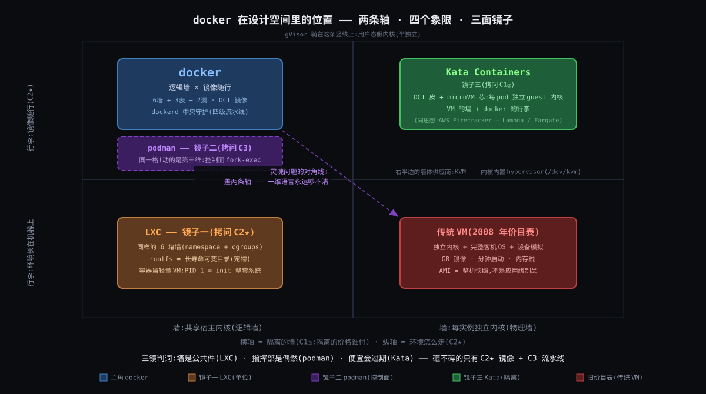
从这张图上能直接读出六件事:
- docker 和传统 VM 是对角象限 —— 差的不是一条轴,是两条(墙 + 行李)。这就是"容器 vs 虚拟机"吵了十年吵不清的根源:拿一维语言描述二维差异。
- LXC 和 docker 同列(同样的逻辑墙),差在纵轴 —— 镜像才是分水岭,墙不是。
- Kata 和 docker 同行(同样的镜像行李),差在横轴 —— 墙可以整面换材质,行李纹丝不动。
- podman 和 docker 挤在同一格 —— 它动的是这张图画不下的第三维:控制面。象限内零件相同,指挥体系不同。
- 四个象限全被占满 —— "容器还是 VM"是伪二分;设计空间是连续的,gVisor 干脆骑在竖线上(用户态假内核,半独立)。
- 右半边(独立内核)的现代实现,全站在同一块地基上 —— KVM:Linux 内核自带的 hypervisor。它和 namespace+cgroups 是同一个内核的两套隔离原语(详见 §6)。
§2 三位对照者的出生证明
对照之前先验明正身 —— 每位四件事:初衷 / 擅长 / 不擅长 / 现实里谁在用。
§2.1 LXC(Linux Containers,2008)
初衷:OpenVZ(2005)和 Linux-VServer(2001)早就证明"共享内核切分主机"可行,但都要给内核打私有补丁,永远进不了主线。2008 年 cgroups 进主线(2.6.24)后,IBM 的 Daniel Lezcano 等内核工程师把刚凑齐的 namespace + cgroups 组装成第一个纯主线容器运行时 —— 目标一句话:不打补丁的 OpenVZ,在原版内核上跑出轻量 VM 的体验。
擅长:
- 把容器当系统养:墙内跑 init/systemd + sshd + 多个服务,长生命周期、有状态
- 整机切分卖密度(VPS 形态);无特权容器先行者(LXC 1.0 在 2014 年就支持 user ns 无特权容器,比 docker rootless GA 早约六年)
不擅长:
- 应用分发:没有分层内容寻址镜像(它的"镜像"≈ rootfs 模板 tarball),没有 Dockerfile 这层构建语言;环境怎么进容器、怎么跨机器搬、怎么验真 —— 全是用户自己的事(C2★、C3 不在它的考卷上)
- 一次性、不可变、快速横向扩缩的用法(文化与工具链都不长这样)
典型应用场景:
- Proxmox VE(4.0 起用 LXC 全面替换 OpenVZ,与 KVM 并列两大虚拟化形态)
- Chrome OS Crostini(Chromebook 上开的那个 Linux,是 VM 里的 LXD 容器)
- Heroku 早期 dyno;以及 docker 0.1~0.9 自己(2013.3~2014.3,LXC 是 docker 的执行驱动)
- 管理面演化:LXD(Canonical,2015)→ 2023 年社区 fork 出 Incus
§2.2 podman(Red Hat,2018)
初衷:Red Hat 容器团队(领头人 Dan Walsh,SELinux 一代宗师)对 dockerd 有两大不满:① 一个以 root 身份常驻的守护进程 = 单点 + 巨大攻击面,而且 docker 组成员 ≈ 免密 root;② 容器生命周期被一家公司的守护进程私有 API 垄断,跟 systemd / K8s 的进程管理打架。于是按"容器只是普通 Linux 进程"重做一遍:无守护进程、fork-exec、默认支持 rootless,CLI 与 docker 逐字兼容(alias docker=podman 是官方口号)。
擅长:
- 安全/合规环境:rootless + 无 root 守护进程 + SELinux 深度集成
- systemd 原生集成(Quadlet:容器直接写成 systemd unit);pod 概念与 K8s 同构,
podman kube generate一键导出 YAML - CI 里嵌套跑容器(没有守护进程依赖)
不擅长:
- 需要中央常驻状态的功能:没有 swarm 类内置编排;依赖
docker.sock长连接的工具链要走podman.socket兼容层 - 桌面生态起步晚(Podman Desktop 2022 年才成型)
典型应用场景:
- RHEL 8+ 的默认容器工具(Red Hat 直接把 docker 包从 RHEL 8 仓库移除)、Fedora 默认
- OpenShift 节点工具链(与 CRI-O 同源同团队)
- 监管行业(银行/政企)私有云的 rootless 容器方案
§2.3 Kata Containers(2017,OpenStack 基金会 → OpenInfra)
初衷:多租户公有云的恐惧 —— 共享内核意味着一次容器逃逸 = 宿主沦陷 = 同宿主所有租户沦陷,而租户跑的是陌生人代码。Intel Clear Containers(2015,用 VT-x 给容器套轻量 VM)与 Hyper.sh 的 runV(2015,hypervisor-based runtime)在 2017 年 12 月合并成 Kata:对上说 OCI 方言(K8s 无感),对下每个 pod 一台 microVM + 独立 guest 内核 —— 口号就是"VM 的隔离,容器的体验"。
擅长:
- 跑不可信代码的多租户场景(公有云 serverless / 在线 IDE / CI 跑用户提交的任意代码)
- 强合规隔离(金融/政企);内核级故障隔离(一个 pod 把内核玩 panic,邻居无感)
不擅长:
- 极致密度与冷启动:百毫秒级启动 + 每 pod 几十 MB 内核税,仍输 runc 一个量级
- 文件 IO 有 VM 边界税(rootfs 经 virtio-fs 投影,弱于宿主直挂);云上需要裸金属或嵌套虚拟化
- "容器 = 宿主上可见的普通进程"这套调试直觉全部作废(宿主
ps看不到容器进程 —— 它在另一个内核里)
典型应用场景:
- 蚂蚁集团(吸收了 Hyper 团队,大规模生产;Kata 3.0 内置的 Rust VMM Dragonball 即出自蚂蚁/阿里系)、百度云、华为云
- 同思想不同实现:AWS Firecracker(Rust microVM,Lambda / Fargate 的底座)、Azure ACI 的 Hyper-V 隔离
- K8s 里一行
runtimeClassName: kata即可切换,镜像、YAML 全不用改
§3 镜子一:docker vs LXC —— 墙相同,为什么命运不同
§3.1 对比维度
容器的单位:一栋楼里圈出的房间,是当"家"长住(整套系统),还是当"标准车间"一次性进驻(单个应用)?
§3.2 LXC 的核心做法
LXC 砌墙的手艺和 docker 完全同源 —— clone 那 6 扇窗、cgroup 那 3 块表,Deep 里读过的每一行内核代码对 LXC 同样生效。差异全在墙内放什么、怎么放:
# /var/lib/lxc/web/config ← 每容器一份配置文件
lxc.rootfs.path = dir:/var/lib/lxc/web/rootfs ← rootfs = 普通目录:长寿命、可写、原地演化
lxc.uts.name = web
lxc.init.cmd = /sbin/init ← PID 1 = init,墙内跑整套系统对照 docker 表达同一件事:
FROM nginx:1.25 ← rootfs = 不可变层链(内容寻址,How §3 的一摞胶片)
CMD ["nginx", "-g", "daemon off;"] ← PID 1 = 应用本身,一容器一进程关键差异在生命周期语义:LXC 容器建好后,改环境 = 进去 apt upgrade,状态留在 rootfs 目录里 —— 这正是 How §3.6.3 那条统一律(「层从不被修改,只被遮盖或被替换」)的反面:LXC 的 rootfs 是一块永远被原地修改的盘。要把这套环境搬到第二台机器?tar 起来 rsync 过去,或者上配置管理 —— 2009 年凌晨的发布之痛,在 LXC 的世界里原样保留。
一个意味深长的细节:LXCFS。What §4.5 钉过"墙是漏的"(512MB 容器自报 64GB,因为 /proc 未 namespace 化)—— 正是 LXC 阵营专门造了 LXCFS(FUSE 伪 /proc)来糊这条缝。为什么是它造?因为它把容器当 VM 卖,VM 的住户理应看到"自己家"的内存表;而 docker 文化里这事长期靠应用自觉(JVM 的 UseContainerSupport)。补丁打在哪,暴露了各自把容器当什么。
§3.3 在五元组上的差异
| docker | LXC | |
|---|---|---|
| 核心抽象 | 不可变镜像的一次性实例 | 长寿命的轻量虚拟机 |
| 单位 | 一个应用(PID 1 = 应用) | 一整套系统(PID 1 = init) |
| C2★ 怎么解 | 镜像分层 + 内容寻址:环境 = 可分发的制品 | 不解:rootfs 模板起步,此后环境 = 机器上的状态 |
| C3 怎么解 | push/pull + sha256,机器验真 | 不解:tar/rsync/配置管理,验真靠人 |
| 代价 | 进程模型受限:多服务要拆容器;日志、僵尸进程都要重新设计 | 保留全套 VM 心智成本;发布之痛原样保留 |
§3.4 为什么 LXC 这么选
约束权重不同 —— LXC 的目标用户是 VM 管理员,它的题目是"把 VPS 做便宜"(C1 权重拉满:密度、开机快),而 C2★ / C3 根本不在它的考卷上:管理员本来就靠 ssh + 配置管理过日子。出身也注定了这一点:LXC 是内核社区造出来演示主线容器能力的运行时;docker 是 PaaS 公司(dotCloud)造出来解决"用户代码怎么进我的平台"的分发工具。工具长成什么样,取决于造它的人疼哪条约束。
由此引出一对运维行话:因为 C3 要求任何实例都能被机器无差别重建 → 个体不可特殊 → 于是把"不可重建的个体"叫宠物,把"可任意替换的群体"叫牲口(cattle)。LXC 的可变 rootfs 天然养宠物;docker 的不可变镜像天然养牲口。
§3.5 这面镜子照出了什么
6 堵墙是公共技术,镜像才是 docker。 墙完全相同的两个项目,一个长成了 Proxmox 里的 VPS 替代品,一个长成了改变软件分发方式的物种 —— 变量只有 C2★ 解没解。这是 Origin 终审("镜像是最伟大的发明")的对照法二次证明:第一次靠史证(v0.1 = LXC 包装纸;0.9 用 libcontainer 换掉 LXC、1.10 彻底删除 —— 墙的供应商换了,docker 还是 docker);这一次靠反证(墙不换、只抽掉镜像,docker 就不再是 docker)。
§4 镜子二:docker vs podman —— 拆掉指挥部,流水线还在
§4.1 对比维度
控制面:去人化流水线(C3)需要一个 7×24 常驻的 root 指挥部吗?
§4.2 podman 的核心做法
How §5 钉过 docker 的四级链:dockerd → containerd → containerd-shim → runc,前两级是常驻 root 守护进程。podman 的回答是把常驻环节全拆了:
docker: systemd ── dockerd ── containerd ── shim ── 容器进程 ← 两个常驻 root 守护进程
podman: systemd ─────────────── conmon ──── 容器进程 ← 零常驻守护
(podman run 布置完现场就退出)因为拆掉常驻守护后,仍要解决"容器的退出码、日志、tty 谁来接住"(原来 shim 干的活)→ 所以引入 conmon:每容器一个百 KB 级的 C 小看护,双 fork 后过继给 systemd。状态不再住在守护进程内存 + 中央库里,而是落在本地文件数据库(BoltDB/SQLite)+ 文件锁 —— 谁在运行 podman 命令,谁就临时成为控制面。
往下一层还有个 Deep 的直接回响:因为 Deep 钉死过 runc 的拧巴(Go 运行时天生多线程,撞上 setns 的单线程规矩,只好让 nsexec.c 的 C 段抢跑)→ 要解决"关键路径反正必须 C,何必拖着 Go 运行时"→ 所以 Red Hat 干脆用纯 C 重写 OCI runtime = crun:没有 Go 运行时之累,启动快约一倍、内存占用小一个量级。podman 在新发行版上默认搭 crun —— flag 还是那 6 个 flag,墙还是那 6 堵墙,换的只是搬砖的人。
rootless 则是 Deep 墙六的正篇上演:podman run 不需要 root —— 它先 unshare 出 user namespace,用 /etc/subuid 里分配给你的 uid 段写 uid_map,容器里的 root = 宿主上的你,内核从未发过真权力(create_user_ns 那套 kuid_has_mapping 检查在这里成了主角)。代价同样诚实:rootless 没权限在宿主造 veth 对(洞二需要 CAP_NET_ADMIN),只能退回用户态网络栈(slirp4netns/pasta)—— 墙六给的自由,洞二要收税。
§4.3 在五元组上的差异
| docker | podman | |
|---|---|---|
| 控制面 | dockerd:常驻 root 守护进程,API/状态/网络/构建集于一身 | 无守护:每容器一棵独立进程树,conmon 看护,systemd 当爹 |
| 谁有权力 | docker 组 ≈ 免密 root;rootless 后补(2020 GA)非默认 | 默认 rootless 可用:user ns + uid_map(Deep 墙六) |
| C3 流水线 | push/pull/build/run 全经一个守护进程的 API | 同样的 OCI 镜像 + registry + sha256:流水线在,指挥部没了 |
| 故障半径 | daemon 升级/崩溃 = 全节点风险点(live-restore 缓解) | 一容器一进程树,互不连坐;全局事件流/自动重启交给 systemd |
| 代价 | 单点 + 攻击面 | 没有内置编排(swarm);docker.sock 生态要兼容层 |
§4.4 为什么 podman 这么选
Red Hat 的约束价目表里,有两项 docker(公司)不疼的:企业安全合规(审计要问:为什么有个 root 进程永远开着?为什么进 docker 组等于发 root?)和 systemd 的正统地位(进程的生老病死本来就归 init 管,凭什么再立一个山头?)。更深一层是时代:2013 年 docker 必须自带指挥部 —— 生态是空的,build/run/push/网络/日志没人干;2018 年 OCI 镜像/runtime 已标准化、K8s 已经接管编排 —— dockerd 当年兼任的那堆角色,各自有了正主。
§4.5 这面镜子照出了什么
dockerd 是历史偶然,不是约束必然。 C3 要的是"API 化、可验真的流水线",从没要求"常驻"。证据链:OCI 标准化后,流水线被拆成可替换零件(build → buildah,run → crun,registry 原样),docker 自己也一路把 runc、containerd 拆出去捐掉 —— 方向与 podman 殊途同归。四级链能缩成 conmon → crun 两级而一切照转,说明那两级常驻,是 2013 年"什么都得自己干"年代的化石。
§5 镜子三:docker vs Kata —— 换掉墙,行李不动
§5.1 对比维度
隔离的墙:同一份 OCI 镜像,墙用"同一内核里的命名空间视图"(逻辑墙),还是"CPU 硬件虚拟化"(物理墙)?
§5.2 Kata 的核心做法
对上,Kata 是一个标准 OCI runtime(containerd-shim-kata-v2),K8s 一行 runtimeClassName: kata 切换;对下,它把 runc 的"在本内核里圈房间"换成"起一台微型真 VM":
containerd ── shim-kata-v2
├─ VMM(qemu-lite / cloud-hypervisor / firecracker / dragonball)
│ └─ 裁剪版 guest 内核(MB 级,砍掉绝大多数驱动)
│ └─ kata-agent(Rust,经 vsock 听 gRPC)
│ └─ 容器进程(在 guest 自己的 namespace + cgroups 里)
└─ 宿主侧:同一份 OCI 镜像照旧 pull、照旧 overlayfs 合成三个新零件,各有来路:
- 因为 C1③ 的"贵"拆开看 = 固件慢 + 通用内核大 + 设备模拟重(QEMU 全家桶)→ 要解决"只为跑一个容器,VM 能裸到什么程度"→ 所以引入 microVM:跳过 BIOS 直接加载内核、guest 内核裁到 MB 级、设备只留 virtio 精简单(Firecracker 连 PCI 总线都不要)—— 启动压进百毫秒,每 pod 内存税压到几十 MB。
- 因为 guest 和宿主之间隔着 VM 边界,unix socket 这类东西过不去 → 要解决控制通道 → 所以引入 vsock(无需网络栈的宿主-客机套接字),agent 在里面听 gRPC 指令。
- 因为镜像 rootfs 是在宿主的 overlayfs 上合成的,guest 里的进程要看到它 → 要解决跨 VM 边界的文件投影 → 所以引入 virtio-fs(共享内存页缓存的跨边界文件系统)—— 这也是 IO 税的来源。
最妙的是墙的去向:6 堵墙没有被拆除,而是整体搬进了 guest 内核 —— Kata 在 guest 里照样给容器进程套 namespace + cgroups(纵深防御,也保住 OCI 语义)。真正变的是楼宇结构:syscall 在 guest 内核终止,guest 与宿主只通过几十个 virtio 队列说话。对照 Why 的「国标插座」:docker 把宿主内核几百个 syscall 插孔直接暴露给陌生人;Kata 把插座搬进每个房间 —— 每户自带配电箱,楼宇主闸只留一根 virtio 线。攻击面从"几百个孔"缩到"几十个,且语义简单得多"。
两个旧伏笔在这里自动闭环:What §4.5 的"墙是漏的"(/proc/meminfo 谎报 64GB)在 Kata 里天然不存在 —— guest 内核只管这台 VM,/proc 说的就是真话;Deep 的三块表也换了挂法:宿主 cgroup 圈住的是整台 VM(连 VMM 带 guest 一起算账),guest 内部再用自己的表细分。
§5.3 在五元组上的差异
| docker(runc) | Kata | |
|---|---|---|
| 墙的材质 | 同一内核里的视图隔离(逻辑墙) | EPT 页表 + VT-x(物理墙)+ guest 内 6 堵墙(纵深) |
| 内核 | N 容器共享 1 个,syscall 直达宿主内核 | 每 pod 独立 guest 内核,syscall 到 guest 为止 |
| 攻击面 | 宿主内核全部 syscall(几百个孔,共享地基) | virtio 设备界面(几十个孔);内核漏洞不连坐 |
| C2★ 行李 | OCI 镜像 + overlayfs | 原样继承(virtio-fs 投影进 guest) |
| 价格(C1③) | ≈10ms 级启动,额外内存 ≈ 0 | ≈100ms 级启动,每 pod 几十 MB 内核税 + IO 折扣 |
§5.4 为什么 Kata 这么选
因为约束的价目表变了,而且两头一起变:一头是 C1② 互害的权重 —— 2008 年的"邻居"是自家的两个服务,2017 年公有云的"邻居"是陌生人提交的任意代码,逃逸的代价从"自家事故"涨成"全体租户沦陷";另一头是 C1③ 的"贵" —— VT-x 全面普及、KVM 成熟、内核可裁,VM 的单价被工程硬生生打下来一个量级。一条约束权重上调 + 另一条时价下跌,局部最优点就挪了位置。 docker 不是被推翻,是它的前提所对应的年代过去了一半。
§5.5 这面镜子照出了什么
两记重锤:
- "容器 vs VM"是伪命题,真分界是两条独立的轴。 墙(共享内核与否)× 行李(镜像随行与否)张成 2×2:docker = 逻辑墙×镜像,传统 VM = 物理墙×整机快照,LXC = 逻辑墙×无镜像,Kata = 物理墙×镜像 —— 第四个象限被占满,证明两条轴正交。灵魂问题里"它和虚拟机的根本区别"之所以十年吵不清,因为那是一条对角线:差两个维度的东西,用一个维度的语言永远说不清。
- VM 阵营的反击方式,是全盘接受 docker 的行李标准。 Kata 推翻的是墙的选材,继承的是 OCI 镜像 + registry + sha256 全套(C2★+C3 的解)—— 连对手都要踩着你的集装箱标准来打你,这才是"最伟大的发明"的终极证明。
§6 KVM 与 docker —— 一对经常被错配的名字
三面镜子都照完了,但镜子三身后还站着一个没正面亮相的角色 —— Kata 物理墙的发动机,也是概览图整个右半边的地基:KVM。它不答 docker 的考卷(所以不算第四面镜子),但它和 docker 的纠缠比任何一面镜子都深,值得单开一章。
先把一个流传极广的问法纠正掉:"上虚拟化,选 KVM 还是 docker?" —— 这是类目错误,两个名字根本不在同一层。KVM 不是 docker 的竞品;它和 docker 脚下的 namespace + cgroups 才是同辈 —— 同一个 Linux 内核提供的两套隔离原语,一套造逻辑墙,一套造物理墙。
§6.1 问题一:能在一个跑着的 Linux 内核里,再启动一个全新的内核吗?
先掂量手里已有的家伙什 —— namespace 干得了吗?干不了。 6 扇窗切的全是同一个内核的视图:uts 窗能换掉 uname 里的主机名(nodename),但 release 那一栏(内核版本)永远是宿主的 —— 这次"墙是漏的"漏得理直气壮,因为地基本来就只有一块。容器的轻,源自"不带厂房"(What 的搬家故事);代价在 Why 的国标插座里写死了:目的地内核 ≥ 所用最新插孔,而且你无权换厂房 —— 想用 io_uring 而宿主是老内核?ENOSYS,没商量。
所以"再启动一个内核"这个需求,namespace 在原理上就接不了 —— 它换视图,不换地基。要换地基,只能往 syscall 之下再挖一层,把硬件本身虚拟出来。CPU 厂商早就留了这道暗门 —— 硬件虚拟化扩展(Intel VT-x / AMD-V / ARM 的对应扩展):guest 运行模式 + EPT 两级页表,让一段代码以为自己独占一台裸机 → 要解决"谁把这对裸能力包装成人人可用的服务"→ 所以 2007 年 KVM(Kernel-based Virtual Machine)进主线(2.6.20;Qumranet 的 Avi Kivity 主写,次年红帽收购 —— 没错,又是红帽):一个内核模块,把各家硬件虚拟化统一封装成一个字符设备 /dev/kvm,任何用户态进程都能 ioctl() 它 —— 创建 VM、塞内存、造 vCPU、KVM_RUN。从此 Linux 内核本身就是 hypervisor,不再需要 ESXi/Xen 那样的专用底座。
于是问题一的答案是:能 —— 而且只需要一个用户态进程。它从引导开始,跑起一个版本完全随意的内核:更新的、更旧的,甚至不是 Linux(Windows/BSD 照单全收)。
(顺带一刀:不开 VM 还有个法子叫 kexec —— 热替换当前内核。但那是"换脑子"不是"多一个脑子":全机一起换,旧世界即刻终结。想在旧内核旁边多跑一个新内核,只有物理墙这条路。)
由此得出整章最反直觉、也最值钱的事实:
一台 KVM 虚拟机,在宿主上就是一个普通进程。
QEMU(或 firecracker / cloud-hypervisor)进程 = 这台 VM;它的每个 vCPU = 进程里的一条线程;guest 的"物理内存" = 这个进程 mmap 出来的一段内存。宿主ps看得到它,kill杀得死它,cgroup 圈得住它。
所以"容器是进程、VM 不是"的流行说法并不准确 —— 在 Linux 上,VM 也是进程。容器进程和客机进程在宿主 ps 里并排站着,分水岭只是 CPU 往下走的那一步:
| docker 容器进程 | KVM 客机(QEMU 进程) | |
|---|---|---|
| 执行模式 | CPU 普通模式,syscall 直达宿主内核 | CPU guest 模式,syscall 终止于来宾内核;敏感操作触发 VM-exit 弹回宿主 |
| 看到的内核 | 宿主内核(经 namespace 滤镜的视图) | 自带的完整来宾内核(自己的调度器/页表/驱动) |
| 隔离边界 | 几百个 syscall 插孔(逻辑墙) | VM-exit + virtio 设备界面(物理墙,硬件兜底) |
| 额外成本 | ≈ 0(就是个进程) | 来宾内核 + 设备模拟 + 两级页表开销 |
层层对位表 —— 把两个世界逐层对齐,类目错误自动消解:
| 层 | docker 世界 | KVM 世界 |
|---|---|---|
| 内核隔离原语 | namespace + cgroups(逻辑墙) | KVM(物理墙的发动机) |
| 执行器 | runc / crun | QEMU / firecracker / cloud-hypervisor |
| 行李(C2★) | OCI 镜像:分层 + 内容寻址 + registry | qcow2 / AMI:整机快照,无分层、无内容寻址、无 registry 标准 |
| 控制面(C3) | dockerd / podman | libvirt / virsh / 各云 API |
这张表读出两件事:① 跟 docker 整体对位的不是 KVM,而是 QEMU + libvirt 那一整套;KVM 真正对位的是 namespace + cgroups。② 看行李那一行:KVM 世界答了快二十年,仍停留在"整机快照"(AMI —— Why 阶段说过,C2★ 单独只逼出 AMI)—— 墙的生意和行李的生意是两个生意:KVM 把墙做到了极致,行李的标准却让 docker 定了。
§6.2 三条联系,一条比一条深
- 同根:KVM(2.6.20,2007)和 cgroups(2.6.24,2008)前后脚进主线 —— 同一个内核在相邻两年里孵化了物理墙和逻辑墙两条路线。Linux 从来不是"容器派"或"VM 派",它两头下注。
- 互为嵌套:现实部署里两者几乎总是叠着用 —— 你在公有云上跑的 k8s 节点,本身就是一台 KVM 虚拟机(GCE 原生 KVM;EC2 Nitro 的 hypervisor 基于 KVM 核心技术,甩掉了 QEMU),容器的逻辑墙砌在 KVM 物理墙里面;反过来,Kata 把 KVM 物理墙塞进容器流水线里面(§5.2 那排 VMM,全是
/dev/kvm的客户)。墙里有墙,各司一层。 - 价目表的供货方:C1③ 说"隔离必须便宜" —— Kata 之所以能把 VM 压到百毫秒,前提是 KVM 早就把 hypervisor 做成了内核免费内置能力(对照 2008 年:ESXi 要钱,Xen 要改内核)。镜子三那场"物理墙降价战",军火商是 KVM。
§6.3 问题二(更深):macOS 上没有 Linux 内核,docker 怎么跑?
把问题一的答案拿在手里,这道题就自己解开了:docker 的逻辑墙只会砌在 Linux 内核上 —— 脚下没有 Linux,就先用"KVM 类"的物理墙凭空造一个出来。
macOS 的内核是 XNU,不说 namespace/cgroups 这门方言;但它有自己的 /dev/kvm 等价物 —— Hypervisor.framework:把 Intel Mac 的 VT-x / Apple Silicon 的 ARM 虚拟化扩展封装成用户态 API,普通进程不装内核扩展就能起 VM。Docker Desktop 整个就架在这上面:
macOS(XNU 内核,听不懂 namespace 这门方言)
└─ Hypervisor.framework(macOS 版 /dev/kvm:用户态起 VM,免内核扩展)
└─ 一台隐藏 VM(早年 HyperKit,如今 Virtualization.framework)
└─ LinuxKit 攒出的迷你 Linux 内核 ← docker 随身自带的"厂房"
└─ dockerd + containerd + runc ← 到这儿才回到熟悉的流水线
└─ 你的容器(6 墙照砌、3 表照挂)
mac 终端的 docker CLI ───(socket 穿进 VM)───→ 操纵以上整套所以在 Mac 上 docker run 之后,容器里 uname -r 报的从来不是 macOS 的版本号,而是那台隐藏 VM 的 Linux 内核版本 —— What 阶段说过"Win/Mac 要靠 Docker Desktop 偷塞一台 Linux VM",偷塞用的撬棍,现在有名字了。Windows 是同一个故事的方言版:WSL2 = Hyper-V 工具 VM 里跑一个真 Linux 内核。
这台隐藏 VM 和联系②里的"云上 k8s 节点"是一对孪生 —— 同样是"物理墙里砌逻辑墙",动机却相反:云上嵌套买的是隔离(陌生租户之间要硬墙),Mac 上嵌套买的是兼容(脚下压根没有 Linux,先造一个)。物理墙在这里露出第二张脸:它不只是更硬的墙 —— 它是唯一能把"内核本身"当行李运的器皿。逻辑墙运应用,物理墙运内核。
(彩蛋:2025 年 WWDC 上 Apple 自己下场,发布 Containerization 框架和 container 命令 —— 给每个容器单独配一台 microVM。看着眼熟吗?正是 Kata 的形状。四个象限的故事,在 Mac 上从头重演了一遍。)
§6.4 问题三(最贴身):Mac 上 -v ~/code:/app 为什么出了名的慢?
先回 Linux 基线。How §3.7 把 volume 定性为"凿穿 mnt 墙的竖井",Deep 洞二读过它的内核实现(do_loopback → clone_mnt → attach_recursive_mnt):bind mount 只是同一个内核里的 VFS 记账 —— 同一棵 inode 树多挂一个名字,同一份 page cache、同一套 dcache,容器里每次 read()/stat() 都是原生 syscall,代价 ≈ 0。洞之所以免费,是因为它凿在逻辑墙上 —— 墙的两边本来就是同一个内核。
Mac 上这个前提没了:你的源码住在 XNU 的 APFS 里,容器却在隐藏 VM 的 Linux 内核里 —— 文件和容器分属两个内核,中间隔着一道物理墙。bind mount 只能嫁接 guest 内核自己看得见的东西,所以每一次文件操作都得过境:
容器里 stat("/app/index.js")
→ guest Linux VFS → virtiofs(前几代:gRPC-FUSE / osxfs)
→ virtio 队列过墙 ……(物理墙边界)
→ macOS 侧文件服务进程 → XNU / APFS
← 原路返回单次过境是微秒级,而 Linux 本地 dcache 命中是纳秒级 —— 一次贵三个数量级;再乘上前端工程的日常(node_modules 十万个小文件,起一次 dev server = 一场 stat 风暴),就是"出了名的慢"的全部秘密。Docker Desktop 换了三代撬棍(osxfs → gRPC-FUSE → virtiofs),每代都在减少拷贝和往返,但谁也抹不平根本账:两个内核无法共享 page cache 和 dcache;缓存一致性(fsevents ↔ inotify 的事件翻译)还要另缴一笔。
民间疗法全在反向印证这笔账:named volume 快 —— 数据搬进了 VM 里的 ext4,洞回到单内核;mutagen/同步方案快 —— 干脆不过境,两边各持一份;devcontainer 把源码整个放进 VM 侧 —— 同理。治法只有一种:别让热路径穿物理墙。
收口对偶:洞凿在逻辑墙上,是一扇门;凿在物理墙上,是一座海关 —— 每个包裹过境都要换协议、验关、缴微秒。这正是 §5.3 给 Kata 记的那笔"IO 边界税"的同款税单,只不过 Mac 用户天天在缴。
一句话收口:KVM 与 docker 不是对手 —— 它们是同一个内核伸出的两只手,一只造物理墙,一只造逻辑墙;docker 真正的独门生意(行李)两只手都不管。而当脚下连这个内核都没有时(macOS / Windows),永远是物理墙先把 Linux 内核当行李运进来,逻辑墙再进场砌房。
§7 约束回扣:三锤之后,什么没碎
| 镜子 | 替换的零件 | 拷问的约束 | 判词 |
|---|---|---|---|
| LXC | 单位:应用 → 整套系统(且无镜像) | C2★ | 墙是公共件,镜像才是差异化心脏 |
| podman | 控制面:常驻守护 → fork-exec | C3 | C3 要流水线,没要指挥部;dockerd 是 2013 年的化石 |
| Kata | 墙:namespace → 硬件虚拟化 | C1③ | "便宜"是会过期的价目表;但行李标准被对手原样继承 |
合起来一句话:docker 的设计 = 2008~2013 年约束价目表下的局部最优。 三面镜子各自改动一条约束的权重或时价,就各自得到一个不同的局部最优 —— 这正是 Why 阶段方法论的反向验证:约束变,结构变;约束不变的部分,结构也不变。 而三面镜子都没能砸碎的不变量只有一个:C2★ 的镜像 + C3 的流水线(LXC 缺了它而衰落,podman 留着它而繁荣,Kata 抄走它来反击)。墙的材质、指挥部的形态、单位的大小,全是偶然;让环境随行、让机器验真,是必然。
§8 呼应灵魂问题
"容器到底是什么?它和虚拟机的根本区别在哪?"
对照之后,这个问题可以给出最终形态的答案:
- 容器不是"轻量 VM" —— 那是 LXC 走的路,走成了另一个物种。docker 意义上的容器 = 带着全部环境、可哈希验真、一次性进驻的应用进程。
- 它和 VM 的根本区别不是一条,是两条正交的轴:谁的内核(墙)× 环境怎么走(行李)。历史上的争论吵不清,是因为一直在用一维语言描述对角线。
- 而当 Kata 把 VM 的墙和 docker 的行李杂交之后,答案反而纯粹了:墙,从来是内核(或硬件)的公共能力;docker 真正留给世界的,是行李的标准 —— 镜像与流水线。
灵魂问题至此闭环 ~98%:剩下的 2% 不是知识,是方法 —— "下一次遇到一个新技术,怎么用这套『约束 → 结构 → 对照』的路数自己把它拆开" —— 留给最后的收束篇。
阶段 7:docker 的设计哲学与方法论沉淀(团队讲义版)
灵魂问题:"容器到底是什么?它和虚拟机的根本区别在哪?当一个容器真正跑起来的那一刻,Linux 内核里到底发生了什么?"
这是整趟旅程的最后一篇,也是唯一一篇不教 docker 新知识的:它把前面六站反复用到的思考路数蒸馏出来 —— 讲义的前半部分(§0~§5)把 docker 钉成一个"被约束逼出来的标本",后半部分(§6~§7)把钉标本的手法变成你们下次拆任何系统都能复用的方法。
读者口径:默认你用过 docker(跑过docker run、写过 Dockerfile)但没拆过内部;完全没碰过容器的同学,先读 §0 末尾的「五句话脚注」再回头。
§0 从对照走到收束:三件事记住
前六站各自回答了一个问题:它是什么(What)、为什么非有不可(Why)、怎么工作(How)、怎么来的(Origin)、内核里到底怎么写的(Deep)、别人怎么答同一道题(三面镜子)。收束篇把这六站压缩成三根承重梁 —— 也是这份讲义希望每个读者带走的三句话:
- 三条约束是 docker 的"为什么"。 因为 C1(榨干硬件)+ C2★(环境随行)+ C3(去人化验真)三股压力在 2008~2013 年同时到位 → 要解决"谁能同时满足三条"→ docker 是第一个全答对的。没有约束视角,docker 的每个零件都像天才的任意发挥;有了约束视角,每个零件都是被逼出来的必然 —— 这是全篇的地基。
- 6 墙 · 3 表 · 2 洞是 docker 的"是什么"。 因为 C1② 共享默认互害 + C1③ 隔离必须便宜 → 要解决"一个内核上互不相害地住下 N 个应用"→ 所以 6 扇 namespace 窗(视图隔离:你看不见邻居)+ 3 块 cgroup 表(用量隔离:你吃不掉邻居)+ 2 个洞(veth 凿穿 net 墙、volume 凿穿 mnt 墙:隔离之后留下的必要通路)。"容器"在内核里不是一个东西,而是这一组记账的合称 —— 普通进程戴上 11 件装备,就叫容器。
- 镜像是 docker 的"凭什么"。 因为 C2★(环境长在机器上)+ C3(字节无身份)→ 要解决"环境怎么变成可分发、可验真的制品"→ 所以分层 + 内容寻址 + registry 的镜像体系。这是三面镜子的终审结论:墙是借来的(内核公共件,LXC 同款),镜像才是 docker 自己的发明 —— 把"程序和它的依赖环境一起打包"从配置管理的口号变成了一个有哈希身份的工程实体。
| 承重梁 | 是什么 | 为什么存在 |
|---|---|---|
| 三条约束 | docker 诞生前就存在的三股行业压力 | 没有它,每个组件都是"任意设计";有了它,每个组件都可被推导、可被审判 |
| 6墙3表2洞 | 容器在内核里的全部实体(隔离支柱) | C1 的解:互不相害且便宜地共享一个内核 |
| 镜像 | 环境的可分发、可验真制品(打包+运维支柱) | C2★+C3 的解,docker 唯一的原创发明,也是所有对手都继承的遗产 |
三者的关系就是讲义的叙事线:约束(§2 每行的第二列)逼出架构(§2 每行的第一列),架构的每个选择都付了代价(第三列)、都有过备选(第四列)、都被现实里别人的选择验证过(第五列)。
📌 给新同学的五句话脚注(老手跳过):
① namespace:内核发给进程的"视图滤镜",共 6 类,各管一类资源的可见性(进程列表、主机名、文件树、网络栈、IPC、用户身份)。
② cgroup:内核的用量电表 + 断路器,管 CPU/内存/IO 用多少。
③ overlayfs:把多层只读目录"叠"成一个视图的文件系统 —— 容器的地板。
④ 镜像 / 层:应用 + 全部依赖环境的只读快照,按层堆叠、按内容哈希(sha256)寻址;registry 是存放它的仓库,digest 是它的指纹身份(与名字 tag 无关)。
⑤ OCI:镜像格式与运行时的行业标准 —— 集装箱的"角件尺寸",谁都能照着造轮子。
§1 一张极简概览图
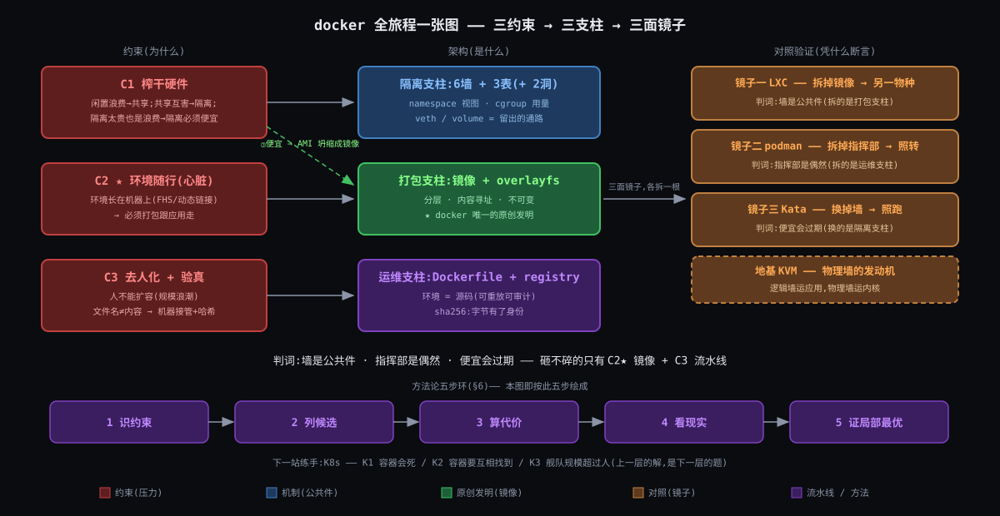
从这张图能直接读出五件事:
- 左→中是"逼出"关系:C1 逼出隔离支柱(6墙3表),C2★ 逼出打包支柱(镜像+overlayfs),C3 逼出运维支柱(Dockerfile+registry+sha256)。一条虚线是关键剧情:C1③"便宜"叠加到 C2★ 上,整机快照(AMI)才坍缩成容器镜像。
- 中→右是"验证"关系:三面镜子各拆一根支柱 —— LXC 拆掉镜像(衰落)、podman 拆掉指挥部(照转)、Kata 换掉墙(照跑),KVM 是右半边一切物理墙的地基。
- 绿色只给了镜像 —— 全图唯一的"原创发明"色;墙和表是蓝色的"公共件"。
- 判词一行:墙是公共件 · 指挥部是偶然 · 便宜会过期 —— 砸不碎的只有镜像 + 流水线。
- 底部五步环就是 §6 的方法论:识约束 → 列候选 → 算代价 → 看现实 → 证局部最优 —— 这张图本身就是用这五步画出来的。
§2 五元组表:整趟旅程的浓缩(核心产物)
读表说明:每行一个设计决策;第二列回答"它被哪条约束逼出来"(编号见顶部速查);第四列是当年桌面上真实存在过的另一条路;第五列是现实世界里真走了那条路(或这条路)的人 —— 历史是天然的对照实验。
| # | 设计决策 | 解决的约束 | 付出的代价 | 当年的反事实候选 | 现实对照(谁真的选了) |
|---|---|---|---|---|---|
| 1 | 共享宿主内核(不带厂房) | C1③ 隔离必须便宜 | 隔离弱于 VM:内核漏洞全楼连坐;内核版本钉死,换不了地基 | 每应用一台 VM(自带独立内核) | 传统 VM 一直在;Kata(2017)把 VM 改便宜后真把这条路救活了 |
| 2 | namespace 视图隔离(6 扇窗) | C1② 共享默认互害 | 墙是漏的(/proc 未 ns 化:512MB 容器自报 64GB);user 窗复杂难驯 | 改 Unix ABI:给一切内核对象加"租户 ID",一次性全局改造 | FreeBSD jail(2000)/ Solaris zones(2004)整体主义一次成型;Linux 选渐进拼装,2002→2013 十一年凑齐六扇窗 |
| 3 | cgroups 用量记账(3 块表) | C1② 资源互害 | 内存表是"杀手"不是"限速器"(超额 = OOM kill);统计≠隔离(loadavg 仍是全局的) | 调度器级硬分区(固定配额,空闲也不让) | 大型机 LPAR / 虚拟化硬切真这么干;cgroup v2 统一层级(2016)是 v1 乱象的修正案 |
| 4 | 镜像 = 分层 + 内容寻址 | C2★ + C3(字节验真) | 层不可变 → 改底层要整链重铸(缓存连坐);运行时首写整文件 copy-up | 整机快照(AMI);或配置管理(Puppet/Chef 到目的地重建环境) | AWS AMI = C2★ 单独的解(没有 C1③ 加成);LXC 的 rootfs 模板 = 干脆不解 |
| 5 | overlayfs 联合挂载(地板) | C2★ 层复用 + C1① 省存储 | 逐层探测查找;whiteout 墓碑;目录合并语义复杂 | 每容器全量拷贝 rootfs;或块级 CoW(devicemapper) | docker 历史上真换过一圈后端(AUFS→devicemapper→btrfs→overlay2),文件级最终胜出 |
| 6 | Dockerfile(环境 = 源码) | C3 可重放、可审计 | 顺序敏感,缓存连坐;无脑写法层数膨胀 | docker commit:手工捏好容器再快照 | commit 至今存在但被全行业视为反模式 —— "环境必须长在代码里"成了文化 |
| 7 | registry + sha256 寻址 | C3 字节无身份 | tag(名字)与 digest(身份)双轨,latest 漂移坑新人 | 文件名 + 人工 md5 核对 + ftp/rsync 分发 | 2009 年那个凌晨(本篇 C3 的出处)就是这条路的代价实录;apt/yum 的 GPG 是"签名验源",仍不寻址内容 |
| 8 | dockerd 中央守护进程 | C3 API 化流水线(2013 年生态空白,build/run/push 没人干,只能全自己干) | root 常驻单点;docker 组 = 免密 root;daemon 升级全节点风险 | fork-exec 无守护,进程生死交还 init | podman(2018)真这么做了且一切照转;docker 自己也把 runc/containerd 拆出去捐掉 —— 等于承认方向 |
| 9 | 一容器一进程(应用容器) | C2★ 单位 = 应用(镜像跟应用走,不跟机器走) | 多服务要拆容器 + 编排;日志、僵尸进程、init 职责全要重新设计 | 容器当轻量 VM:墙内跑 init + 整套系统 | LXC 真走了这条路 → 活成 VPS 替代品;K8s 的 pod = 对"一进程太细"的工程修正 |
| 10 | veth + bridge + NAT(洞二) | C1② 网络要隔离,但服务要可达 | 八跳路径 + NAT 改写 + conntrack 账本;调试心智成本高 | --network host 不隔离;或 macvlan 给容器发真 MAC | host 模式在性能敏感场景真实在用;macvlan/SR-IOV 在 NFV 领域是正解 —— 洞的大小本来就是可调的 |
| 11 | volume bind mount(洞一) | C2★ 的边界:状态不该进镜像(镜像=制品,数据=状态) | 凿穿 mnt 墙 = 该路径放弃不可变性;Mac 上跨内核变"海关"(出名的慢) | 数据也打进镜像;或一律走网络存储 | 数据库容器化的最佳实践(named volume / 云盘 CSI)就是这行的工程展开 |
| 12 | runc 让 C 段抢跑(nsexec) | 内核 setns 的单线程规矩 vs Go 运行时天生多线程 | 一个项目两种语言;自指执行边界出过 CVE-2019-5736 | 整个 runtime 干脆用纯 C 写 | crun(Red Hat)真这么做了:快约一倍、内存小一个量级,podman 默认搭它 |
| 13 | OCI 标准化(镜像/运行时规范) | C3 在行业层面的延伸:生态去单点 | docker 公司亲手让渡垄断利益 | 私有格式继续垄断,靠先发优势收租 | 真实历史选了开放:2015 OCI 成立;Kata、podman、K8s 全靠它接入 —— 连对手都踩着你的标准打你 |
这张表怎么用:竖着读第二列,你会发现 13 行只挂在 3 条约束上 —— 架构的"多"是约束的"少"长出来的;竖着读第五列,你会发现每行都有人真走了另一条路 —— 所以 docker 的每个选择都不是"唯一可能",只是"当年价目表下的最优"。这正是 §4 要论证的事。
§3 同构系统:这套设计哲学在哪里又出现过
同构 ≠ 表面相似。判据:约束结构相同 → 解的结构相同,而不是名词长得像。
§3.1 git —— 镜像的同构兄弟
git 和 docker 镜像面对同一条约束(C3:字节无身份,人不能验真),给出了逐字相同的解:内容寻址(SHA 哈希 = 字节的身份证)+ 不可变对象(commit/tree/blob 从不修改,只新增)+ 链式引用(commit→tree→blob ≈ manifest→config→layers)。How 阶段那条统一律 ——「层从不被修改,只被遮盖或被替换」—— 在 git 里逐字成立:git commit --amend 不是修改,是重铸一个新对象、旧的留在 reflog。差异只有一处:git 寻址源码,docker 寻址环境。一句话:docker 镜像 = 把 git 的存储哲学搬到 rootfs 上。
§3.2 JVM —— "国标插座"的另一次收口
JVM 的 "write once, run anywhere" 和容器的可移植性是同一道题的两个收口位置:都需要一条窄而稳的腰,腰以上随便搬,腰以下各管各。JVM 把腰定在字节码(几百条指令,向后兼容三十年);docker 把腰定在 syscall 界面(几百个调用,Linus 的"不破坏用户态"铁律)。代价也同构:腰以下绑死 —— JVM 应用绑 JVM 版本,容器绑 Linux 内核家族(所以 Mac 上要先造一个 Linux,见对照篇 §6.3)。差异在"厂房"谁出:JVM 自带运行时(行李里有厂房),docker 借目的地的内核(行李轻,但目的地必须有厂房)。
§3.3 集装箱 —— 把"协调成本"打下来的标准化
(这是 What 阶段读者自创的类比,这里正式收编为同构。)ISO 集装箱的革命不在铁箱子,在角件尺寸标准化:箱内是什么,船、港、卡车一概不问 —— 于是承运链条的每一环可以独立竞争演化。OCI 的角色一模一样:镜像格式定死,build 工具(Dockerfile/buildah/bazel)、运行时(runc/crun/kata)、仓库(Hub/Harbor/ECR)、编排(K8s/Nomad)各自卷各自的。经济史的结论也同构(《The Box》,Levinson):集装箱降的不是搬运成本,是协调成本 —— 对应 C3 的"去人化":码头工人(人肉运维)从流程的瓶颈位被移走了。
§4 局部最优论证(关键段落)
给定约束组合 {C1, C2★, C3} 和 2008~2013 年的价目表,docker 形态是唯一能同时通过三道筛的设计。
逐条拆筛子 —— 每取消一条约束,最优解立刻变成别的,而且现实里都有人真这么活着:
- 取消 C1③(隔离不必便宜 / VM 降价了) → 每应用一台 VM 更优,隔离更硬 → 2017 年后 microVM 真把价打下来,Kata/Firecracker 真出现,公有云 serverless 真在用。便宜是会过期的价目表。
- 取消 C2★(环境不必随行) → 假如全世界都写静态链接单二进制(Go 文化),墙 + 一个调度器就够,镜像没必要存在 → Go 部署文化、unikernel 真这么活;但 40 年动态链接生态对大多数技术栈仍然成立,所以 C2★ 对行业整体仍然成立。
- 取消 C3(规模小,人肉可控) → LXC + ssh + 配置管理完全够用 → 小团队至今真这么过,而且是对的(见 §7 第五步:价目表不同,最优解不同)。
- 加强 C1②(邻居从自家服务变成陌生人代码) → runc 的逻辑墙不够厚 → gVisor/Kata 真出现,公有云跑不可信代码的场景真在用。
结论(给团队的版本):docker 不是 2013 年最聪明的设计,而是当年约束组合下唯一全过筛的设计。 约束变,最优点就漂移 —— 但注意漂移的方式:墙被换过(Kata)、指挥部被拆过(podman)、单位被改过(K8s pod),唯独镜像 + 流水线(C2★+C3 的解)被每一个后继者原样继承。必然的部分留下来,偶然的部分被替换掉 —— 这就是"局部最优"四个字的全部含义。
§4.1 预演一个反驳:"namespace 才是核心,没有隔离一切免谈"
(分享会上大概率有人这么说 —— 这里给出接法;观点来自本讲义的第一位读者。)
- 先认一半:"没有隔离一切免谈"是对的 —— 隔离是容器的必要条件。
- 再驳一半:但到 2013 年,墙早就是人人有份的公共件 —— LXC(2008)用着同款 6 墙,OpenVZ(2005)、FreeBSD jail(2000)、Solaris zones(2004)更早;docker v0.1 的墙干脆就是借 LXC 的。必要条件不参与决胜:人人都有的牌,决定不了谁赢。
- 决胜在哪:在还没人解决的约束上 —— C2★(环境随行)+ C3(去人化验真)。docker 补齐的"产品最后一公里"(镜像 +
docker run一条命令 + pull/push),用约束语言说就是:抢答了最后一条未解约束。Origin 站的判词原样搬来收口:镜像 = 价值,docker run= 传播系数。 - 顺手捞出一条方法论:"容易使用、容易理解"不是市场包装,它本身是一条真约束 —— 采纳约束(认知成本 / 迁移成本)。反例现成:zones 技术上比 Linux 六扇窗优雅(一次成型、语义自洽),但长在 Solaris 上,采纳约束直接判了死刑。识约束时别只盯技术 —— 五步法第一步因此补一句(见 §6)。
§5 时代局限与演化:化石如何被逐步置换
| 2013 年的形状 | 为什么当年合理 | 后来怎么被置换 |
|---|---|---|
| dockerd 全家桶(build/run/push/网络/日志一个进程全干) | 生态空白,不自己干没人干 | 2015 OCI 立标准;runc、containerd 先后拆出捐掉;podman 证明零守护也能转 |
| 墙是漏的(/proc 不分户) | namespace 是渐进拼装,没人有权改 Unix 全局语义 | LXCFS 打补丁;JVM UseContainerSupport 应用自救;Kata 干脆换楼(guest 内核天然诚实) |
| 安全模型按"邻居是自家服务"设计 | 2013 年容器主要在自家机房互相挤 | 公有云时代邻居变陌生人 → seccomp/AppArmor 加固;gVisor 假内核;Kata 物理墙 |
| swarm 想连编排一起垄断 | 平台公司的自然冲动 | 输给 K8s(2017 年认输内置 K8s 支持)—— docker 守住了"单位"(镜像/容器),丢掉了"舰队" |
| Mac/Win 开发体验靠"偷塞 VM" | 逻辑墙只认 Linux 内核,别无他法 | 三代文件撬棍(osxfs→gRPC-FUSE→virtiofs);WSL2;2025 年 Apple 亲自下场给每容器一台 microVM |
| Docker 公司 ≠ docker 技术 | 创业公司要养活自己 | 2019 企业业务卖给 Mirantis,公司沉浮;但镜像格式、registry 协议、Dockerfile 语义全部永生 —— 引擎会死,标准不死 |
这张表的读法:左列没有一项是"错误",全是当年价目表下的合理解;右列也没有一项是"打脸",全是价目表变化后的重新求解。技术史不是对错史,是约束变迁史。
§6 方法论沉淀:五步法(可推广)
把整趟旅程的手法收成五步 —— 下次任何新技术砸过来,按这五步拆:
- 识约束 —— 找"不可再分"的事实:经济现实、生态惯性、语义铁律、规模物理。问两个问题:"哪些约束是它诞生前就存在的?哪一条是钦点的心脏(没有它这个东西就不必存在)?"
*docker 实例:C1/C2★/C3;心脏是 C2★(LXC 反证:有墙没镜像 = 另一个物种)。*
*口诀:先找压力,再看产品。*
*增补(来自 §4.1,读者贡献):识约束别漏采纳约束(认知 / 迁移成本)—— 它决定"技术更优"与"真被用上"之间的生死。*
- 列候选 —— 每条约束至少列两个解法,包括"不解决"(不解决也是一种解,LXC 对 C2★ 就选了不解决)。
*口诀:没有候选的设计叫信仰,不叫工程。*
- 算代价 —— 每个候选违反哪条约束、付出什么。写不出代价 = 没看懂(任何决策都有代价;"几乎没有缺点"是分析失败的标志)。
*docker 实例:共享内核换便宜,代价是连坐 + 版本钉死 —— 五元组表第三列整列都是。*
- 看现实 —— 历史和竞品是天然对照实验:谁真走了另一条路?活得怎样?活着的反例比推理值钱。
*docker 实例:三面镜子 + KVM —— 每个"另一条路"都有人真走,且都活着,只是活在不同的约束权重里。*
- 证局部最优 —— 收口问题:"在它出生年代的价目表下,它是不是唯一全过筛的?哪条约束的时价一变,最优点就会漂?"答得出后半句,你就拥有了预测它被谁颠覆的能力。
*docker 实例:C1③ 的"贵"贬值 → Kata 出现;C1② 的"互害"升值 → gVisor 出现 —— 全部命中。*
拆新系统时的提问模板(直接抄去用):
① 它诞生前,世界疼在哪?(约束)
② 当年桌上还有哪几张牌?(候选)
③ 它选的这张,亏在哪?(代价)
④ 选别的牌的人,现在活得怎样?(现实对照)
⑤ 什么条件一变,它就该被换掉?(局部最优的边界)
§7 现场泛化:用五步法拆 K8s(速写)
这一节的目的不是讲透 K8s(那是下一趟的事),而是当场演示五步法换一个系统照样转。
第一步,识约束。 docker 解决了"一台机器上的一个容器",它的成功本身制造了三条新约束 —— 注意这个结构:上一层的解,是下一层的题:
- K1 — 容器会死:进程会崩、节点会宕,而 C3(去人化)说了"不能靠人盯着重启" → 必须有东西自动把"应该跑着的"和"实际跑着的"对齐。
- K2 — 容器要互相找到:容器 IP 随生死漂移(对照篇里那个 172 网段是临时门牌),跨机器的服务发现不能靠人改配置 → 必须有稳定的名字层。
- K3 — 舰队规模超过人:几百节点 × 几千容器,O(容器数 × 变更频率)的操作量,人是常数 —— 这就是 C3 的舰队版,docker 把单兵去人化了,舰队还没有。
第二步,列候选。 K1:人肉值班 / cron 重启脚本 / 中央调度器声明式调和(你声明"要 3 个副本",控制器循环把现实掰成声明)。K2:静态配置文件 / DNS 轮询 / 注册中心 + 虚拟 IP。K3:命令式脚本批量执行("做这 10 步") vs 声明式("变成这个样子",剩下的系统自己想)。
第三步,算代价。 K8s 在每一格都选了"声明式 + 调和环",代价是复杂度怪兽:etcd 共识存储、一打 controller、抽象层级(pod→deployment→service→ingress)陡峭得劝退;小集群里这套机器比业务本身还重。代价写不出来的同学,回去看 §6 第三步。
第四步,看现实。 swarm 选了"简单优先"(docker 自家,命令式倾向、内置开箱即用)—— 输了,因为它的简单在 K3 的规模下不够用;Nomad 活在"够简单"档,活得不错;各云的托管服务(ECS 等)选"复杂度外包给云商"。没有谁错,各自活在不同的价目表里。
第五步,证局部最优。 在 Google 级规模的价目表下(K3 权重拉满),声明式调和是唯一全过筛的 —— 这正是 Borg 十年经验的结晶。但把价目表换成"三人团队五个服务":K8s 是过度设计,docker-compose 才是那张价目表下的局部最优。同一个方法,两张价目表,两个最优 —— 方法论的意义不是告诉你"用 K8s",是告诉你"什么时候不用"。
收口:K8s 里的 pod / 控制器 / Service,大概就是下一趟旅程的"6墙3表2洞"。留给团队的三道练手题(用 §6 的提问模板):① epoll → io_uring:什么约束的时价变了?② Kafka 的"日志即真相":被哪条不可再分的事实逼出来的?③ Redis 的 RDB vs AOF:两张价目表各是什么?
§8 约束回扣:收束篇的产物对账
| 本篇产物 | 蒸馏自哪几站 | 回扣哪条约束 |
|---|---|---|
| 三根承重梁(§0) | Why(约束)+ How/Deep(架构)+ Origin/对照(镜像终审) | C1~C3 全部 |
| 五元组表 13 行(§2) | 全部六站 | 第二列逐行标注,13 行只挂 3 条约束 |
| 同构系统(§3) | How 的 git 类比 + Why 的国标插座 + What 的集装箱 | C3 / 接口稳定性 / C3 |
| 局部最优论证(§4) | 对照篇三面镜子 + Origin 时间线 | 三条约束的"时价"各自变动的后果 |
| 演化表(§5) | Origin + 对照篇 | 约束变迁 → 结构置换 |
| 五步法 + K8s 速写(§6~§7) | 整趟旅程的手法本身 | 方法层:约束 → 决策 → 代价 → 对照 → 最优 |
验证方式和前几站一样:任何一行如果摘掉约束列还能成立,说明那行写的是"知识点"而不是"推导"—— 欢迎团队按这个标准挑刺。
§9 呼应灵魂问题(100% 闭环)
"容器到底是什么?它和虚拟机的根本区别在哪?当一个容器真正跑起来的那一刻,Linux 内核里到底发生了什么?"
给团队三个版本的最终答案,按场合取用:
电梯版(30 秒):容器不是轻量虚拟机 —— 它是带着全部环境、可哈希验真、一次性进驻的普通 Linux 进程。它和 VM 的根本区别有两条轴:用谁的内核(墙),环境怎么走(行李)。docker = 共享内核 × 镜像随行;VM = 独立内核 × 整机快照 —— 差两条轴,所以一维语言吵了十年。
工程版(2 分钟):docker run 落下的瞬间,内核里发生三组事:① clone 带六面 flag,新进程领到 6 扇视图窗(看不见邻居);② 进程被挂进 cgroup 三块表(吃不掉邻居);③ overlayfs 把镜像的只读层叠上一层可写层当 rootfs,veth 一头插进容器一头插上网桥(地板与门)。从头到尾没有任何"虚拟机"被创建 —— 只有一个被精心记账的进程。镜像那头,sha256 保证你跑的字节就是 CI 产出的字节 —— 这一半(打包与验真)才是 docker 的原创。
哲学版(给愿意多想的人):墙是内核的公共能力(LXC 同款、Kata 搬走照用、KVM 是另一套),指挥部是 2013 年的化石(podman 拆给你看),连"便宜"都是会过期的价目表(microVM 正在过期它)。docker 真正留给世界的,是让环境随行、让机器验真这两件事的工程标准 —— 镜像与流水线。一句话:容器技术的本质,是 Linux 内核的隔离原语 + 一场关于"软件如何交付"的标准化革命;前者人人有份,后者才叫 docker。
灵魂问题至此闭环 100%:Deep 站收到 95%(内核里发生了什么,逐行源码),对照篇收到 98%(和 VM 的根本区别,2×2 终审),最后 2% 是"怎么把这套思考带走"—— §6 的五步法和 §7 的演示,就是这 2%。这趟旅程教的不是 docker,是"下次不需要这趟旅程"。
延伸阅读
如果你想继续探索(每个都能从本文的钩子接走):
/atlas k8s:收束篇已经把题开好了 —— K1 容器会死 / K2 容器要互相找到 / K3 舰队规模超过人;「上一层的解,是下一层的题」。/atlas kvm:对照篇只把它请来对质了一章;「同一个内核的另一只手」值得自己走一趟(VT-x / VM-exit / EPT / virtio 的约束链)。/atlas io_uring:Why 篇「国标插座」的单向性在它身上最锋利 —— 新插孔怎么长出来、为什么 epoll 不够用,正好练五步法。
Q&A 钩子(开放问题)
读完之后,可以继续追问:
- Apple 的 Containerization(每容器一台 microVM)如果成为桌面默认,2×2 设计空间里「共享内核」象限还剩哪些不可替代的场景?
- OCI 镜像若要原生支持按需拉取(lazy pulling / eStargz),「层不可变 + 整层哈希」的模型哪里需要松动?哪条约束在反对?
- 用五步法拆 eBPF:在「墙与洞」的语言里它是什么 —— 在内核墙上开的一扇可编程窗?它被哪条约束逼出来?